<!doctype html>
<html lang="en">
<head>
  <meta charset="utf-8">
  <meta name="viewport" content="width=device-width, initial-scale=1">
  <title>arxiv digest — 2026-08-12</title>
  <style>
:root {
  --bg: #ffffff;
  --fg: #1f2328;
  --muted: #59636e;
  --border: #d0d7de;
  --card: #f6f8fa;
  --link: #0969da;
}
body {
  max-width: 980px;
  margin: 0 auto;
  padding: 2rem 1rem 5rem;
  font-family: -apple-system, BlinkMacSystemFont, "Segoe UI", Helvetica, Arial, sans-serif;
  line-height: 1.55;
  color: var(--fg);
  background: var(--bg);
}
a { color: var(--link); }
img { max-width: 100%; height: auto; }
pre, code { background: var(--card); border-radius: 6px; }
pre { padding: 1rem; overflow-x: auto; }
blockquote { border-left: 4px solid var(--border); padding-left: 1rem; color: var(--muted); }
details { margin: 0.6rem 0; }
summary { cursor: pointer; font-weight: 600; }
.paper-figures-scroll {
  display: flex;
  gap: 1rem;
  overflow-x: auto;
  overscroll-behavior-x: contain;
  padding: 0.75rem 0.25rem 1rem;
  margin: 1rem 0 1.25rem;
  border-top: 1px solid var(--border);
  border-bottom: 1px solid var(--border);
  scroll-snap-type: x proximity;
}
.paper-figure-card {
  flex: 0 0 min(260px, 72vw);
  scroll-snap-align: start;
  background: var(--card);
  border: 1px solid var(--border);
  border-radius: 12px;
  padding: 0.55rem;
}
.paper-figure-card img {
  display: block;
  width: 100%;
  max-height: 240px;
  object-fit: contain;
  background: white;
  border-radius: 8px;
}
.paper-figure-caption {
  display: block;
  margin-top: 0.5rem;
  color: var(--muted);
  font-size: 0.85rem;
}
.figure-strip-hint {
  color: var(--muted);
  font-size: 0.9rem;
  margin-bottom: -0.3rem;
}
</style>
  <!-- MathJax: renders $...$ inline math and $$...$$ display math, plus
       \(...\) and \[...\]. Loaded from the official CDN; works offline
       once cached. Configured to skip code/pre blocks so arxiv IDs that
       look like dollar amounts don't get mangled. -->
  <script>
    window.MathJax = {
      tex: {
        inlineMath: [['$', '$'], ['\\(', '\\)']],
        displayMath: [['$$', '$$'], ['\\[', '\\]']],
        processEscapes: true,
        processEnvironments: true
      },
      options: {
        skipHtmlTags: ['script', 'noscript', 'style', 'textarea', 'pre', 'code'],
        ignoreHtmlClass: 'tex2jax_ignore',
        processHtmlClass: 'tex2jax_process'
      }
    };
  </script>
  <script id="MathJax-script" async
    src="https://cdn.jsdelivr.net/npm/mathjax@3/es5/tex-chtml.js"></script>
</head>
<body>
<header style="background-color: #333; color: white; padding: 15px; margin-bottom: 20px;">
  <h1 style="margin: 0; font-size: 24px;">
    <a href="https://ochelpan.github.io/arXiv_clean/" style="color: white; text-decoration: none;">Main</a>
  </h1>
</header>

<h1>Daily arXiv Report</h1>

<hr>
<p>
<a href="index.html">← Index</a>
 · <a href="papers_09.html">← Previous</a> · <a href="papers_11.html">Next →</a>
</p>
<hr>

<h2>Papers 181–200</h2>
<p><a id="paper-2608.08827"></a></p>
<h3 id="time-reversal-invariant-altermagnetic-acoustic-crystals"><a href="http://arxiv.org/abs/2608.08827v1">Time-Reversal-Invariant Altermagnetic Acoustic Crystals</a></h3>
<p><strong>Authors:</strong> Tianzhi Xia, Han-Rong Xia, Jinglin Liu, Xiying Fan, Zebin Zhu, Zhen Gao<br>
<strong>Type:</strong> both · <strong>Category:</strong> other · <strong>PDF:</strong> <a href="https://arxiv.org/pdf/2608.08827v1">https://arxiv.org/pdf/2608.08827v1</a><br>
<strong>Analysis basis:</strong> full PDF text, analyzed in chunks
<strong>Topic relevance:</strong> 🔥 <code>analog quantum simulation</code> <strong>4/5</strong> · <code>Frenkel-Kontorova</code> <strong>1/5</strong> · <code>interference shaping light</code> <strong>1/5</strong></p>
<div class="figure-strip-hint">↔ Scroll figures horizontally</div>
<div class="paper-figures-scroll">
<figure class="paper-figure-card">
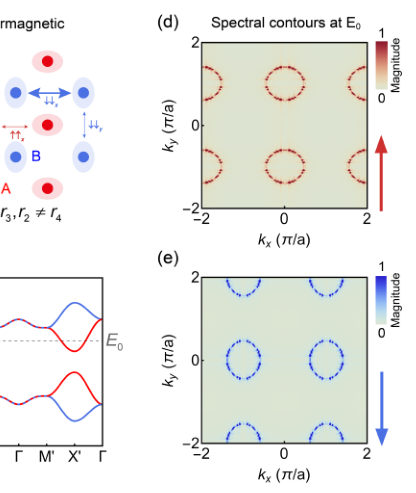
<figcaption class="paper-figure-caption"><b>Fig 1.</b> FIG. 1. Tight-binding model. (a) Top panel: a bilayer centered square lattice with two sublattices (A and B) hosting different pseudospins. The NN hopping 𝑡𝑡 is fixed, while NNN couplings 𝑟𝑟𝑖𝑖 can be tuned to generate altermagnetic order. Bottom panel: pseudospin configuration (left) and Brillouin zone with high-symmetry paths (right). For pseudospin-up (red arrow), the on-site potentials are (𝑉𝑉, −𝑉𝑉) for the lower and upper layers with interlayer coupling 𝜅𝜅 ; for pseudospin-down (blue arrow), they are (−𝑉𝑉, 𝑉𝑉) with interlayer coupling −𝜅𝜅. (b) Altermagnetic phase realized under the condition 𝑟𝑟1 ≠𝑟𝑟3 and 𝑟𝑟2 ≠𝑟𝑟4. (c) Calculated band structure of the altermagnetic phase, revealing clear...</figcaption>
</figure>
<figure class="paper-figure-card">
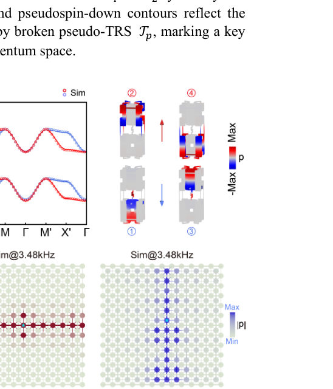
<figcaption class="paper-figure-caption"><b>Fig 2.</b> FIG. 2. Acoustic realization of the altermagnetic phase. (a) Acoustic cavity-tube structure for realizing the altermagnetic phase. Cavities without and with a central hole correspond to on-site potentials +𝑉𝑉 and −𝑉𝑉 (the hole lowers the on-site potential by 2𝑉𝑉), respectively. The average frequency of the upper and lower cavities determines the center frequency. The coupling strengths are controlled by the cross-sectional areas of the connecting tubes. (b) Left panel: eigenfrequency spectra along the high- symmetry line of the Brillouin zone. The tight-binding results are shown as solid lines, calculated with 𝜔𝜔0 = 3.48 kHz, 𝑉𝑉= 0.24 kHz, 𝑡𝑡= −𝜅𝜅= 𝑟𝑟1 = 𝑟𝑟2 = −0.006 kHz, and 𝑟𝑟3 = 8𝑟𝑟1 =...</figcaption>
</figure>
<figure class="paper-figure-card">
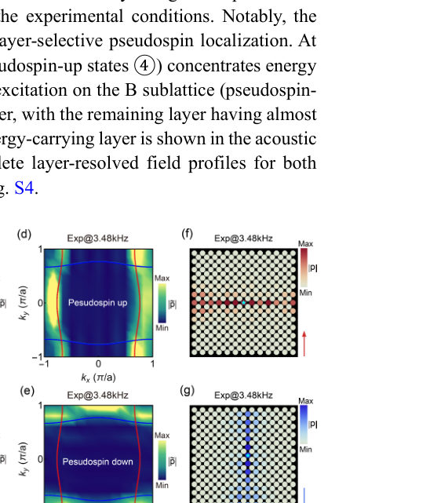
<figcaption class="paper-figure-caption"><b>Fig 3.</b> FIG. 3. Experimental demonstration of the altermagnetic acoustic crystals. (a) Photograph of the fabricated acoustic sample. (b-c) Measured (colormap) and theoretical (red and blue solid lines) bulk band structures along the high-symmetry momentum path for the pseudospin-up (b) and pseudospin-down (c) subspaces, respectively. The bands display a pronounced spin splitting. (d-e) Measured (colormap) and theoretical (red and blue solid lines) iso-frequency contours at 3.48 kHz for the pseudospin-up (d) and pseudospin-down (e) states. The iso-frequency contours are elongated in mutually orthogonal directions (vertical versus horizontal), thereby directly revealing the anisotropic band...</figcaption>
</figure>
<figure class="paper-figure-card">
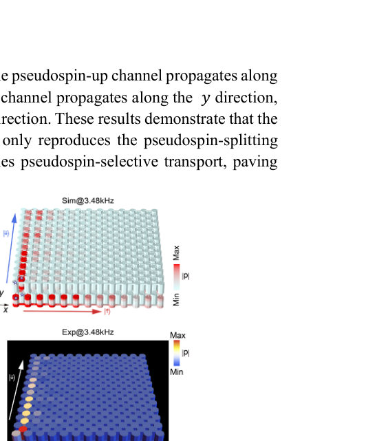
<figcaption class="paper-figure-caption"><b>Fig 4.</b> FIG. 4. Experimental characterization of acoustic pseudospin filtering. (a) Schematic illustration of pseudospin filtering in the altermagnetic structure. Upon simultaneous excitation of pseudospin-up (red arrows) and pseudospin-down (blue arrows) states, the two channels are routed along orthogonal directions, enabling spatial separation and the selective extraction of a single pseudospin species at each output port. (b) Simulated acoustic pressure distribution demonstrating pseudospin filtering. Four sources (stars) located in the lower-left corner excite both the pseudospin-up and pseudospin-down states at 3.48 kHz. The pseudospin-up states (A sublattice) propagate along the 𝑥𝑥 direction...</figcaption>
</figure>
</div>

<p><strong>Summary.</strong> The paper introduces a novel acoustic crystal model that mimics the physics of altermagnets while strictly preserving Time-Reversal Symmetry. By using pseudospin degrees of freedom, they demonstrate measurable signatures like pseudospin splitting and directional filtering in sound waves. This establishes acoustic crystals as a versatile platform for exploring spin-inspired wave manipulation in nonmagnetic devices.</p>
<p><strong>Why it may be interesting.</strong> This work provides a concrete, non-electronic platform (acoustics) to study complex quantum magnetic phenomena like altermagnetism without breaking fundamental symmetries, offering insights applicable to phononics and mechanical wave engineering.</p>
<details>
<summary>Detailed structure</summary>
<p><strong>Main problem.</strong> The core challenge is extending altermagnetism—a state with spin-split bands but zero net magnetization—to classical wave systems while strictly preserving Time-Reversal Symmetry (TRS).</p>
<p><strong>Main result.</strong> The authors successfully demonstrated the first time-reversal-invariant altermagnetic acoustic crystal, showing pseudospin splitting and orthogonal directional transport under TRS-preserving conditions.</p>
<p><strong>Method.</strong> Theoretical modeling uses a tight-binding Hamiltonian with pseudospin degrees of freedom, complemented by experimental characterization using 2D spatial Fourier transforms of measured sound-pressure fields.</p>
<p><strong>Model / system.</strong> The system is an acoustic crystal based on a bilayer-centered square lattice. The model incorporates pseudospin ($\uparrow/\downarrow$) and utilizes a pseudo-time-reversal operator to maintain true TRS while modeling altermagnetic physics.</p>
<p><strong>Key observables.</strong> Pseudospin-dependent band splitting, anisotropic iso-frequency contours showing orthogonal elongation, and spatially separated acoustic field distributions corresponding to different pseudospins.</p>
<p><strong>Important parameters / regimes.</strong> Anisotropic nearest-neighbor couplings ($r_1 
eq r_3$ and $r_2 
eq r_4$) are key for inducing the altermagnetic phase; specific frequencies (e.g., $\omega_0 = 3.48$ kHz) are used in experiments.</p>
<p><strong>Assumptions / limitations.</strong> The method relies on introducing a pseudospin degree of freedom and constructing a pseudo-time-reversal operator to circumvent the need for genuine TRS breaking in classical wave systems.</p>
<p><strong>Figures summary.</strong> Figures illustrate band structures, constant-energy contours showing orthogonal splitting, and experimental measurements confirming sublattice-spin locking and the spatial separation of propagating acoustic fields along perpendicular axes ($x$ vs $y$).</p>
<p><strong>Paper structure.</strong> The paper first introduces the theoretical framework using pseudospin to model altermagnetism in acoustics. It then details the experimental realization and measurement techniques, culminating in demonstrations of pseudospin splitting, sublattice-spin locking, and directional pseudospin filtering.</p>
</details>
<details>
<summary>Abstract</summary>
<p>Altermagnets have emerged as a new class of magnetic materials that combine spin-split electronic bands with zero net magnetization. Extending this paradigm to classical-wave systems has, however, been fundamentally challenging because conventional realizations require broken time-reversal symmetry (TRS). Here, we overcome this limitation by introducing two pseudospin degrees of freedom and constructing a pseudo-time-reversal operator that faithfully reproduces the action of its physical counterpart while preserving actual TRS. Building on this framework, we theoretically propose and experimentally realize the first time-reversal-invariant altermagnetic acoustic crystal. Acoustic measurements directly reveal pseudospin-dependent band splitting--a defining hallmark of altermagnetism--under strictly TRS-preserving conditions. Moreover, the altermagnetic acoustic crystal exhibits sublattice-pseudospin locking, enabling flexible control over acoustic pseudospin splitting and filtering. Our work establishes acoustic crystals as a versatile platform for exploring altermagnetic physics and opens new avenues for spin-inspired wave manipulation in nonmagnetic devices.</p>
</details>
<p><sub><a href="#top">↑ back to top</a></sub></p>

<p><a id="paper-2608.09611"></a></p>
<h3 id="buried-germanium-quantum-well-proximitised-by-magnetic-field-resilient-superconducting-platinum-iridium-germanosilicide"><a href="http://arxiv.org/abs/2608.09611v1">Buried germanium quantum well proximitised by magnetic field-resilient superconducting platinum iridium germanosilicide</a></h3>
<p><strong>Authors:</strong> Praveen Viswanathan, Erik Lemmens Sjöstrand, Davide Costa, Marinus Fischer, Athique Ahmed, Sara Martí-Sánchez, Lucas E. A. Stehouwer, Jordi Arbiol, Anasua Chatterjee, Giordano Scappucci, Karina L. Hudson<br>
<strong>Type:</strong> experiment · <strong>Category:</strong> quantum information and computing · <strong>PDF:</strong> <a href="https://arxiv.org/pdf/2608.09611v1">https://arxiv.org/pdf/2608.09611v1</a><br>
<strong>Analysis basis:</strong> full PDF text, analyzed in chunks
<strong>Topic relevance:</strong> 🔥 <code>QC/QI experiment</code> <strong>4/5</strong></p>
<div class="figure-strip-hint">↔ Scroll figures horizontally</div>
<div class="paper-figures-scroll">
<figure class="paper-figure-card">
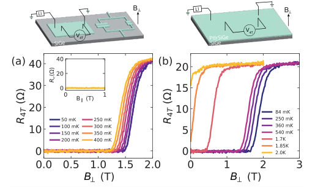
<figcaption class="paper-figure-caption"><b>Fig 1.</b> Figure 1: (a) Thin film sample a: Resistance R4T vs out-of plane magnetic field B⊥for a range of temperatures. Inset: resistance R4T measured as a function for in-plane magnetic fields B∥up to 1 T at 400 mK. (b) Thin film sample b: R4T vs B⊥for varying temperature, measured in two separate cool downs in a dilution refrigerator and a 4He refrigerator.</figcaption>
</figure>
<figure class="paper-figure-card">
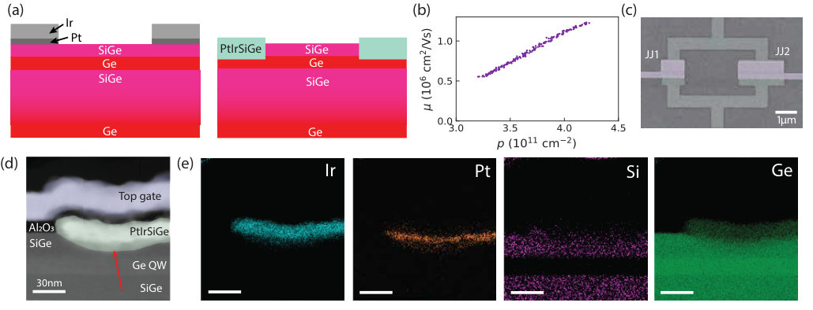
<figcaption class="paper-figure-caption"><b>Fig 2.</b> Figure 2: (a) Schematic of the fabrication process. After removing the native oxide, platinum is deposited followed by iridium on the surface of the SiGe heterostructure. Rapid thermal annealing results in the Pt and Ir diffusing into the SiGe barrier to form PtIrSiGe alloy and contact to the germanium quantum well.(b) Mobility µ vs hole density p of a Hall bar fabricated with PtIrSiGe contacts on the Ge/SiGe quantum well on germanium wafer. (c) False colour SEM of the SQUID device. The grey area is bare SiGe, the pale green regions are superconducting PtIrSiGe with Josephson junctions (JJs) 1 and 2 indicated. The pink regions are independent Ti/Pd top gates overlapping the...</figcaption>
</figure>
<figure class="paper-figure-card">
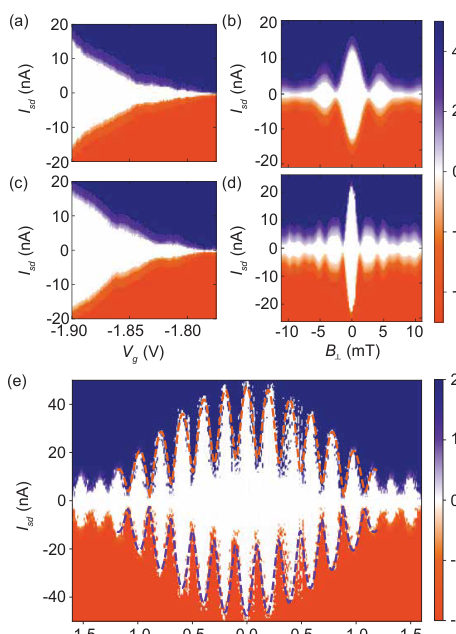
<figcaption class="paper-figure-caption"><b>Fig 3.</b> Figure 3: Junction 1: (a) Colour map of dc voltage drop Vdc across Josephson junction 1 as a function of dc source-drain current Isd and top gate voltage Vg. (b) Colour map of Vdc as a function of dc Isd and out-of-plane magnetic field B⊥at fixed Vg = −1.9 V. Junction 2: (c) Colour map of Vdc across Josephson junction 2 as a function of dc Isd and Vg. (d) Colour map of Vdc as a function of Isd and B⊥at fixed Vg = −1.9 mV. (e) SQUID oscillations with both junctions conducting, such that Ic2 ≈2Ic1. Fits to equation (1) are shown as dashed lines, in orange for the positive branch and purple for the negative branch. (b), (d), and (e) are offset in B⊥to account for known hysteresis in the magnet.</figcaption>
</figure>
<figure class="paper-figure-card">

<figcaption class="paper-figure-caption"><b>Fig 4.</b> Fig. 3 (c) and (d) show similar gate-tunable switching current and Fraunhofer-like oscillations for junction 2, for which junction 1 was set to Vg,1 = 0 V. Junction 2 being approximately twice as wide, has a smaller oscillation pe- riod in B⊥compared to junction 1 (see Supplementary Material Section III for Fraunhofer fits). We investigate the SQUID operation by setting the junctions in an asymmetric regime, such that the criti- cal current through junction 2 is twice as large as that through junction 1, i.e., Ic2 ≈2Ic1. We then observe SQUID oscillations as smaller oscillations on top of the Fraunhofer envelope of the larger junction, modulated</figcaption>
</figure>
</div>

<p><strong>Summary.</strong> The research reports on fabricating and characterizing a hybrid device coupling a buried germanium quantum well to a robust superconductor ($  ext{PtIrSiGe}$). By achieving proximity superconductivity in this structure using top-down lithography, the authors demonstrate a key technological milestone for building superconducting qubits. The work confirms high performance metrics, including large critical fields and preserved semiconductor quality after processing.</p>
<p><strong>Why it may be interesting.</strong> This work directly addresses the physical realization of solid-state qubits by creating a controllable superconducting interface with high-quality semiconductor channels, which is central to quantum computing hardware development.</p>
<details>
<summary>Detailed structure</summary>
<p><strong>Main problem.</strong> Developing superconducting materials integrated with low-disorder semiconductor heterostructures for scalable quantum technologies.</p>
<p><strong>Main result.</strong> The authors successfully demonstrated the proximity effect by coupling a high-mobility germanium quantum well to a robust superconductor ($    ext{PtIrSiGe}$), forming functional Josephson junctions and SQUIDs.</p>
<p><strong>Method.</strong> Top-down lithography was used to fabricate devices, followed by low-temperature transport measurements (Hall bar, SQUID) and structural characterization using STEM/EDX.</p>
<p><strong>Model / system.</strong> The physical system is a $  ext{Ge}/    ext{SiGe}$ heterostructure containing a buried Germanium Quantum Well ($    ext{Ge QW}$). This semiconductor is proximitized by a superconducting layer of platinum iridium germanosilicide ($  ext{PtIrSiGe}$) to create S-N-S Josephson junctions.</p>
<p><strong>Key observables.</strong> Superconducting critical magnetic field ($B_{\perp,c}$), critical temperature ($T_c$), quantum well mobility ($\mu$), and Fraunhofer-like oscillations in the SQUID junction current ($I_{dc}$).</p>
<p><strong>Important parameters / regimes.</strong> $   ext{PtIrSiGe}$: $B_{\perp,c} \approx 1.9$ T, $T_c \sim 1.85$ K; $   ext{Ge QW}$: $\mu = 1.3 	imes 10^6 	ext{ cm}^2/	ext{Vs}$ at $500^\circ	ext{C}$ annealing.</p>
<p><strong>Assumptions / limitations.</strong> The process successfully preserves the structural integrity and high mobility of the Ge QW despite high-temperature processing required for superconductor deposition.</p>
<p><strong>Figures summary.</strong> Figure 1 shows resistance vs. magnetic field confirming superconductivity limits; Figure 2 details the fabrication cross-section showing alloy diffusion into the heterostructure; Figure 3 displays gate-tunable switching current and SQUID oscillations modulated by $B_{\perp}$.</p>
<p><strong>Paper structure.</strong> The paper progresses from establishing the need for robust superconducting/semiconductor interfaces, detailing the $   ext{PtIrSiGe}$ material properties, demonstrating its integration via lithography (structural confirmation), and finally proving functionality through electrical measurements on SQUID devices.</p>
</details>
<details>
<summary>Abstract</summary>
<p>Hybrid superconductor-semiconductor systems provide a versatile platform for quantum technologies, ranging from superconducting-spin interfaces to topological quantum devices. Progress toward scalable implementations requires superconductors that exhibit high critical fields ($>1$T) at accessible temperatures integrated with low-disorder semiconductor heterostructures. Here we demonstrate a superconducting platinum iridium germanosilicide (PtIrSiGe), with critical out-of-plane magnetic field up to $B_{\perp} = 1.9$T and critical temperature of $T_c\sim 1.85$K, integrated with planar germanium with mobility $μ= 1.3\times 10^6$cm$^{2}$/Vs via top-down lithography fabrication. We show that the integrity of the germanium quantum well and mobility and density of the 2D hole gas are preserved despite annealing at $500°$C, a temperature comparable to that used for strained germanium epitaxy. We further demonstrate proximitisation of a buried germanium quantum well in a gate-defined Josephson junction/SQUID on a Ge/SiGe heterostructure.</p>
</details>
<p><sub><a href="#top">↑ back to top</a></sub></p>

<p><a id="paper-2608.08500"></a></p>
<h3 id="crystalline-group-iv-josephson-junction"><a href="http://arxiv.org/abs/2608.08500v1">Crystalline Group-IV Josephson Junction</a></h3>
<p><strong>Authors:</strong> Frederik H. Knudsen, Axel Leblanc, Patrick J. Strohbeen, Jechiel van Dijk, Yiliu Li, Logan Kusher, Arunav Bordoloi, Alisa Danilenko, Xiangchao Ma, Salva Salmani-Rezaie, Javad Shabani<br>
<strong>Type:</strong> experiment · <strong>Category:</strong> quantum information and computing · <strong>PDF:</strong> <a href="https://arxiv.org/pdf/2608.08500v1">https://arxiv.org/pdf/2608.08500v1</a><br>
<strong>Analysis basis:</strong> full PDF text, analyzed in chunks
<strong>Topic relevance:</strong> 🔥 <code>QC/QI experiment</code> <strong>4/5</strong></p>
<div class="figure-strip-hint">↔ Scroll figures horizontally</div>
<div class="paper-figures-scroll">
<figure class="paper-figure-card">
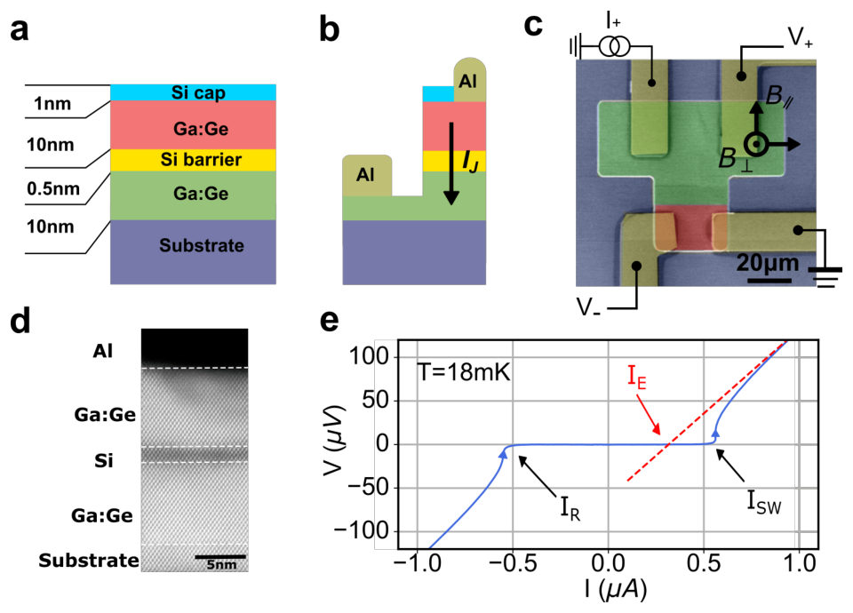
<figcaption class="paper-figure-caption"><b>Fig 1.</b> Figure 1: A Ga:Ge vertical crystalline Josephson junction. a, The 10 nm superconducting hyperdoped Ga:Ge films are grown on a Ge substrate and separated by a 0.5 nm Si barrier. The heterostructure is capped by 1 nm of Si. b, Superconducting Al leads contact the top and bottom Ga:Ge films, allowing transport measurements through the junction, the Josephson current IJ direction is indicated by the arrow. c, False color Scanning Electron Microscope (SEM) image of a representative fabricated device. Four Al leads (in brown-yellow) are deposited to contact the Ga:Ge bottom layer (in green) and top layer (in red). The magnetic field orientation is as depicted here for the rest of this work. d,...</figcaption>
</figure>
<figure class="paper-figure-card">

<figcaption class="paper-figure-caption"><b>Fig 2.</b> Figure 2: Junction Characteristics. a, Differential resistance as a function of the applied magnetic field perpendicular to the substrate, B⊥(Device A). Inset: device schematic indicating the current path and field orientation. b, Top: eRNISW /∆for the six JJs with varying junction area, scattered around the Ambegaokar-Baratoff limit, and below the short ballistic limit with perfect transparency (τ = 1) for SNS junctions. We find that ISW and RN scales reasonably well as AJ and 1 AJ respectively.</figcaption>
</figure>
<figure class="paper-figure-card">
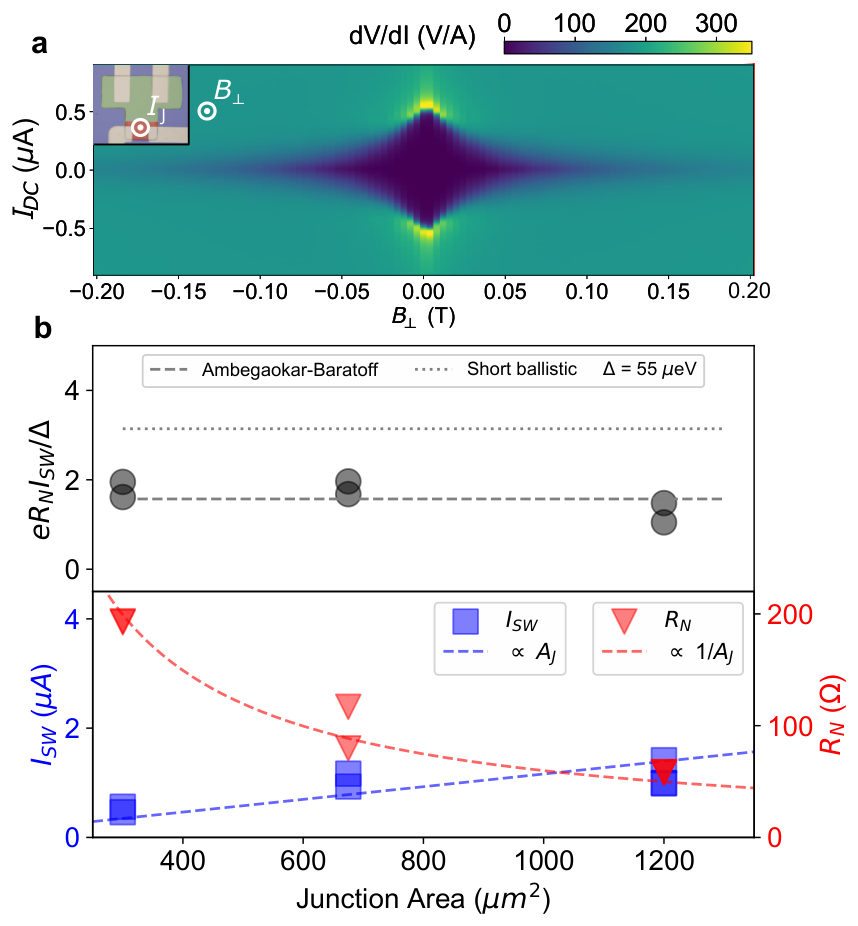
<figcaption class="paper-figure-caption"><b>Fig 3.</b> FIG 3a shows the magnetic-field dependence of the junction’s dV/dI characteristic, where the switching current ISW is enhanced around B∗ ∥= 80 mT. FIG 3b presents IV traces at B∥= 0, 40 mT, and 160 mT, illustrating both the enhancement of ISW at finite field and the emergence of hysteresis. FIG 3c highlights the modulation of ISW /IR, where IR is the retrapping current as a measure of the hysteresis. The enhancement of the switching current and the emergence of hysteresis are observed across all six devices on the chip.</figcaption>
</figure>
<figure class="paper-figure-card">
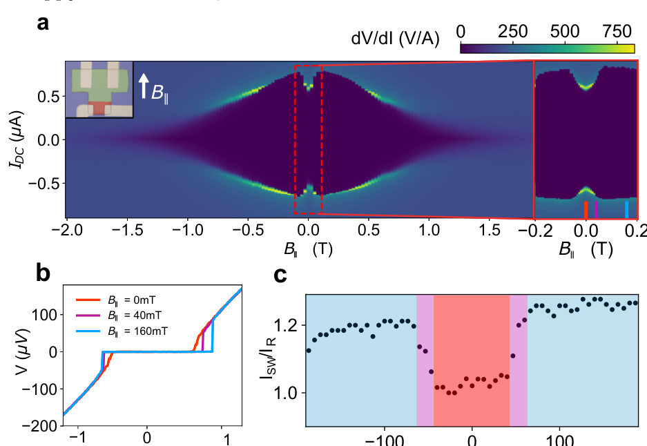
<figcaption class="paper-figure-caption"><b>Fig 4.</b> Figure 3: Magnetic-Field-Enhanced Switching Current. a, Differential resistance as a function of the in-plane magnetic field, B∥, and the bias current, IDC. Inset, left: device schematic indicating the field orientation. Inset, right: zoom of the region around the enhanced switching current. b, IV traces extracted from a at the field values indicated by the colored ticks. c, The ratio of the switching current, ISW , to the retrapping current, IR — a measure of IV hysteresis — plotted against B∥. Shaded regions mark the non-hysteretic (red), transition (purple), and hysteretic (blue) field ranges. All panels from Device A.</figcaption>
</figure>
<figure class="paper-figure-card">
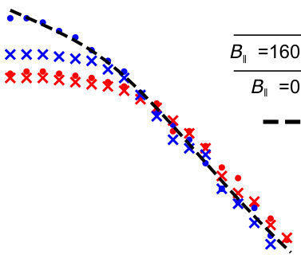
<figcaption class="paper-figure-caption"><b>Fig 5.</b> Figure 4: Temperature Dependence. a, Bath-temperature dependence of the switching and retrapping currents, ISW and IR. At zero field, both ISW and IR saturate below 150 mK, whereas at an in-plane field B∥= 160 mT ISW continue to rise down to the base temperature while IR saturates, signaling the emergence of hysteresis. The dashed black line is a fit of ISW at B∥= 160 mT to a disordered short ballistic SNS model with transparency τ = 0.8. b, Switching current ISW as a function of B∥at several bath temperatures. All panels show results from Device A.</figcaption>
</figure>
</div>

<p><strong>Summary.</strong> The paper reports on the creation of novel Josephson junctions using an epitaxial growth technique in gallium-doped germanium. By achieving atomically sharp crystalline weak links, they overcome coherence limitations found in amorphous barriers. The results demonstrate a promising platform for building low-disorder superconducting qubits suitable for integrated quantum circuits.</p>
<p><strong>Why it may be interesting.</strong> This work directly addresses hardware challenges for superconducting qubits by proposing a low-disorder, CMOS-compatible junction architecture, which is central to quantum computing implementation.</p>
<details>
<summary>Detailed structure</summary>
<p><strong>Main problem.</strong> Conventional superconducting quantum electronics are limited by amorphous Josephson junction weak links hosting two-level systems, which degrades qubit coherence.</p>
<p><strong>Main result.</strong> The authors demonstrated a fully epitaxial Josephson junction platform using Ga:Ge that maintains structural coherence and shows an unconventional enhancement of the switching current under magnetic field.</p>
<p><strong>Method.</strong> Electrical transport measurements (I-V curves, dV/dI) were performed on junctions fabricated via MBE to study superconducting coupling in the ultra-short regime.</p>
<p><strong>Model / system.</strong> The system is a Josephson junction formed by crystalline weak links ($  ext{Ga:Ge}/ ext{Si}/    ext{Ga:Ge}$) grown epitaxially. This platform aims to replace amorphous barriers with atomically sharp, crystalline interfaces for superconducting qubits.</p>
<p><strong>Key observables.</strong> Supercurrent ($I_{SW}$), differential resistance ($dV/dI$), and the ratio of switching current to retrapping current ($   ext{ISW}/   ext{IR}$) as a function of applied magnetic field ($B$).</p>
<p><strong>Important parameters / regimes.</strong> The junction operates in the ultra-short regime; key fields include $B^*_{\parallel} = 80 	ext{ mT}$ for $  ext{ISW}$ enhancement.</p>
<p><strong>Assumptions / limitations.</strong> The observed magnetic field enhancement of $ ext{ISW}$ is attributed to quasiparticle-assisted thermalization processes from the Al contacts, suggesting an SNS junction character rather than SIS.</p>
<p><strong>Figures summary.</strong> Figure 1 shows device structure via STEM. Figure 2 compares measured critical current scaling against theory. Figure 3 details the magnetic field dependence of $dV/dI$, showing $    ext{ISW}$ enhancement and hysteresis. Figure 4 examines temperature dependence.</p>
<p><strong>Paper structure.</strong> The paper progresses from identifying limitations in existing junctions to presenting the epitaxial Ga:Ge platform, characterizing its structure using STEM, measuring transport properties vs. magnetic field (showing $  ext{ISW}$ enhancement), and finally attributing this behavior to quasiparticle thermalization mechanisms.</p>
</details>
<details>
<summary>Abstract</summary>
<p>Conventional superconducting quantum electronics rely on well-established Josephson junctions made of Al/AlO$_{x}$ where the weak link AlO$_{x}$ is amorphous and is believed to host two-level systems that limit coherence. Crystalline Josephson junctions exhibit atomically ordered interface quality but remain constrained by complex fabrication and intrinsic asymmetry of epitaxial growth. Here, we demonstrate a fully epitaxial approach based on superconductivity in gallium-doped germanium, enabling the realization of Josephson junctions entirely grown in situ by molecular beam epitaxy. These devices feature atomically sharp interfaces and crystalline weak links, resulting in strong Josephson coupling in the ultra-short regime. We observe an unconventional enhancement of the switching current under applied magnetic field, which we attribute to quasiparticle-assisted thermalization processes from the Al contacts. This platform combines structural coherence, fabrication simplicity, and scalability, offering a promising route toward low-disorder, CMOS-compatible superconducting qubits in a merged element transmon architecture.</p>
</details>
<p><sub><a href="#top">↑ back to top</a></sub></p>

<p><a id="paper-2608.08537"></a></p>
<h3 id="dynamical-behavior-of-diffusively-coupled-scalar-differential-equations-as-wentzell-boundary-conditions"><a href="http://arxiv.org/abs/2608.08537v1">Dynamical behavior of diffusively coupled scalar differential equations as Wentzell boundary conditions</a></h3>
<p><strong>Authors:</strong> Merlin Pelz<br>
<strong>Type:</strong> theory · <strong>Category:</strong> other · <strong>PDF:</strong> <a href="https://arxiv.org/pdf/2608.08537v1">https://arxiv.org/pdf/2608.08537v1</a><br>
<strong>Analysis basis:</strong> full PDF text, analyzed in chunks
<strong>Topic relevance:</strong> <code>driven-dissipative phase transition</code> <strong>3/5</strong> · <code>methods for driven-dissipative</code> <strong>3/5</strong> · <code>Keldysh / 2PI / non-Gaussian methods</code> <strong>2/5</strong> · <code>analog quantum simulation</code> <strong>2/5</strong> · <code>correlated / nonlocal dissipation</code> <strong>2/5</strong> · <code>non-equilibrium universality</code> <strong>2/5</strong> · <code>Frenkel-Kontorova</code> <strong>1/5</strong> · <code>quantum measurements</code> <strong>1/5</strong></p>
<div class="figure-strip-hint">↔ Scroll figures horizontally</div>
<div class="paper-figures-scroll">
<figure class="paper-figure-card">
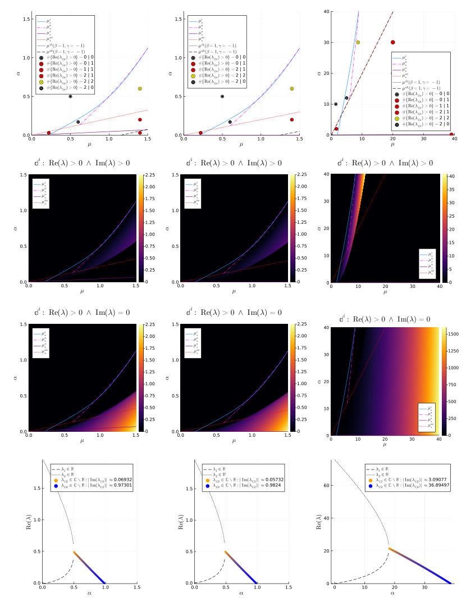
<figcaption class="paper-figure-caption"><b>Fig 1.</b> Figure 1: Steady-state and Hopf bifurcation lines branching off u∗≡0, numbers Zi|a = #{λ | Re (λi|a) &gt; 0} of the linearizations and Evans functions, di|a, respectively, and the maximal Re (λ) &gt; 0. Parameter values: large domain size L = 10 and moderate degradation σ = 0.1 for the left column, large domain size L = 10 and small degradation σ = 0.01 for the center column, moderate domain size L = 1 and moderate degradation σ = 0.1 for the right column. First row: in-phase Hopf bifurcation line µi ∗and anti-phase Hopf bifurcation line µa ∗of Theorem 3.1, symmetric steady-state bifurcation line µs ∗and antisymmetric steady-state bifurcation line µas ∗ of Remark 3.3 along with their stabilities,...</figcaption>
</figure>
<figure class="paper-figure-card">
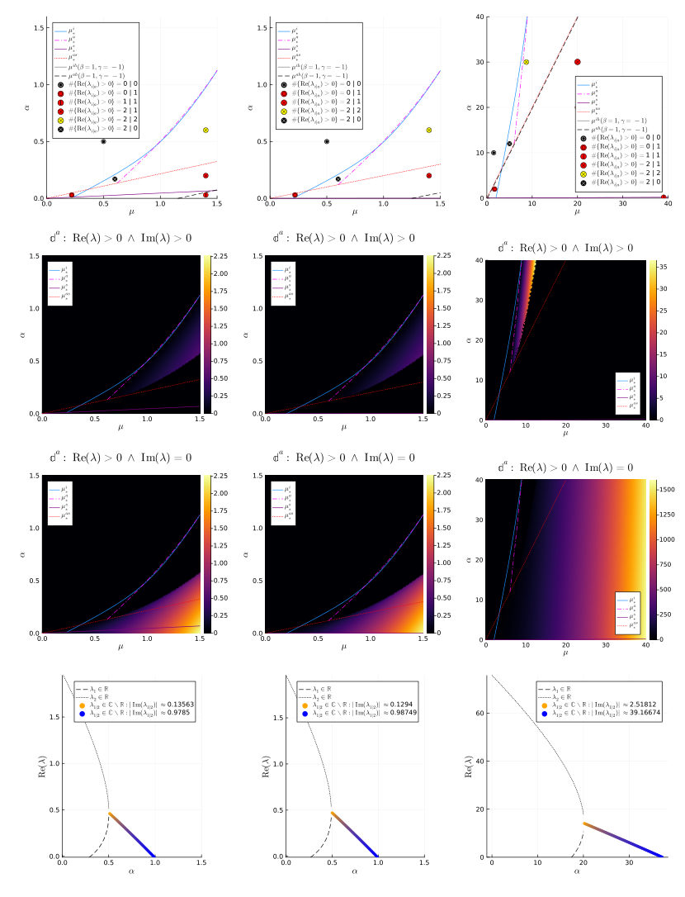
<figcaption class="paper-figure-caption"><b>Fig 2.</b> Figure 2: First row: Same as for Figure 1 for illustrative convenience. Second row: Maximal Re (λ) &gt; 0 for anti- phase growth rate λ with da(λ) = 0 and Im (λ) &gt; 0. Third row: Maximal Re (λ) &gt; 0 for antisymmetric steady-state growth rate λ with da(λ) = 0 and Im (λ) = 0. Fourth row: varying α ∈(0, 1.5] (α ∈(0, 38] for right column) while fixing µ = 1.4 (µ = 8.7 for right column) in a vertical slice of the first row’s bifurcation line plot, one can observe the anti-phase Hopf birth point where the two antisymmetric steady-state growth rates λa ∈R merge to create two complex-conjugate anti-phase Hopf growth rates λa ∈R. The magnitude of | Im (λ)| can also be read off approximately through the...</figcaption>
</figure>
<figure class="paper-figure-card">
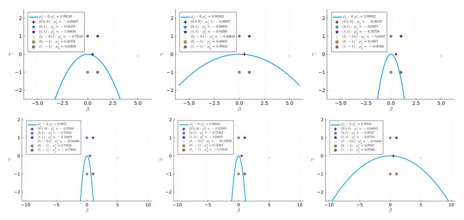
<figcaption class="paper-figure-caption"><b>Fig 3.</b> Figure 3: Critical curve γcrit where the sub-critical branches turn supercritical of Theorem 4.2, all with α = 1. Below the quadratic curve, the branches are stable at bifurcation onset (supercritical), whereas they are unstable at bifurcation onset above the curve (subcritical). Left column: large domain and moderate degradation rate with (L, σ) = (10, 0.1), center column: large domain and small degradation rate with(L, σ) = (10, 0.01), right column: moderate domain size and moderate degradation rate with (L, σ) = (1, 0.1). First row: for in-phase Hopf bifurcation, second row: for symmetric steady-state bifurcation, third row: for anti-phase Hopf bifurcation, fourth row: for asymmetric...</figcaption>
</figure>
<figure class="paper-figure-card">
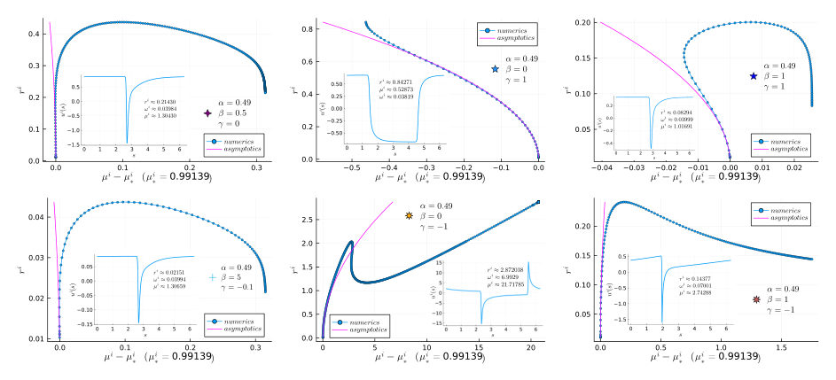
<figcaption class="paper-figure-caption"><b>Fig 4.</b> Figure 4: From left to right and top to bottom, in-phase Hopf bifurcation branches at the points in the (β, γ)-parameter plane of the first row’s left plot in Figure 3 in the same order and with α = 0.49. Inserted are the nonlinear oscillation shapes that started with a cos(s) at µi −µi ∗= 0 along with the corresponding amplitude ri, nonlinear oscillation frequency ωi, and bifurcation parameter µi. Note the homoclinic and double heteroclinic limits for all cases except for (α, β, γ) = (0.49, 0, −1), as ωi seems to decrease to 0.</figcaption>
</figure>
<figure class="paper-figure-card">
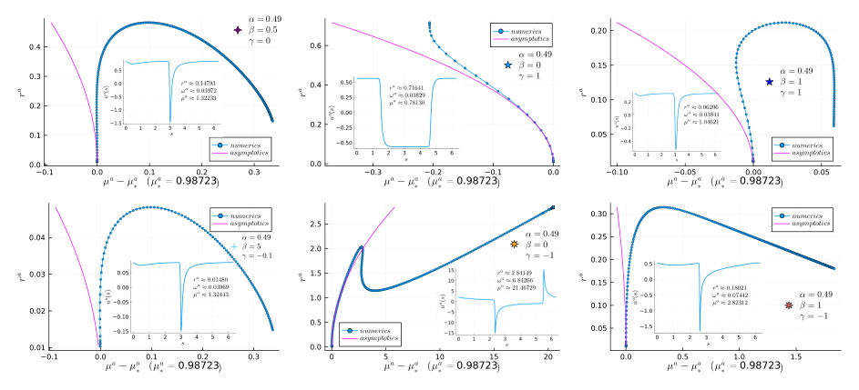
<figcaption class="paper-figure-caption"><b>Fig 5.</b> Figure 5: From left to right and top to bottom, anti-phase Hopf bifurcation branches at the points in the (β, γ)- parameter plane of the first row’s left plot in Figure 3 in the same order and with α = 0.49. Note that the special point (β, γ) = (1, −1) is selected, where interesting temporal defects appear in the full numerical solution shown in Figure 8 below. Inserted are the nonlinear oscillation shapes that started with a cos(s) at µa −µa ∗= 0 along with the corresponding amplitude ra, nonlinear oscillation frequency ωa, and bifurcation parameter µa. Note the homoclinic and double heteroclinic limits for all cases except for (α, β, γ) = (0.49, 0, −1), as ωa seems to decrease to 0.</figcaption>
</figure>
</div>

<p><strong>Summary.</strong> This paper mathematically analyzes a system of diffusively coupled scalar differential equations with dynamic Wentzell boundary conditions. It rigorously proves the existence of distinct in-phase (symmetric) and anti-phase (asymmetric) Hopf bifurcations from a stable steady state. The findings are significant for modeling complex biological processes involving diffusion and non-linear feedback at boundaries.</p>
<p><strong>Why it may be interesting.</strong> While not quantum physics, the mathematical techniques used—analyzing pattern formation, stability boundaries, and coupled non-linear dynamics—are foundational to understanding open quantum systems where environmental coupling or boundary effects induce complex time evolution.</p>
<details>
<summary>Detailed structure</summary>
<p><strong>Main problem.</strong> The study investigates the dynamical behavior of two identical scalar differential equations coupled via a diffusion equation, focusing on bifurcations from steady-states to oscillatory states.</p>
<p><strong>Main result.</strong> The analysis confirms the existence of unique branches for both in-phase and anti-phase time-periodic solutions that bifurcate from the symmetric base state at distinct critical parameter values.</p>
<p><strong>Method.</strong> The work employs linearization around equilibrium points, eigenvalue analysis to determine stability (Hopf bifurcation conditions), and numerical continuation methods to trace the nonlinear solution branches.</p>
<p><strong>Model / system.</strong> The system consists of two coupled scalar dynamical equations linked by a diffusion equation ($\partial_t u = \partial_{xx}u - \sigma^2 u$) subject to Wentzell boundary conditions. This setup is motivated by modeling biological membranes interacting with bulk diffusion.</p>
<p><strong>Key observables.</strong> Bifurcation points ($\mu_i^*, \mu_a^*$), oscillation frequencies ($\omega_i^*, \omega_a^*$), and the existence/stability of in-phase (symmetric) and anti-phase (asymmetric) oscillations.</p>
<p><strong>Important parameters / regimes.</strong> Coupling strength parameters ($\mu$) and diffusion coefficients ($\sigma$). The domain length $L$ is also a critical parameter affecting coupling decay.</p>
<p><strong>Assumptions / limitations.</strong> The analysis relies on the existence of symmetric equilibrium solutions, the presence of simple imaginary eigenvalues at bifurcation points, and non-zero derivatives of eigenvalues with respect to parameters crossing the critical point.</p>
<p><strong>Figures summary.</strong> Figures likely illustrate bifurcation diagrams showing the emergence of Hopf branches (in-phase and anti-phase) from a steady state, potentially including parameter bubbles or spatiotemporal visualizations of the resulting oscillations.</p>
<p><strong>Paper structure.</strong> The paper proceeds by establishing the mathematical framework using linearized stability analysis to find critical points. It then uses advanced theorems (like those related to Hopf bifurcations) to prove the existence and uniqueness of nonlinear oscillatory solutions for both symmetric and asymmetric modes, concluding with asymptotic analyses for large domains.</p>
</details>
<details>
<summary>Abstract</summary>
<p>Two identical scalar dynamical systems coupled through a scalar diffusion equation are studied herein, with respect to bifurcations from a symmetric steady-state to symmetric and asymmetric steady-states and to in-phase and anti-phase oscillations. Numerical continuations based on the developed theory show the shape of the bifurcation branches and the attracting nonlinear states far from bifurcation onset and confirm their, for the most part, derived stability. This study extends the work on the dynamical properties of a single scalar dynamical system coupled to its own delay through an adjacent diffusion field and quantifies further the delay of diffusive information transmission between two such Wentzell boundaries. The mathematical system is motivated by modeling biological membranes with yet unknown effective local fluxes that are coupled to bulk diffusion.</p>
</details>
<p><sub><a href="#top">↑ back to top</a></sub></p>

<p><a id="paper-2608.08504"></a></p>
<h3 id="spin-orbital-hall-nano-oscillators-using-ptcrnife"><a href="http://arxiv.org/abs/2608.08504v1">Spin-Orbital Hall Nano-Oscillators using PtCr/NiFe</a></h3>
<p><strong>Authors:</strong> Utkarsh Shashank, Akash Kumar, Daegeun Jo, Thi Ngoc Anh Nguyen, Jong-Guk Choi, Sambit Ghosh, Michal Strach, Lunjie Zeng, Andrew B. Yankovich, Roman Khymyn, Ahmad A. Awad, Eva Olsson, Peter M. Oppeneer, Johan Åkerman<br>
<strong>Type:</strong> both · <strong>Category:</strong> other · <strong>PDF:</strong> <a href="https://arxiv.org/pdf/2608.08504v1">https://arxiv.org/pdf/2608.08504v1</a><br>
<strong>Analysis basis:</strong> full PDF text, analyzed in chunks
<strong>Topic relevance:</strong> <code>driven-dissipative phase transition</code> <strong>3/5</strong> · <code>methods for driven-dissipative</code> <strong>3/5</strong> · <code>Keldysh / 2PI / non-Gaussian methods</code> <strong>2/5</strong> · <code>non-equilibrium universality</code> <strong>2/5</strong> · <code>quantum measurements</code> <strong>2/5</strong> · <code>correlated / nonlocal dissipation</code> <strong>1/5</strong> · <code>scars &amp; prethermalization</code> <strong>1/5</strong></p>
<div class="figure-strip-hint">↔ Scroll figures horizontally</div>
<div class="paper-figures-scroll">
<figure class="paper-figure-card">
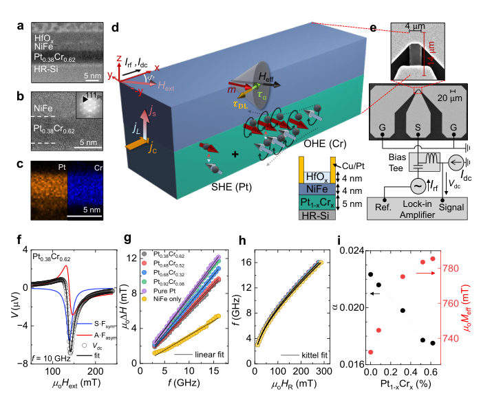
<figcaption class="paper-figure-caption"><b>Fig 1.</b> Fig. 1 Structure and magnetic properties of PtCr/NiFe heterostructures. a, Cross-sectional TEM image of the Pt0.38Cr0.62/NiFe heterostructure. b, High-resolution TEM image of the Pt0.38Cr0.62/NiFe interface. Inset: corresponding FFT pattern with the fcc PtCr [111] diffraction spot marked, indicating an out-of-plane orientation close to the [111] direction. c, STEM–EDXS elemental maps of Pt and Cr within the Pt0.38Cr0.62 layer. (d), Schematic illustration of the proposed spin–orbital angular-momentum transfer mechanism in PtCr/NiFe. A charge current density, jc, generates a transverse spin current, js, in Pt through SHE and a transverse orbital current, jL, in Cr through the OHE. Owing to...</figcaption>
</figure>
<figure class="paper-figure-card">
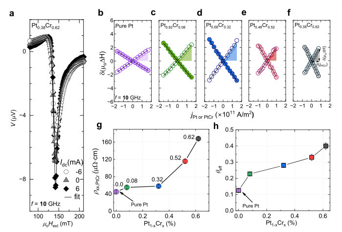
<figcaption class="paper-figure-caption"><b>Fig 2.</b> Fig. 2 Current-induced torque generation in PtCr/NiFe heterostructures. a, Rep- resentative ST-FMR spectra measured under different dc bias currents for Pt0.38Cr0.62/NiFe at f = 10 GHz. The black solid lines represent fits to Eq. (1). b–f, Linewidth modulation, δ(µ0∆H), as a function of current density for Pt/NiFe and Pt1−xCrx/NiFe measured at f = 10 GHz and at ϕ = 70◦. Solid lines are linear fits. Open and filled circles represent positive and negative magnetic-field polarities, respectively. g, Electrical resistivity of Pt1−xCrx as a function of Cr concentration, determined from four-probe measurements on blanket films and two-probe measurements on patterned devices. Error bars represent...</figcaption>
</figure>
<figure class="paper-figure-card">
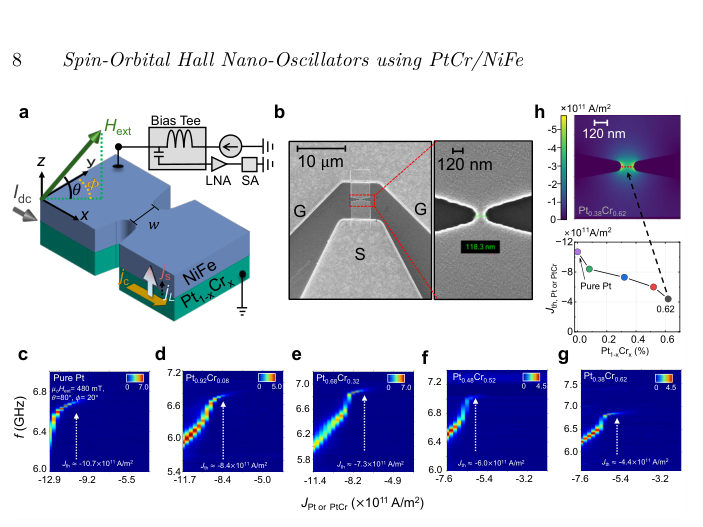
<figcaption class="paper-figure-caption"><b>Fig 3.</b> Fig. 3 Spin-Orbital Hall nano-oscillators based on PtCr/NiFe heterostructures. a, Schematic of the nanoconstriction-based nano-oscillator measurement geometry. b, Scanning electron micrographs of the nanoconstriction device. Insets show the enlarged constriction region with a nominal width of 120 nm. c–g, Power spectral density (PSD) as a function of current density measured under an applied magnetic field of µ0Hext = 480 mT (θ = 80◦, ϕ = 20◦) for Pt/NiFe, Pt0.92Cr0.08/NiFe, Pt0.68Cr0.32/NiFe, Pt0.48Cr0.52/NiFe, and Pt0.38Cr0.62/NiFe, respectively. White arrows indicate the threshold current density for the onset of coherent auto-oscillations, while the color bars indicate the peak power...</figcaption>
</figure>
<figure class="paper-figure-card">
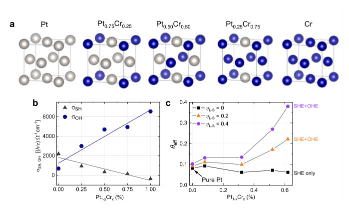
<figcaption class="paper-figure-caption"><b>Fig 4.</b> Fig. 4 First-principles evidence for a mixed spin–orbital torque mechanism in PtCr. a, Fully relaxed Pt1−xCrx supercell structures used for first-principles calculations. b, Calculated intrinsic spin Hall conductivity, σSH, and intrinsic orbital Hall conductivity, σOH, as a function of Cr concentration. Solid lines are linear fits used to interpolate the conductivities at the experimental compositions. c, Estimated effective torque efficiency calculated using Eq. (4), where ρPtCr(x) is the experimentally measured PtCr resistivity and ηL−S is an effective orbital-to-spin conversion parameter. The SHE-only limit corresponds to ηL−S = 0, while finite ηL−S incorporates orbital-to-spin...</figcaption>
</figure>
</div>

<p><strong>Summary.</strong> This work demonstrates how engineering PtCr alloys into heterostructures with ferromagnets enables giant spin-orbit torques by exploiting orbital Hall effects alongside conventional spin Hall effects. By achieving a higher torque efficiency, the authors significantly lower the current required to sustain coherent auto-oscillations, proposing a scalable platform for next-generation orbitronic devices.</p>
<p><strong>Why it may be interesting.</strong> While focused on condensed matter magnetism, the study of current-induced torques and nonlinear dynamics in nanoscale devices touches upon non-equilibrium quantum transport phenomena that are relevant for understanding dissipation mechanisms in open quantum systems.</p>
<details>
<summary>Detailed structure</summary>
<p><strong>Main problem.</strong> The research aims to develop efficient methods for generating current-induced torques beyond conventional Spin Hall Effect physics by utilizing the Orbital Hall Effect (OHE) to create spin-orbital torque nano-oscillators (SOHNOs).</p>
<p><strong>Main result.</strong> Cr alloying in PtCr/NiFe heterostructures enhances the effective torque efficiency and reduces the threshold current density for auto-oscillations, establishing a scalable platform for low-power spintronic devices.</p>
<p><strong>Method.</strong> The study combines experimental measurements (ST-FMR and auto-oscillation) with first-principles calculations to model the spin-orbital angular momentum transfer mechanism.</p>
<p><strong>Model / system.</strong> The physical system is the PtCr/NiFe heterostructure, where charge current generates both conventional spin currents (via SHE in Pt) and orbital currents (via OHE in Cr). Strong Spin-Orbit Coupling mediates the conversion of these orbital currents into effective damping-like torques on the ferromagnet.</p>
<p><strong>Key observables.</strong> Effective torque efficiency ($ heta_{eff}$), auto-oscillation threshold current density ($J_{th}$), and magnetic linewidth modulation ($\delta(\mu_0\Delta H)$).</p>
<p><strong>Important parameters / regimes.</strong> Cr concentration ($x$), which controls the enhancement of $    heta_{eff}$ (from 0.14 to ~0.40) and the reduction in $J_{th}$.</p>
<p><strong>Assumptions / limitations.</strong> The enhanced torque is attributed to an intrinsic orbital-mediated contribution, which is confirmed by theoretical calculations that include OHE pathways.</p>
<p><strong>Figures summary.</strong> Figures illustrate TEM/STEM-EDXS confirming homogeneous alloying; schematics detail the spin-orbital angular momentum transfer mechanism; and spectra show linewidth modulation vs. bias current and auto-oscillation onset vs. current density.</p>
<p><strong>Paper structure.</strong> The paper progresses from identifying the need for OHE over SHE, detailing the PtCr/NiFe platform, presenting experimental measurements (ST-FMR/auto-oscillations) showing performance enhancement with Cr doping, and finally providing first-principles calculations to theoretically confirm the orbital-mediated torque enhancement.</p>
</details>
<details>
<summary>Abstract</summary>
<p>The orbital Hall effect provides a promising route for generating angular-momentum currents beyond conventional spin Hall physics. PtCr alloys exhibit unusually large current-induced torques, but the contribution of orbital transport and the ability of these torques to sustain coherent nonlinear magnetization dynamics remain unresolved. Here we demonstrate spin-orbital Hall nano-oscillators by exploiting a homogeneous heavy-metal/light-metal alloy in which orbital Hall currents generated by Cr are converted by Pt into spin currents, producing giant spin-orbit torques. Using PtCr/NiFe heterostructures, the effective torque efficiency increases from ~0.14 in Pt/NiFe to ~0.40 in Pt0.38Cr0.62/NiFe despite substantial Pt dilution, enabling coherent auto-oscillations with the threshold current density reduced from ~ 1.07 x 10^12 to ~ 4.4 x 10^11 A m^-2. First-principles calculations show that Cr alloying suppresses the intrinsic spin Hall conductivity while enhancing the orbital Hall conductivity, and reproduce the observed torque enhancement only when orbital transport is included. Our combined experimental and first-principles results show that alloy engineering enables giant spin-orbit torques through an intrinsic orbital-mediated contribution, enabling coherent auto-oscillations without engineered multilayers and establishing a scalable materials platform for low-power nonlinear spintronic and orbitronic devices.</p>
</details>
<p><sub><a href="#top">↑ back to top</a></sub></p>

<p><a id="paper-2608.09614"></a></p>
<h3 id="symmetry-breaking-by-interfacial-dead-layers-observation-of-forbidden-self-induced-spin-orbit-torque-in-symmetric-ferromagnets"><a href="http://arxiv.org/abs/2608.09614v1">Symmetry Breaking by Interfacial Dead Layers: Observation of Forbidden Self-Induced Spin-Orbit Torque in Symmetric Ferromagnets</a></h3>
<p><strong>Authors:</strong> Athira Ravindran K, Raghvendra Posti, Manish Kumar Mohanta, Abhishek Kumar, Damanpreet Kaur, Alberto Anadón, Sebastien Petit-Watelot, Juan-Carlos Rojas-Sánchez, Michel Hehn, Puru Jena, Debangsu Roy<br>
<strong>Type:</strong> both · <strong>Category:</strong> other · <strong>PDF:</strong> <a href="https://arxiv.org/pdf/2608.09614v1">https://arxiv.org/pdf/2608.09614v1</a><br>
<strong>Analysis basis:</strong> full PDF text, analyzed in chunks
<strong>Topic relevance:</strong> <code>Keldysh / 2PI / non-Gaussian methods</code> <strong>3/5</strong> · <code>driven-dissipative phase transition</code> <strong>2/5</strong> · <code>methods for driven-dissipative</code> <strong>2/5</strong> · <code>non-equilibrium universality</code> <strong>2/5</strong> · <code>analog quantum simulation</code> <strong>1/5</strong> · <code>correlated / nonlocal dissipation</code> <strong>1/5</strong> · <code>quantum measurements</code> <strong>1/5</strong> · <code>scars &amp; prethermalization</code> <strong>1/5</strong></p>
<div class="figure-strip-hint">↔ Scroll figures horizontally</div>
<div class="paper-figures-scroll">
<figure class="paper-figure-card">
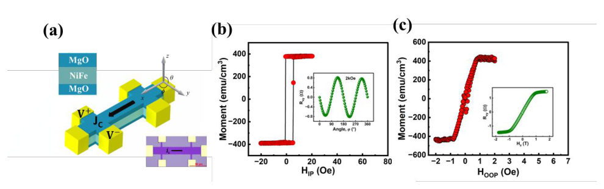
<figcaption class="paper-figure-caption"><b>Fig 1.</b> FIG. 1. (a) Schematic of the six-terminal Hall bar geometry used for the experiments with MgO/NiFe/MgO</figcaption>
</figure>
<figure class="paper-figure-card">
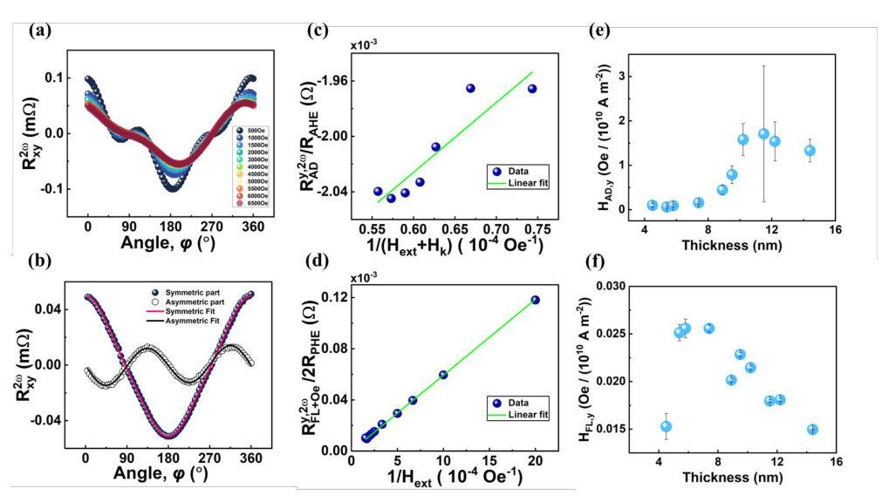
<figcaption class="paper-figure-caption"><b>Fig 2.</b> FIG. 2. (a) Angular dependence of the second harmonic Hall voltage 𝑅𝑥𝑦 2𝜔 as a function of φ for t =14.4nm</figcaption>
</figure>
<figure class="paper-figure-card">
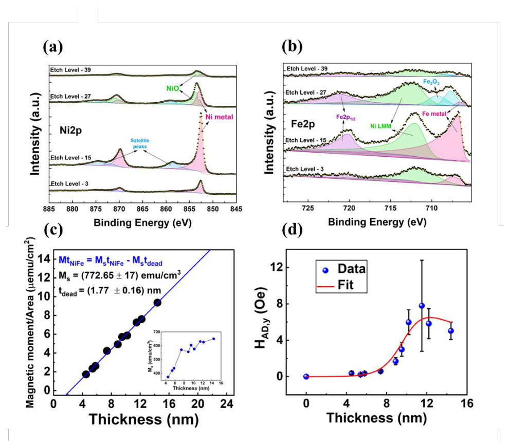
<figcaption class="paper-figure-caption"><b>Fig 3.</b> FIG. 3. XPS core level spectra analysis of (a) Ni2p and (b) Fe2p using depth profiling. The presence of oxides</figcaption>
</figure>
<figure class="paper-figure-card">
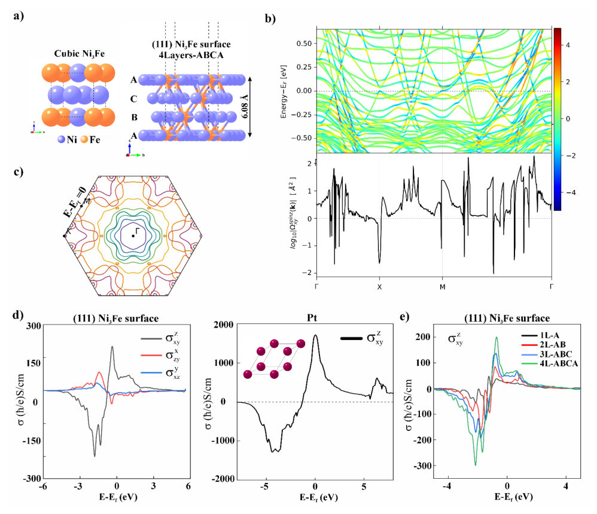
<figcaption class="paper-figure-caption"><b>Fig 4.</b> FIG. 4. DFT Analysis (a) Geometrical view of fcc Ni3Fe and optimized (111) surface of Ni3Fe, (b) spin Hall</figcaption>
</figure>
<figure class="paper-figure-card">
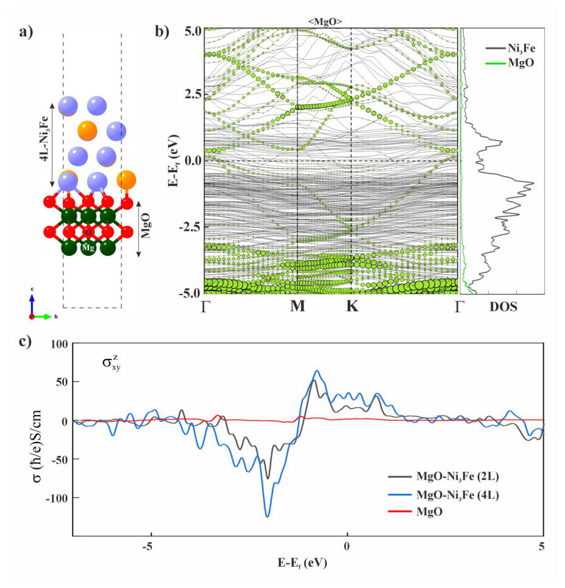
<figcaption class="paper-figure-caption"><b>Fig 5.</b> FIG. 5. (a) Optimized atomic structure of MgO-Ni3Fe (4L) heterointerface, (b) Electronic band structure</figcaption>
</figure>
</div>

<p><strong>Summary.</strong> This work reports observing robust Spin-Orbit Torques (SOTs) in a nominally symmetric ferromagnet ($   ext{MgO}/   ext{NiFe}/  ext{MgO}$), where they should theoretically vanish. The authors pinpoint the cause as a naturally formed magnetic dead layer at the bottom interface, demonstrating that this 'parasitic' feature can be quantified and utilized as an intrinsic source of symmetry breaking for spintronic applications.</p>
<p><strong>Why it may be interesting.</strong> While focused on condensed matter magnetism, the concept of emergent symmetry breaking via interface disorder or reconstruction—and quantifying this effect using advanced transport measurements—is analogous to studying boundary conditions in quantum many-body systems.</p>
<details>
<summary>Detailed structure</summary>
<p><strong>Main problem.</strong> The study addresses how robust Spin-Orbit Torques (SOTs) can be generated in nominally symmetric ferromagnets, circumventing the conventional requirement for structural asymmetry or heavy metals.</p>
<p><strong>Main result.</strong> The authors demonstrate that a naturally occurring magnetic dead layer at an interface acts as the source of symmetry breaking, enabling measurable SOTs in standard all-ferromagnetic heterostructures.</p>
<p><strong>Method.</strong> The research combines harmonic Hall measurements to quantify torques, SQUID magnetometry for magnetization characterization, and X-ray photoelectron spectroscopy (XPS) depth profiling to identify the structural asymmetry.</p>
<p><strong>Model / system.</strong> The physical system is an MgO/NiFe/MgO trilayer structure. The theoretical framework involves fitting transport data using a drift-diffusion model adapted from Kim and Lee theory to quantify spin current absorption at interfaces.</p>
<p><strong>Key observables.</strong> Second-harmonic Hall resistance ($R_{xy}^{2\omega}$), extracted damping-like and field-like torque effective fields ($   ext{H}<em ext_FL="ext{FL">{    ext{AD},y}$, $  ext{H}</em>$), and the thickness dependence of these torques.},y</p>
<p><strong>Important parameters / regimes.</strong> The key parameters include the thickness ($t$) of the NiFe layer, the derived dead-layer thickness ($\sim 1.2 	ext{ nm}$ vs $1.8 	ext{ nm}$ measured), and the intrinsic spin Hall conductivity ($\sigma_{xy}^z$).</p>
<p><strong>Assumptions / limitations.</strong> The analysis assumes that by measuring angular dependence of $R_{xy}^{2\omega}$, contributions from AHE and PHE can be successfully isolated, allowing focus on spin-current related torques.</p>
<p><strong>Figures summary.</strong> Figures illustrate the geometry and magnetization curves; subsequent figures show the angular dependence of Hall resistance components separated into symmetric/antisymmetric parts, field dependence of fit coefficients, and thickness evolution of SOT effective fields.</p>
<p><strong>Paper structure.</strong> The paper establishes the problem by noting the theoretical prohibition of SOTs in symmetric structures. It then presents experimental measurements using harmonic Hall techniques to observe torques. The source is identified through XPS/SQUID analysis pointing to an interfacial dead layer, which is finally quantified by fitting transport data against theory.</p>
</details>
<details>
<summary>Abstract</summary>
<p>Conventionally, spin-orbit torques (SOTs) in ferromagnets require heavy-metal layers or engineered structural asymmetry to break inversion symmetry. In this work, we report the observation of robust, self-generated SOTs in a nominally symmetric, heavy-metal-free MgO/NiFe/MgO trilayer - a geometry where such torques are theoretically forbidden. By combining harmonic Hall measurements with SQUID magnetometry and X-ray photoelectron spectroscopy, we identify the symmetry-breaking origin: a 1.8 nm magnetic dead layer at the bottom interface. Crucially, we demonstrate a quantitative agreement between our data and the drift-diffusion theory predicted by Kim and Lee, yielding a theoretically extracted dead-layer thickness (1.2 nm) which matches structural characterization. Furthermore, density-functional calculations confirm that NiFe possesses sufficient intrinsic spin Hall conductivity to support the observed spin currents. These results reframe the parasitic dead layer as a functional spintronic component, establishing a universal, all-ferromagnetic route to SOTs in standard magnetic heterostructures.</p>
</details>
<p><sub><a href="#top">↑ back to top</a></sub></p>

<p><a id="paper-2608.09431"></a></p>
<h3 id="time-resolved-study-of-carbonization-and-growth-of-ultrathin-3c-sic-on-si111-under-ultra-high-vacuum"><a href="http://arxiv.org/abs/2608.09431v1">Time-resolved study of carbonization and growth of ultrathin 3C-SiC on Si(111) under ultra-high vacuum</a></h3>
<p><strong>Authors:</strong> Pranjali Jadhao, Mojdeh Fallahpour, Josef Polčák, Eva Kolíbalová, Michal Horák, Jan Michalička, Petr Bábor, Stanislav Voborný, Tomáš Šikola<br>
<strong>Type:</strong> experiment · <strong>Category:</strong> other · <strong>PDF:</strong> <a href="https://arxiv.org/pdf/2608.09431v1">https://arxiv.org/pdf/2608.09431v1</a><br>
<strong>Analysis basis:</strong> full PDF text, analyzed in chunks
<strong>Topic relevance:</strong> <code>quantum measurements</code> <strong>3/5</strong> · <code>driven-dissipative phase transition</code> <strong>2/5</strong> · <code>non-equilibrium universality</code> <strong>2/5</strong> · <code>analog quantum simulation</code> <strong>1/5</strong> · <code>correlated / nonlocal dissipation</code> <strong>1/5</strong> · <code>methods for driven-dissipative</code> <strong>1/5</strong> · <code>scars &amp; prethermalization</code> <strong>1/5</strong></p>
<div class="figure-strip-hint">↔ Scroll figures horizontally</div>
<div class="paper-figures-scroll">
<figure class="paper-figure-card">
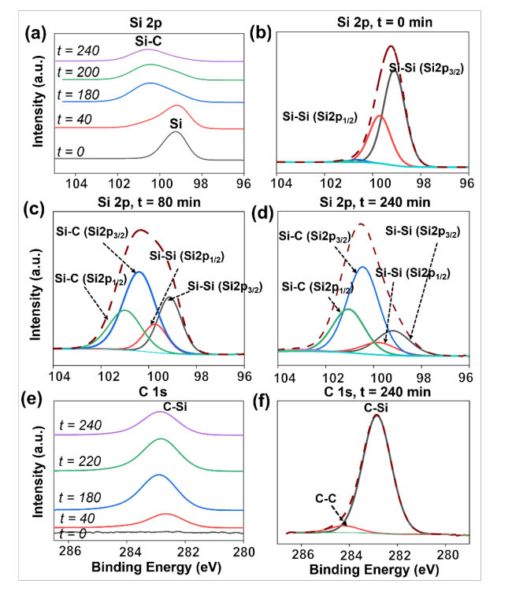
<figcaption class="paper-figure-caption"><b>Fig 1.</b> Fig. 1. Si 2p and C 1s XPS spectra during SiC growth on Si(111) at 800 °C. (a) Si 2p waterfall spectra for selected C2H4 exposure times (in min), (b–d) Fitted Si 2p spectra at t = 0, 80, and 240 min. (e) C 1s waterfall at selected exposure time (in min), (f) Fitted C 1s spectrum for t = 240 min (carbidic C–Si at 282.85 eV, minor C–C at 284.3 eV).</figcaption>
</figure>
<figure class="paper-figure-card">
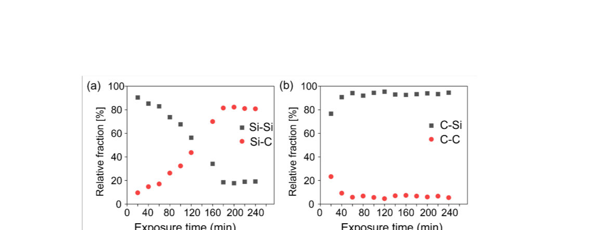
<figcaption class="paper-figure-caption"><b>Fig 2.</b> Fig. 2. (a) Relative fractions of the elemental Si and SiC phases in the modified layer as a function of exposure time, calculated from the areas of the Si–Si and Si–C components of the fitted Si 2p doublet (both spin–orbit components summed). (b) Relative fractions of the SiC and hydrocarbon-derived phases, calculated from the areas of the C–Si and C–C components of the fitted C 1s peak.</figcaption>
</figure>
<figure class="paper-figure-card">
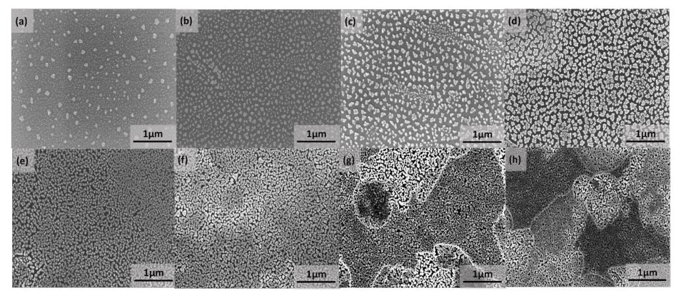
<figcaption class="paper-figure-caption"><b>Fig 3.</b> Fig. 3. SEM images of of SiC nanostructures on Si (111) at (a) 2, (b) 5, (c) 10, (d) 30, (e) 50, (f) 80, (g) 150, and (h) 240 min of C₂H₄ exposure.</figcaption>
</figure>
<figure class="paper-figure-card">
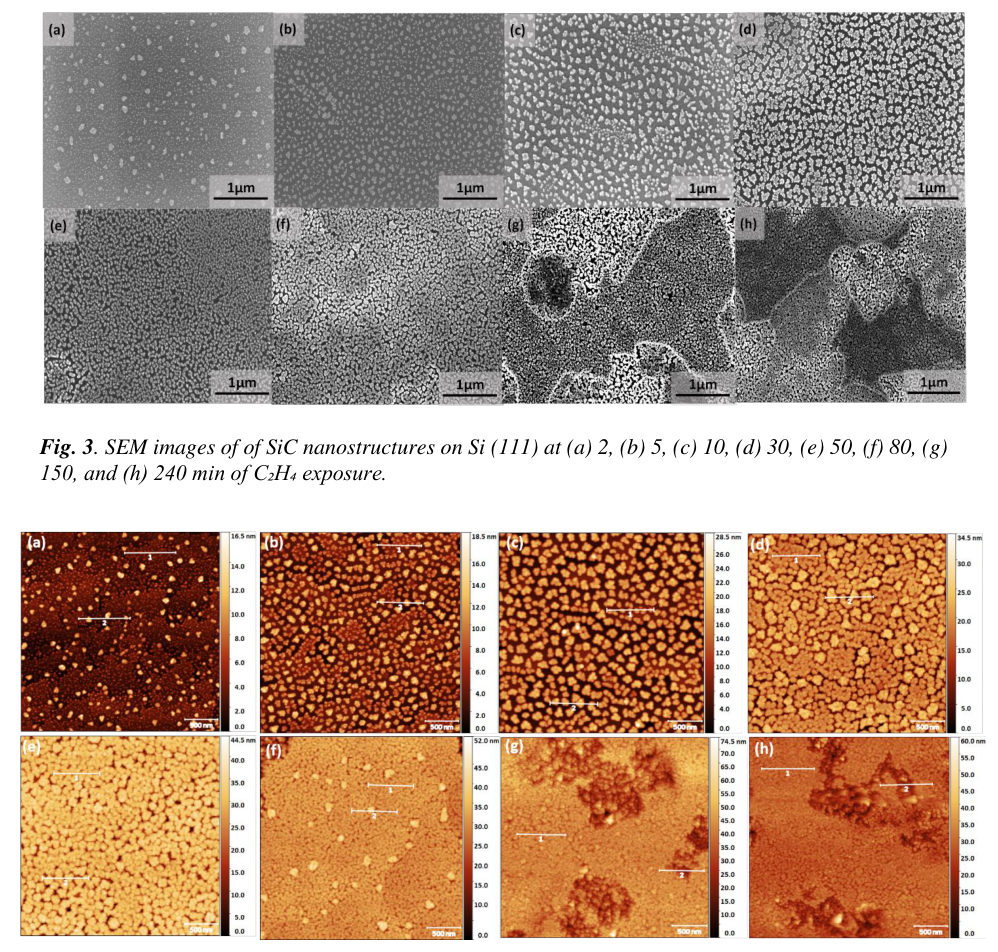
<figcaption class="paper-figure-caption"><b>Fig 4.</b> Fig. 4. AFM images (3 × 3 μm scan area) of the same samples as in Fig. 3, after (a) 2, (b) 5, (c) 10, (d) 30, (e) 50, (f) 80, (g) 150, and (h) 240 min.</figcaption>
</figure>
<figure class="paper-figure-card">
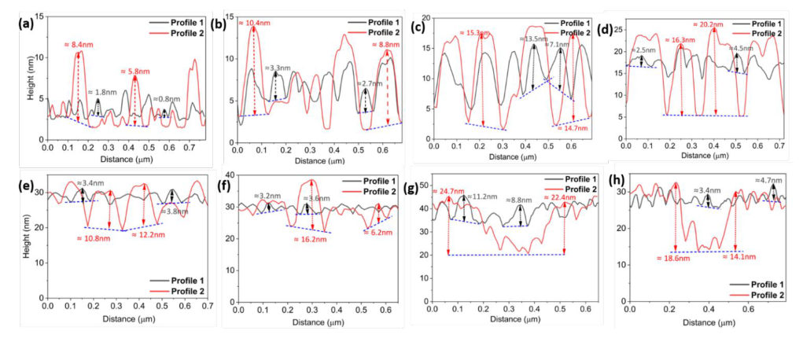
<figcaption class="paper-figure-caption"><b>Fig 5.</b> Fig. 5. Height profiles extracted along the lines marked in the AFM images in Fig. 4, after (a) 2, (b) 5, (c) 10, (d) 30, (e) 50, (f) 80, (g) 150, and (h) 240 min. Profile 2 (black curves) were taken from smoother Profile 1 (red curves) go through bigger islands.</figcaption>
</figure>
</div>

<p><strong>Summary.</strong> This work provides a comprehensive, time-resolved characterization of how ultrathin 3C-SiC nucleates and grows on Si(111) using ethylene gas at high temperatures. By combining multiple advanced surface analysis techniques (XPS, AFM, STEM), the authors map the chemical conversion from elemental silicon to carbide and track the physical transition from isolated islands to a continuous film. This detailed understanding is crucial for engineering high-quality semiconductor interfaces.</p>
<p><strong>Why it may be interesting.</strong> While primarily materials science, the study involves non-equilibrium surface chemistry and phase transitions under controlled vacuum conditions, which touches upon concepts relevant to open quantum systems or reaction dynamics modeling.</p>
<details>
<summary>Detailed structure</summary>
<p><strong>Main problem.</strong> To resolve the time-dependent chemical and morphological evolution of an ultrathin silicon carbide (SiC) layer formed on Si(111) during early-stage carbonization.</p>
<p><strong>Main result.</strong> The growth proceeds via island nucleation followed by coalescence, resulting in a crystalline 3C-SiC film whose formation is tracked chemically (XPS) and structurally (AFM/STEM).</p>
<p><strong>Method.</strong> A combination of <em>in-situ</em> XPS for chemical tracking, <em>ex-situ</em> AFM/SEM for morphology, AES/SIMS for depth profiling, and STEM-EELS for atomic structure confirmation was employed.</p>
<p><strong>Model / system.</strong> The physical system is the heteroepitaxial growth of SiC on a Si(111) substrate using ethylene exposure at 800 °C under UHV conditions.</p>
<p><strong>Key observables.</strong> Si/C chemical ratios (XPS, AES), surface roughness evolution (AFM), film thickness ($\sim 9$ nm via STEM-EELS), and crystal structure confirmation ($3	ext{C-SiC}$ polytype).</p>
<p><strong>Important parameters / regimes.</strong> Growth temperature of $800^\circ	ext{C}$; precursor $ ext{C}_2    ext{H}_4$; time evolution from minutes to hours.</p>
<p><strong>Assumptions / limitations.</strong> The growth mechanism is assumed to be governed by surface chemical reactions and island-mediated coalescence, leading to a specific residual elemental Si fraction.</p>
<p><strong>Figures summary.</strong> Figures show XPS spectra tracking phase conversion over time; SEM/AFM track the transition from isolated islands to continuous films; STEM-EELS confirm the crystalline structure and interface quality.</p>
<p><strong>Paper structure.</strong> The paper follows a progression of characterization techniques: initial chemical monitoring (XPS) establishes the time dependence, followed by morphological mapping (SEM/AFM), detailed elemental profiling (AES/SIMS), and finally atomic structural confirmation (STEM-EELS).</p>
</details>
<details>
<summary>Abstract</summary>
<p>The early-stage formation of silicon carbide (SiC) on Si(111) by ethylene exposure under ultra-high vacuum (UHV) was investigated to resolve the time-dependent chemical and morphological evolution of an ultrathin layer. Clean Si(111) substrates were exposed to C$_2$H$_4$ at 800 °C for 2 min to 4 h, and the surfaces followed by in-situ X-ray photoelectron spectroscopy (XPS) and ex-situ AFM, SEM, AES, SIMS and TEM. Si 2p and C 1s peak analysis shows the progressive conversion of elemental silicon into a carbidic Si-C phase, the SiC fraction overtaking the elemental component between 120 and 160 min and saturating near 80-81% beyond 180 min, leaving about 19-20% residual elemental silicon. Correlative SEM and AFM reveal a parallel morphological progression, from sparse isolated islands to a coalesced, near-continuous layer. AES depth profiling confirms carbon incorporated into the near-surface region rather than weakly adsorbed as contamination, assigning the islands to early SiC nuclei. TEM confirms the zinc-blende lattice and the presence of cubic silicon carbide (3C-SiC). Together, these results provide a time-resolved picture of SiC nucleation, coalescence and layer growth on Si(111), relevant to 3C-SiC heteroepitaxy, and can be utilized in the optimization of SiC/Si(111) templates for growth of III-nitride and other carbide systems on silicon (e.g. Mo$_2$C).</p>
</details>
<p><sub><a href="#top">↑ back to top</a></sub></p>

<p><a id="paper-2608.09300"></a></p>
<h3 id="polarization-engineered-all-2d-grapheneferroelectric-hybrid-for-persistence-free-photoresponse"><a href="http://arxiv.org/abs/2608.09300v1">Polarization engineered all 2D Graphene/Ferroelectric hybrid for persistence-free photoresponse</a></h3>
<p><strong>Authors:</strong> Navkiranjot Kaur Gill, Shaili Sett, Saloni Kakkar, Kenji Watanabe, Takashi Taniguchi, Arindam Ghosh<br>
<strong>Type:</strong> experiment · <strong>Category:</strong> other · <strong>PDF:</strong> <a href="https://arxiv.org/pdf/2608.09300v1">https://arxiv.org/pdf/2608.09300v1</a><br>
<strong>Analysis basis:</strong> full PDF text, analyzed in chunks
<strong>Topic relevance:</strong> <code>quantum measurements</code> <strong>3/5</strong> · <code>driven-dissipative phase transition</code> <strong>2/5</strong> · <code>correlated / nonlocal dissipation</code> <strong>1/5</strong> · <code>methods for driven-dissipative</code> <strong>1/5</strong> · <code>non-equilibrium universality</code> <strong>1/5</strong></p>
<div class="figure-strip-hint">↔ Scroll figures horizontally</div>
<div class="paper-figures-scroll">
<figure class="paper-figure-card">
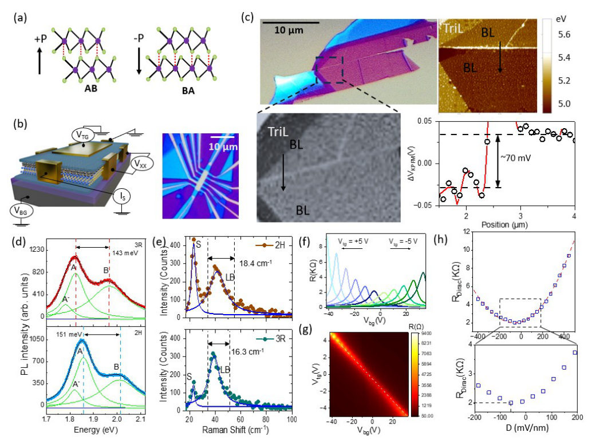
<figcaption class="paper-figure-caption"><b>Fig 1.</b> FIG. 1. Characterization of BLG/3R-MoS2 FET. (a) Two different stacking configuration of 3R polytype, AB and BA, with arrows depicting the direction of spontaneous out-of-plane polarization (P). (b) Schematic illustration of the device architecture, comprising a hexagonal boron nitride (hBN)–encapsulated bilayer graphene (BLG) on a 3R-MoS2, equipped with a gold top gate and a hBN/SiO2 back gate, configured in a hall-bar geometry with one-dimensional edge contacts to the BLG. The right panel shows an optical micrograph of the fabricated device. (c) KPFM measurement microgarphs: optical image of a 3R MoS2 multilayer flake. The false color zoomed region shows trilayer (TriL) and bilayer (BL)...</figcaption>
</figure>
<figure class="paper-figure-card">
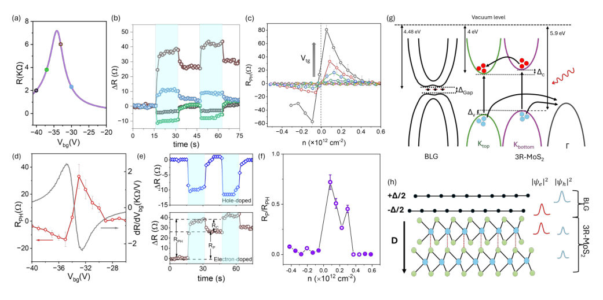
<figcaption class="paper-figure-caption"><b>Fig 2.</b> FIG. 2. Photoresponse in BLG/3R-MoS2 hybrid at T = 100 K. (a) R −Vbg curve at Vtg = +4 V. (b) ∆R as a function of time in light ”ON” and ”OFF” (”ON” illustrated shaded region) at four different back-gate voltages (Vbg) highlighted by hollow circles in (a). (c) Photoresponse (RP H) as a function of doping density (n) in BLG channel at different top-gate voltages ranging from -2 V to +5 V at an interval of +1 V. (d) RP H (red hollow circles) and dR/dVbg (solid grey line) as a function of Vbg at Vtg = +4 V. (e) ∆R as a function of time in hole-doped regime where Vbg-Vd= - 2.85 V (top panel) and electron- doped regime where Vbg-Vd= + 1.15 V (bottom panel). (f) RP /RP H versus n at Vtg = +4 V....</figcaption>
</figure>
<figure class="paper-figure-card">
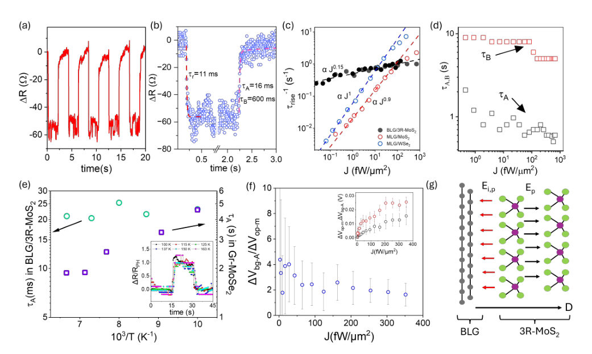
<figcaption class="paper-figure-caption"><b>Fig 3.</b> FIG. 3. Persistence-free photoresponse in hole-doped regime. (a) ∆R as a function of time at Vbg = - 43 V, Vtg = +5 V for six optical pulses with a pulsing frequency of 0.5 Hz at 100 K. (b) A typical representation of ∆R vs time for a single optical pulse at Vbg = -43 V, Vtg = +5 V. The rise and fall region is fitted with a exponential and bi-exponential fit (red dash lines) respectively. (c) Power dependence of the inverse of rise time in BLG/3R-MoS2 and other Gr/TMD hybrids [6] (d) Power dependence of fall time at Vbg = -43 V, Vtg = +5 V. The red and black hollow squares represent to two processes of fall timescales involved in recovery. (c) Recovery timescale τA and τB as a function of...</figcaption>
</figure>
<figure class="paper-figure-card">
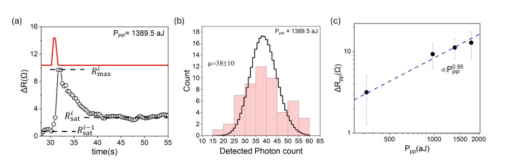
<figcaption class="paper-figure-caption"><b>Fig 4.</b> FIG. 4. Ultra-low light detection with BLG/3R-MoS2 hybrid. (a) Resistance as a function of time after a single pulse of light at 1389.5 aJ. (b) Histogram of normalized photon numbers obtained from multiple sets of pulsing experiments as shown in (a).(c) Average change in resistance (∆RP P as a function of power per pulse (PP P ) ranging from 350 aJ to 2000 aJ. The blue dotted line is the power law fit to the data.</figcaption>
</figure>
</div>

<p><strong>Summary.</strong> This work reports on a novel photodetector built from a Graphene/Ferroelectric (3R-MoS2) van der Waals hybrid. By exploiting the spontaneous polarization of the ferroelectric layer, the researchers achieved a tunable, persistence-free photoresponse in bilayer graphene. This breakthrough overcomes the trade-off between speed and sensitivity, establishing the platform for advanced optoelectronic devices.</p>
<p><strong>Why it may be interesting.</strong> While primarily an experimental condensed matter device physics paper, the control over interfacial charge dynamics via intrinsic polarization fields offers insights into engineered quantum interfaces relevant to open quantum systems and energy harvesting.</p>
<details>
<summary>Detailed structure</summary>
<p><strong>Main problem.</strong> The primary challenge addressed is designing photodetectors that can achieve both high sensitivity and fast response times, overcoming limitations associated with trap-mediated photogating mechanisms.</p>
<p><strong>Main result.</strong> The authors demonstrated a tunable, persistence-free photoresponse in a Graphene/Ferroelectric hybrid by utilizing the polarization field from 3R-MoS2 to optically gate bilayer graphene.</p>
<p><strong>Method.</strong> The study employed electrical and optoelectronic characterization techniques, including KPFM mapping, time-resolved photoluminescence (PL) spectroscopy, and measuring transient photoresistance under varying illumination conditions.</p>
<p><strong>Model / system.</strong> The physical system is a van der Waals heterostructure comprising bilayer graphene (BLG) interfaced with a ferroelectric material, specifically bilayer MoS2 in the rhombohedrally stacked (3R) phase. This structure is configured as an edge-contacted dual-gated field-effect transistor.</p>
<p><strong>Key observables.</strong> Photoresponse magnitude ($\Delta R$), relaxation timescales ($   au_A \approx 10$ ms), internal quantum efficiency ($\approx 10\%$), and the persistence of photo-induced changes under different doping regimes.</p>
<p><strong>Important parameters / regimes.</strong> The response time is reported as being limited by the measurement instrument (tens of milliseconds); the mechanism relies on the intrinsic polarization field ($E_{i,P}$) from the ferroelectric layer.</p>
<p><strong>Assumptions / limitations.</strong> The rapid photoresponse in the hole-doped regime is attributed to a mechanism governed by polarization modulation rather than conventional trap-mediated charge trapping/detrapping processes.</p>
<p><strong>Figures summary.</strong> Figures illustrate KPFM potential mapping, PL spectra comparing 3R and 2H phases, time traces showing persistence-free response (especially in the hole-doped regime), and photon counting histograms confirming high sensitivity.</p>
<p><strong>Paper structure.</strong> The paper progresses by first establishing the limitations of existing photodetectors; it then details the fabrication and characterization of the BLG/3R-MoS2 structure using multiple techniques (KPFM, PL); subsequently, it analyzes the photoresponse dynamics, highlighting the doping asymmetry that dictates whether the response is persistent or persistence-free.</p>
</details>
<details>
<summary>Abstract</summary>
<p>Graphene-based van der Waals hybrid photodetectors typically work on trap-mediated photogating mechanism, exhibiting high sensitivity, but under-perform in the fast detection of repetitive optical signals. Designing photodetectors that are simultaneously fast and highly sensitive has therefore remained difficult. In this work, we realize both attributes by integrating atomically thin sliding ferroelectrics in the design architecture, thereby uniting semiconducting properties with intrinsic polarization fields capable of efficiently governing interfacial photocarrier dynamics. We report a bilayer graphene-bilayer MoS2 (with MoS2 in a rhombohedrally stacked (3R) configuration) van der Waals photodetector with edge-contacted dual-gated field-effect transistor architecture. The photo-induced modulation in spontaneous out-of-plane polarization of 3R-MoS2 and selective confinement of charge carriers in bilayer graphene under an out-of-plane displacement field results in a tunable persistence-free photoresponse. Here, the photoinduced polarization change in 3R-MoS2 produces an optically controlled gating effect that alters the electrostatic environment of bilayer graphene, resulting in a temperature-independent photoresponse with rapid response times of the order of 10's of milliseconds (limited by the measurement instrument). We demonstrate reproducible detection of optical signals and examine the photon-counting resolution of this structure in high-sensitivity regimes, where we determine its internal quantum efficiency to be 10 percent with minimum detectable photon number of 31 in single shot measurements. This work highlights the functionality of 3R-MoS2 in manipulating the interfacial charge dynamics and establishes the hybrid of graphene and ferroelectric 3R-MoS2 as a promising platform for ultra-sensitive optoelectronic devices.</p>
</details>
<p><sub><a href="#top">↑ back to top</a></sub></p>

<p><a id="paper-2608.09916"></a></p>
<h3 id="aes-debye-an-accurate-efficient-and-scalable-engine-for-debye-scattering-calculations"><a href="http://arxiv.org/abs/2608.09916v1">AES-Debye: an Accurate, Efficient, and Scalable Engine for Debye Scattering Calculations</a></h3>
<p><strong>Authors:</strong> Navid Panchi, Sebastian Kuckuk, Markus Wittmann, Michael Engel, Alberto Leonardi<br>
<strong>Type:</strong> theory · <strong>Category:</strong> numerical methods · <strong>PDF:</strong> <a href="https://arxiv.org/pdf/2608.09916v1">https://arxiv.org/pdf/2608.09916v1</a><br>
<strong>Analysis basis:</strong> full PDF text, analyzed in chunks
<strong>Topic relevance:</strong> <code>methods for driven-dissipative</code> <strong>3/5</strong> · <code>analog quantum simulation</code> <strong>1/5</strong> · <code>quantum measurements</code> <strong>1/5</strong></p>
<div class="figure-strip-hint">↔ Scroll figures horizontally</div>
<div class="paper-figures-scroll">
<figure class="paper-figure-card">
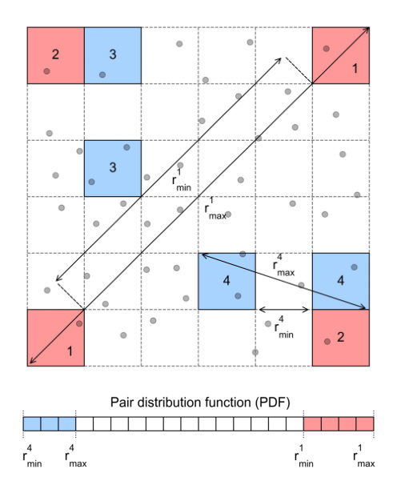
<figcaption class="paper-figure-caption"><b>Fig 1.</b> Figure 1: Schematic of the cell-list-based domain decomposition in a 2D toy system. Top: Repre- sentative cell pairs are color coded and grouped by center-to-center distance; the minimum (rmin) and maximum (rmax) possible interatomic distances within a pair are indicated. Bottom: Memory access pattern during PDF computation. Grouping cell pairs with similar center-to-center distances improves cache reuse and localizes updates to nearby PDF bin.</figcaption>
</figure>
<figure class="paper-figure-card">
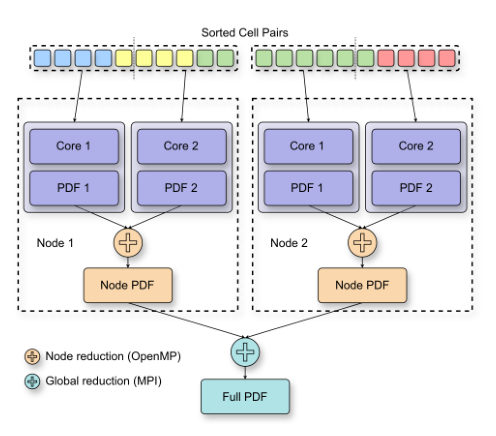
<figcaption class="paper-figure-caption"><b>Fig 2.</b> Figure 2: CPU parallelization scheme using a hybrid MPI+OpenMP model. Each node runs a single MPI process that spawns multiple OpenMP threads (one per core in this example). This schematic shows two MPI processes, each with two OpenMP threads.</figcaption>
</figure>
<figure class="paper-figure-card">
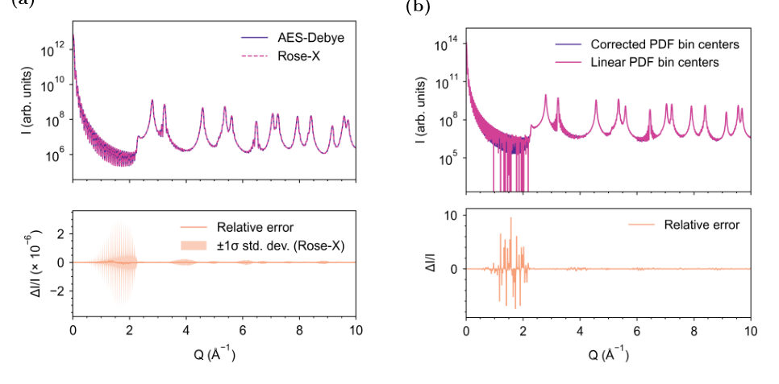
<figcaption class="paper-figure-caption"><b>Fig 3.</b> Figure 3: Validation of the PDF-based implementation and bin center correction. (a) Comparison of the intensity profile computed with Rose-X and with the present implementation for a Pd nanocube (side length 9.3 nm). The lower panel shows the relative error between the two profiles, together with the standard deviation of the intensity error estimated from Rose-X. (b) Powder diffraction profiles computed with and without bin center correction for a crystalline Pd nanocube (side length 15.1 nm). The correction removes unphysical negative intensities and improves the diffuse background.</figcaption>
</figure>
<figure class="paper-figure-card">
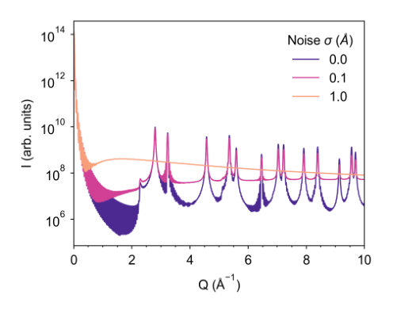
<figcaption class="paper-figure-caption"><b>Fig 4.</b> Figure 4: Diffraction profiles for a Pd nanocube (side length 10 nm) with increasing Gaussian displacement noise σ, used to mimic thermal disorder. Increasing σ broadens and attenuates the Bragg peaks, consistent with increasing structural disorder. The high-frequency oscillations in the background are expected finite size features associated with the parallel facets of the cube and monodisperse size, rather than numerical artifacts.</figcaption>
</figure>
<figure class="paper-figure-card">
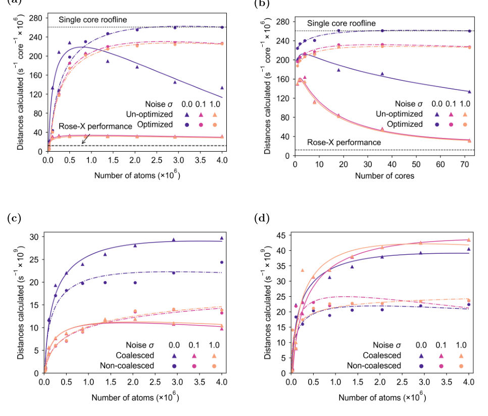
<figcaption class="paper-figure-caption"><b>Fig 5.</b> Figure 5: Performance scaling across CPUs and GPUs for different disorder levels σ. (a) Through- put versus atom count on 72 CPU cores; the dashed lines indicate the single-core roofline and a comparison to the existing earlier implementation in Rose-X. (b) Strong scaling on a single CPU node. (c) Asymptotic performance on an NVIDIA A40 (48 GB GDDR6, 6 MB L2 cache). (d) Asymptotic performance on an NVIDIA A100 (40 GB HBM2e, 25 MB L2 cache).</figcaption>
</figure>
</div>

<p><strong>Summary.</strong> This paper introduces AES-Debye, a high-performance engine designed to calculate total scattering profiles from atomistic models by reformulating the Debye Scattering Equation using Pair Distribution Functions. It achieves state-of-the-art efficiency and accuracy through advanced numerical error correction and highly optimized parallel computing strategies across multiple hardware platforms.</p>
<p><strong>Why it may be interesting.</strong> While focused on condensed matter structure, the extreme focus on optimizing computation for large-scale simulations using specialized data structures, domain decomposition, and multi-level parallelism is highly relevant to developing efficient classical simulation techniques for quantum many-body problems.</p>
<details>
<summary>Detailed structure</summary>
<p><strong>Main problem.</strong> The primary challenge is accurately and efficiently calculating total scattering profiles using the Debye Scattering Equation (DSE) for large, complex nanoscale materials.</p>
<p><strong>Main result.</strong> The authors developed AES-Debye, an accuracy-preserving framework that achieves strong scalability by reformulating the calculation via Pair Distribution Functions (PDFs), enabling simulations on systems of 90 million atoms in minutes.</p>
<p><strong>Method.</strong> It uses a PDF-based reformulation of the DSE, incorporating advanced numerical corrections for bin centers and employing highly optimized, data-locality-aware parallelization across CPUs, GPUs, and distributed memory architectures.</p>
<p><strong>Model / system.</strong> The method is applicable to various atomistic models, including nanocube superlattices, polycrystalline copper samples, Halloysite nanotubes, and colloidal nanoparticle assemblies, allowing characterization of structure and disorder in complex geometries.</p>
<p><strong>Key observables.</strong> Total scattering profile I(Q), Pair Distribution Function (PDF), and the pair distance $r_{ij}$.</p>
<p><strong>Important parameters / regimes.</strong> The bin width $\Delta$ determines resolution; computational complexity is reduced from $O(N^2)$ to depend on PDF bins, while maintaining high numerical fidelity.</p>
<p><strong>Assumptions / limitations.</strong> The core assumption is that reformulating the DSE using a corrected PDF approach mitigates the severe computational cost and accumulation errors inherent in direct pairwise summation.</p>
<p><strong>Figures summary.</strong> Figures illustrate domain decomposition (cell-list based), CPU parallelization schemes, and comparisons of computed PDF profiles showing the removal of unphysical negative intensities when corrections are applied.</p>
<p><strong>Paper structure.</strong> The paper first establishes the physical problem with the DSE. It then details the computational bottleneck ($O(N^2)$) and introduces AES-Debye as a solution based on PDF aggregation. The bulk of the work describes the advanced numerical techniques (error correction, integer arithmetic for precision, memory layout optimization) and parallel implementation strategies before showcasing results across diverse physical systems.</p>
</details>
<details>
<summary>Abstract</summary>
<p>Total scattering models are essential for characterizing the structure and disorder of nanoscale materials. The Debye scattering equation (DSE) provides a rigorous route to elastic total scattering, but its direct evaluation is computationally demanding because pairwise contributions must be accumulated at every scattering vector, whereas common acceleration strategies based on binned pair-distance distributions or gridded fast Fourier transforms can introduce discretization and aliasing artifacts that compromise diffuse-scattering accuracy. Here, we present AES-Debye, an accuracy-preserving DSE framework that aggregates pair distances into a pair distribution function (PDF) using corrected bin centers and numerically robust accumulation to suppress discretization and summation errors. A data-locality-aware parallel design enables efficient execution on CPUs and GPUs. We demonstrate strong scalability by computing a high-resolution total scattering profile for a system of 90 million atoms, $(0.1,μ\mathrm{m})^{3}$, in minutes on a distributed-memory CPU platform. These capabilities extend accurate elastic total scattering calculations to large, complex systems while simultaneously providing high-resolution PDFs for downstream structural analysis.</p>
</details>
<p><sub><a href="#top">↑ back to top</a></sub></p>

<p><a id="paper-2608.08116"></a></p>
<h3 id="multiphysics-modeling-of-thermo-viscoelastic-damage-in-functionally-graded-abradable-coatings-with-probabilistic-geometric-tolerance-analysis"><a href="http://arxiv.org/abs/2608.08116v1">Multiphysics Modeling of Thermo-Viscoelastic Damage in Functionally Graded Abradable Coatings with Probabilistic Geometric Tolerance Analysis</a></h3>
<p><strong>Authors:</strong> Amjad El-Mellouhi, Yassine Adjal, Khaled Dhibi, Fedwa El-Mellouhi<br>
<strong>Type:</strong> theory · <strong>Category:</strong> numerical methods · <strong>PDF:</strong> <a href="https://arxiv.org/pdf/2608.08116v1">https://arxiv.org/pdf/2608.08116v1</a><br>
<strong>Analysis basis:</strong> full PDF text, analyzed in chunks
<strong>Topic relevance:</strong> <code>methods for driven-dissipative</code> <strong>3/5</strong> · <code>Keldysh / 2PI / non-Gaussian methods</code> <strong>1/5</strong></p>
<div class="figure-strip-hint">↔ Scroll figures horizontally</div>
<div class="paper-figures-scroll">
<figure class="paper-figure-card">
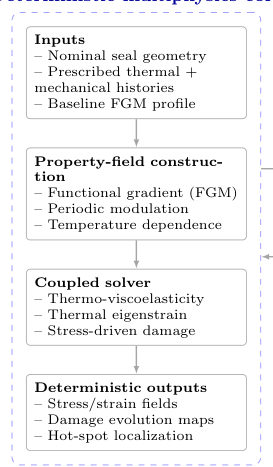
<figcaption class="paper-figure-caption"><b>Fig 1.</b> Fig. 1: Block diagram of the proposed multiphysics–probabilistic framework. A deter- ministic multiphysics core (property-field construction + coupled thermo-viscoelastic– damage solver) is wrapped by a probabilistic tolerance propagation layer (Monte Carlo sampling of geometric deviations) to produce both nominal predictions and reliability metrics.</figcaption>
</figure>
<figure class="paper-figure-card">
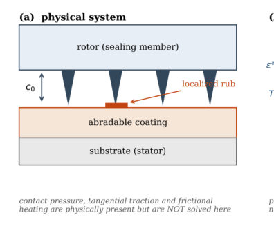
<figcaption class="paper-figure-caption"><b>Fig 2.</b> Fig. 2: Separation of the physical system from the solved numerical domain. (a) In the physical labyrinth-seal stage, relative radial approach may close the clearance c0 and create a localized rub region in which contact pressure, tangential traction and frictional heating are real phenomena. (b) The domain actually solved is a local through-thickness coating column of M perfectly bonded homogenized subdomains on a substrate that enters only through the thermal expansion mismatch, driven by a prescribed equivalent normal-strain history εapp(t) and a prescribed temperature history T(z, t).</figcaption>
</figure>
<figure class="paper-figure-card">
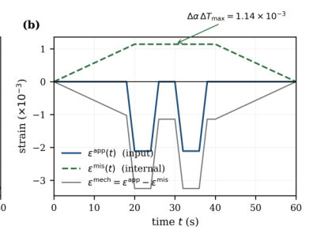
<figcaption class="paper-figure-caption"><b>Fig 3.</b> Fig. 3: Prescribed loading benchmark. (a) The trapezoidal thermal cycle runs 20 → 400 →20 ◦C over 60 s with a 20-s dwell, and the stress-free reference temperature is Tref = 20 ◦C. (b) The equivalent normal-strain history εapp(t) is an input representing cyclic normal approach, whereas the coating–substrate expansion mismatch strain εmis is generated internally by the thermal eigenstrain of Eqs. (4)–(5). The applied waveform is the two-pulse trapezoid of Eq. (1) with amplitude εapp 0 = 2.11 × 10−3, ramp time tr = 2 s and plateau td = 4 s; the mismatch plateau is ∆α ∆Tmax = 3 × 10−6 K−1 × 380 K = 1.14 × 10−3, i.e. exactly the value implied by the coefficients αc = 16 × 10−6 K−1 and αs = 13 ×...</figcaption>
</figure>
<figure class="paper-figure-card">
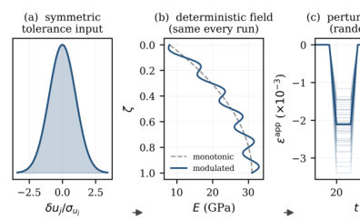
<figcaption class="paper-figure-caption"><b>Fig 4.</b> Fig. 4: Propagation of variability along the computational pipeline. (a) The sampled geometric tolerance is a symmetric Gaussian, δuj ∼N(0, σ2 u) with σu = 0.02 mm and a ±3σu band. (b) The deterministic monotonic and periodically modulated property fields of Eq. (10) (wavelength λg); these are identical in every realization and are not randomized in the present uncertainty model. (c) The ensemble of perturbed equivalent loading histories obtained from the tolerance input through Eq. (14), which is the only randomized quantity. (d) The coupled solver returns a family of damage trajectories, the modulated mean lying systematically above the monotonic mean and reaching 0.03376 at t = 60 s...</figcaption>
</figure>
<figure class="paper-figure-card">
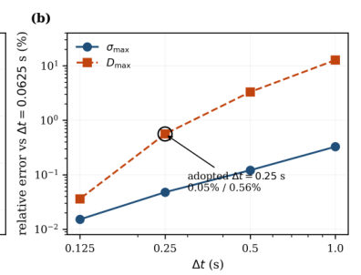
<figcaption class="paper-figure-caption"><b>Fig 5.</b> Fig. 5: Quantitative spatial and temporal refinement of the reduced-order solver. (a) Spatial convergence against the M = 160 reference is close to second order; the adopted M = 40 (circled) gives 0.36% error in maximum stress and 4.71% in maximum damage. (b) Temporal convergence against the ∆t = 0.0625 s reference is first order, as expected from the explicit damage update; the adopted ∆t = 0.25 s (circled) gives 0.05% and 0.56% respectively. The shaded band in (a) marks resolutions below eight subdomains per modulation wavelength, where the sinusoidal term of Eq. (10) is aliased and the error is not a monotone function of M.</figcaption>
</figure>
</div>

<p><strong>Summary.</strong> This paper presents a comprehensive multiphysics–probabilistic framework to model damage in advanced abradable coatings used in gas turbines. It uniquely integrates temperature-dependent viscoelasticity, progressive material damage, microstructural variations, and manufacturing geometric tolerances into one solver. The results highlight that considering these coupled uncertainties is critical for accurately assessing coating reliability.</p>
<p><strong>Why it may be interesting.</strong> While highly applied to materials science, the rigorous implementation of nested Monte Carlo convergence with Wilson confidence intervals for quantifying uncertainty propagation in a complex coupled system is a sophisticated application of numerical methods relevant to reliability analysis in physics simulations.</p>
<details>
<summary>Detailed structure</summary>
<p><strong>Main problem.</strong> To develop a unified framework for predicting damage accumulation in functionally graded abradable coatings by integrating multiple, often separate, physical effects.</p>
<p><strong>Main result.</strong> The study shows that combining periodic property modulation and geometric tolerances significantly increases the predicted end-of-cycle damage risk compared to analyzing these factors independently or deterministically.</p>
<p><strong>Method.</strong> A multiphysics–probabilistic framework is employed, coupling thermo-viscoelasticity, progressive damage laws, microstructural modulation, and Monte Carlo simulation for tolerance propagation.</p>
<p><strong>Model / system.</strong> The system modeled is a local through-thickness column of an abradable coating used in aircraft engines. The model incorporates temperature-dependent viscoelastic softening (Prony series) and stress-driven damage evolution.</p>
<p><strong>Key observables.</strong> Damage variable (D), stress concentrations, damage-exceedance probability ($P_e$), and effective stiffness evolution.</p>
<p><strong>Important parameters / regimes.</strong> Temperature history $T(z, t)$, applied strain $\epsilon_{app}(t)$, deposition modulation parameters, and geometric tolerance bands ($\delta u$).</p>
<p><strong>Assumptions / limitations.</strong> The analysis is a generic benchmark; it simplifies the problem by neglecting contact mechanics, wear depth prediction, and treating porosity via effective homogenization.</p>
<p><strong>Figures summary.</strong> Figure 1 illustrates the block diagram of the multiphysics–probabilistic framework, showing the flow from input definitions through coupled solving to Monte Carlo sampling for outputs like exceedance probabilities.</p>
<p><strong>Paper structure.</strong> The paper establishes the need for a unified model by identifying separate physical drivers (viscoelasticity, damage, modulation, tolerance). It details the coupling of these effects in the solver and presents results demonstrating how variability amplifies risk beyond deterministic predictions. The structure emphasizes verification procedures and limitations.</p>
</details>
<details>
<summary>Abstract</summary>
<p>In aircraft engines, functionally graded abradable coatings are used to control blade-tip clearance, but their durability is governed by effects that are often treated separately in existing models, including temperature-dependent viscoelastic softening, progressive damage, deposition-induced microstructural modulation, and geometric tolerances. This study integrates these effects within a unified multiphysics--probabilistic framework. The solved domain is a local through-thickness coating column driven by prescribed strain and temperature histories that include thermal eigenstrain and coating--substrate expansion mismatch. The results show that periodic property modulation increases end-of-cycle damage relative to the monotonic gradient and concentrates the maximum stress within a localized modulation crest. Propagating symmetric geometric tolerances through the coupled solver produces a strongly right-skewed damage distribution and a higher classification-level exceedance probability for the modulated gradient than for the monotonic gradient. This exceedance behavior cannot be obtained from a deterministic analysis performed at nominal geometry. The implementation is verified through spatial and temporal refinement, closed-form unit tests, nested Monte Carlo convergence with Wilson confidence intervals, and a hold-out-validated polynomial response surface. Numerical verification is clearly distinguished from experimental validation, and the simulated case is presented as a generic benchmark rather than an identified material model. The framework links deposition parameters and tolerance bands to damage-exceedance risk, supporting reliability-oriented screening of graded and multilayer coating systems.</p>
</details>
<p><sub><a href="#top">↑ back to top</a></sub></p>

<p><a id="paper-2608.09785"></a></p>
<h3 id="superconductivity-pseudogap-and-marginal-fermi-liquid-in-a-relative-momentum-local-theory"><a href="http://arxiv.org/abs/2608.09785v1">Superconductivity, pseudogap and marginal Fermi liquid in a relative-momentum-local theory</a></h3>
<p><strong>Authors:</strong> Jian-Jian Miao<br>
<strong>Type:</strong> theory · <strong>Category:</strong> strongly correlated electrons · <strong>PDF:</strong> <a href="https://arxiv.org/pdf/2608.09785v1">https://arxiv.org/pdf/2608.09785v1</a><br>
<strong>Analysis basis:</strong> full PDF text, analyzed in chunks
<strong>Topic relevance:</strong> <code>Keldysh / 2PI / non-Gaussian methods</code> <strong>3/5</strong> · <code>methods for driven-dissipative</code> <strong>1/5</strong></p>
<div class="figure-strip-hint">↔ Scroll figures horizontally</div>
<div class="paper-figures-scroll">
<figure class="paper-figure-card">
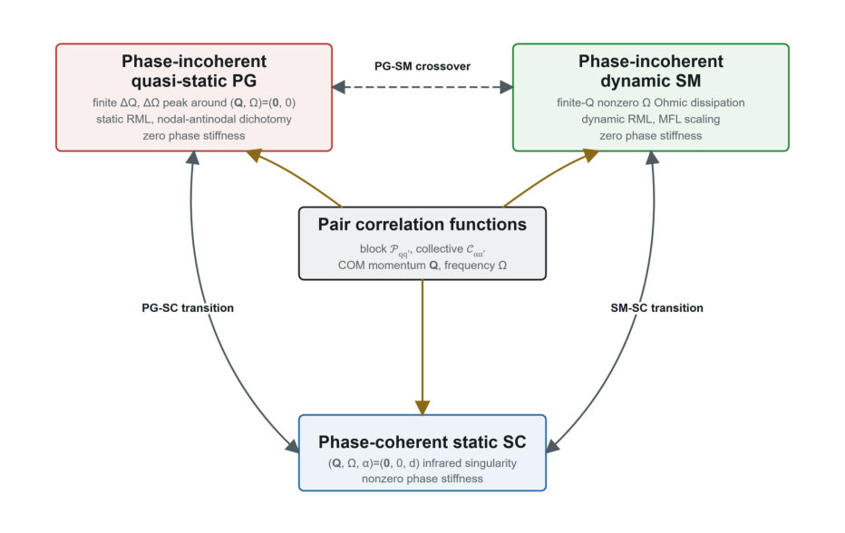
<figcaption class="paper-figure-caption"><b>Fig 1.</b> Figure 1: Three infrared organizations of pair correlation functions. The block-resolved Cooper- pair correlation Pqq′ and the channel-resolved collective-pair correlation Cαα′ distinguish three infrared organizations. In the PG organization, enhanced block-diagonal pair autocorrelation Pqq produces a quasi-static, finite-width peak in Cdd around (Q, iΩm) = (0, 0), with finite ∆Q and ∆Ωand no phase stiffness. In the SM organization, the retarded pair spectral function Apair αα (Q, Ω) remains broad over finite COM momenta and nonzero real frequencies. The gapless particle-particle continuum supplies Ohmic damping, and the dynamic RML prescription can yield a marginal-Fermi-liquid self-energy...</figcaption>
</figure>
<figure class="paper-figure-card">
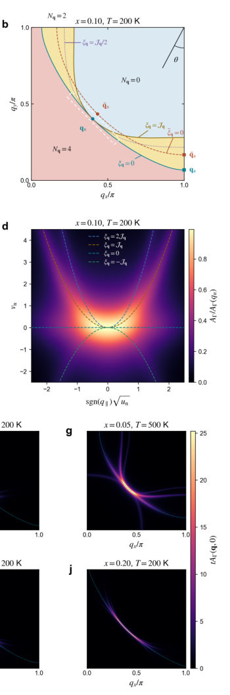
<figcaption class="paper-figure-caption"><b>Fig 2.</b> Figure 2: BKT, pseudogap, and Fermi arc. a, Mean-field T∆d, defined as the highest temperature at which ˆHG,MF t-J has a nonzero d-wave saddle, and bare T (0) BKT obtained from the phase-only action with bare phase stiffness, which neglects long- distance vortex renormalization. b, Ground-state occupations of ˆHPG at x = 0.10. The occupation boundaries are S2e : ξq = 0 and S2h : ξq = Jq, while the punctured Luttinger surface is SL : ξq = Jq/2. c, The single-particle gap scales ∆sp of the exact PG model and ¯∆sp of the mean-field d-wave SC state, each evaluated along both the PG Fermi contour SPG and the Fermi surface SF, with all four curves multiplied by gt(x) = 2x/(1 + x). d,...</figcaption>
</figure>
<figure class="paper-figure-card">
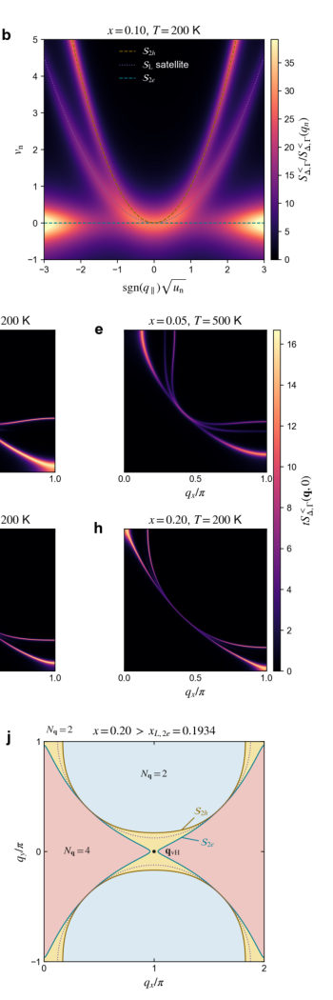
<figcaption class="paper-figure-caption"><b>Fig 3.</b> Figure 3: Cooper surfaces and Lifshitz transition. a, Ground-state occupations of ˆHPG at x = 0.10, annotated with Nq = 4, 2, 0, the PG node qn, the antinode qa, the occupation boundaries S2e : ξq = 0 and S2h : ξq = Jq, and the punctured Luttinger surface SL : ξq = Jq/2; the white dashed window corresponds to panel b. b, Node-normalized zero-frequency S&lt; ∆,Γ(q, 0) at x = 0.10 and T = 200 K. The S2e and S2h guides are dashed, while the SL satellite is dotted; the local coordinates are un = κnq2 ∥/Γ and vn = vF,nq⊥/Γ. The two dominant pair-removal ridges follow S2e and S2h, whereas the weaker thermally activated intermediate satellite follows SL. c-e, Non- negative, Lorentzian-broadened...</figcaption>
</figure>
</div>

<p><strong>Summary.</strong> This paper introduces a Relative-Momentum-Local (RML) theory to unify the description of superconductivity, pseudogap, and strange metal states in cuprates. It achieves this by analyzing how pair correlation functions organize into distinct static, quasi-static, or dynamic behaviors depending on the electronic phase. The work provides concrete diagnostic tools, such as spectral weight transfer and zero-energy ARPES features, to distinguish these correlated quantum phases.</p>
<p><strong>Why it may be interesting.</strong> The unified theoretical framework connecting single-particle, pair, and thermodynamic responses across multiple correlated phases is highly relevant for understanding complex many-body dynamics in strongly interacting quantum materials.</p>
<details>
<summary>Detailed structure</summary>
<p><strong>Main problem.</strong> The paper addresses how three distinct low-energy regimes—Superconductivity (SC), Pseudogap (PG), and Strange Metal (SM)—emerge from the same doped Mott system in cuprate superconductors.</p>
<p><strong>Main result.</strong> A Relative-Momentum-Local (RML) theory unifies these descriptions by analyzing the infrared organization of a single Cooper channel, linking SC to phase coherence, PG to quasi-static correlations, and SM to dynamic damping.</p>
<p><strong>Method.</strong> The authors construct an RML theory based on the $t$-$J$ model, using pair correlation functions ($P_{qq'}, C_{\alpha\alpha'}$) and spectral analysis to diagnose the crossover between regimes.</p>
<p><strong>Model / system.</strong> The system is modeled as a doped Mott insulator governed by the $t$-$J$ Hamiltonian. The theory uses an RML approach that treats single-particle, pair-sensitive, and thermodynamic probes through various correlation functions.</p>
<p><strong>Key observables.</strong> Phase stiffness (zero for PG/SM, non-zero for SC), spectral weight transfer in the pair spectrum ($A_{	ext{pair}}$), and zero-energy Cooper-surface ridges detectable by $2e$-ARPES.</p>
<p><strong>Important parameters / regimes.</strong> Doping level, temperature relative to characteristic scales ($T^*$, $T_{BKT}$), and momentum/frequency variables ($\mathbf{Q}, \Omega$).</p>
<p><strong>Assumptions / limitations.</strong> The theory relies on the Gutzwiller approximation for the no-double-occupancy constraint. The derivation of RML prescriptions from a common dressed Cooper kernel is noted as an open problem.</p>
<p><strong>Figures summary.</strong> Figure 1 illustrates how pair correlators ($P_{qq'}$ and $C_{\alpha\alpha'}$) distinguish the three regimes: PG shows enhanced block-diagonal autocorrelation, while SM involves broad spectral functions over finite momenta.</p>
<p><strong>Paper structure.</strong> The paper establishes the problem by noting the coexistence of SC, PG, and SM. It then develops the RML theory using pair correlation functions to map out distinct behaviors for each regime (static/quasi-static/dynamic). Finally, it discusses crossover mechanisms (PG-SM via spectral weight transfer; PG-SC/SM-SC via phase coherence restoration) and proposes key experimental signatures.</p>
</details>
<details>
<summary>Abstract</summary>
<p>Cuprate superconductors host \(d\)-wave superconductivity (SC), a pseudogap (PG) with Fermi arcs and a strange metal (SM) with incoherent excitations and temperature-linear resistivity. These regimes emerge from the same doped Mott system but are usually described separately. Here a relative-momentum-local (RML) theory is constructed, with the exact spin-singlet Cooper representation of antiferromagnetic superexchange in the \(t\)-\(J\) model serving as a common thread. Pair correlations organize the low-energy behaviour of this Cooper channel into phase-coherent static SC, phase-incoherent quasi-static PG and phase-incoherent dynamic SM. A static RML prescription yields an exactly solvable PG Hamiltonian with nodal electron poles, antinodal gaps, resolution-broadened Fermi arcs and gapless charge-\(2e\) Cooper surfaces. A Cooper-surface Lifshitz transition generates logarithmic enhancements in the specific-heat coefficient and charge response without a spin singularity. The particle-particle continuum at finite centre-of-mass momentum produces Ohmic damping, while a dynamic RML prescription yields a one-loop self-energy with marginal-Fermi-liquid scaling. Spectral-weight transfer in the physical pair spectrum diagnoses the PG--SM crossover, whereas nonzero phase stiffness and global phase coherence identify SC. The RML theory relates single-particle, pair-sensitive and thermodynamic probes to three infrared organizations of one Cooper channel. A decisive experimental signature would be zero-energy Cooper-surface ridges in two-electron angle-resolved photoemission spectroscopy (2e-ARPES).</p>
</details>
<p><sub><a href="#top">↑ back to top</a></sub></p>

<p><a id="paper-2608.08697"></a></p>
<h3 id="thermodynamic-evidence-for-interaction-driven-first-order-topological-quantum-phase-transitions"><a href="http://arxiv.org/abs/2608.08697v1">Thermodynamic evidence for interaction-driven first-order topological quantum phase transitions</a></h3>
<p><strong>Authors:</strong> Surajit Dutta, Nadav Auerbach, Chiho Yoon, Tonghang Han, Matan Uzan, Zhengguang Lu, Niladri-Sekhar Kander, Yaozhang Zhou, Yuri Myasoedov, Martin E. Huber, Kenji Watanabe, Takashi Taniguchi, Long Ju, Fan Zhang, Eli Zeldov<br>
<strong>Type:</strong> both · <strong>Category:</strong> statistical mechanics · <strong>PDF:</strong> <a href="https://arxiv.org/pdf/2608.08697v1">https://arxiv.org/pdf/2608.08697v1</a><br>
<strong>Analysis basis:</strong> full PDF text, analyzed in chunks
<strong>Topic relevance:</strong> <code>analog quantum simulation</code> <strong>2/5</strong> · <code>quantum measurements</code> <strong>2/5</strong> · <code>Keldysh / 2PI / non-Gaussian methods</code> <strong>1/5</strong> · <code>driven-dissipative phase transition</code> <strong>1/5</strong> · <code>methods for driven-dissipative</code> <strong>1/5</strong> · <code>non-equilibrium universality</code> <strong>1/5</strong></p>
<div class="figure-strip-hint">↔ Scroll figures horizontally</div>
<div class="paper-figures-scroll">
<figure class="paper-figure-card">
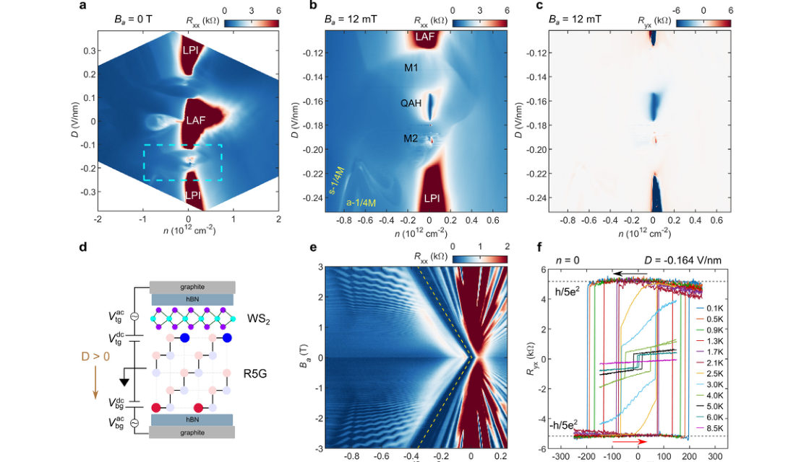
<figcaption class="paper-figure-caption"><b>Fig 1.</b> Fig. 1. Transport measurements of WS2-proximitized rhombohedral pentalayer graphene. a, Longitudinal resistance 𝑅𝑅𝑥𝑥𝑥𝑥(𝑛𝑛, 𝐷𝐷) measured in zero magnetic field 𝐵𝐵𝑎𝑎 at 𝑇𝑇= 20 mK. b,c, High-resolution maps of 𝑅𝑅𝑥𝑥𝑥𝑥 (b) and Hall resistance 𝑅𝑅𝑦𝑦𝑦𝑦 (c) in the dashed cyan box in (a). d, Schematics of the R5G proximitized to WS2 device and of the electrical circuit. e, 𝑅𝑅𝑥𝑥𝑥𝑥(𝑛𝑛, 𝐵𝐵𝑎𝑎) at 𝐷𝐷= −0.164 V/nm at 𝑇𝑇= 100 mK. The yellow dotted lines represent the Streda formula fits with 𝐶𝐶= ±5. f, 𝑅𝑅𝑦𝑦𝑦𝑦 as a function of sweeping 𝐵𝐵𝑎𝑎 up (red arrow) and down (black arrow) in the QAH state at 𝐷𝐷= −0.164 V/nm at different indicated temperatures.</figcaption>
</figure>
<figure class="paper-figure-card">
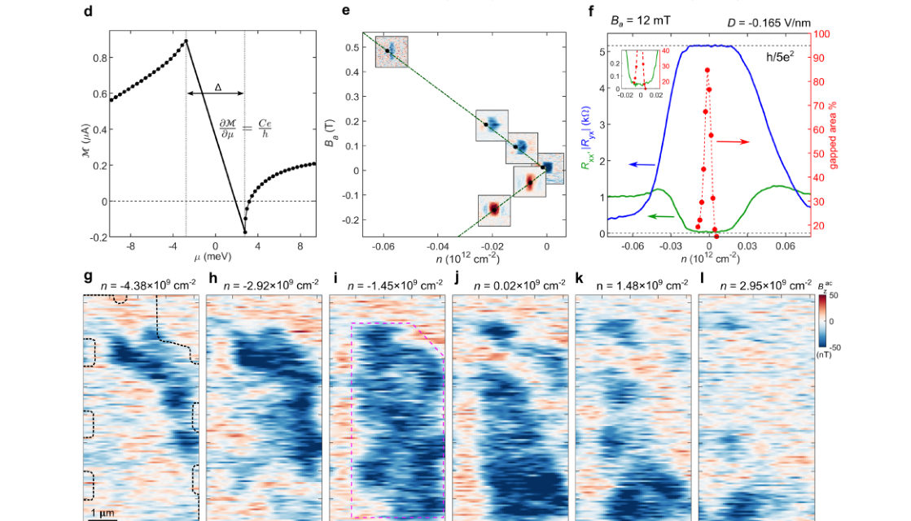
<figcaption class="paper-figure-caption"><b>Fig 2.</b> Fig. 2. Orbital magnetism in the QAH state. a, Schematics of the scanning SOT imaging setup (bottom), optical image of the device (top-right), and schematics of the different modulation schemes 𝑉𝑉𝑡𝑡𝑡𝑡 𝑎𝑎𝑎𝑎, 𝑉𝑉𝑏𝑏𝑏𝑏</figcaption>
</figure>
<figure class="paper-figure-card">
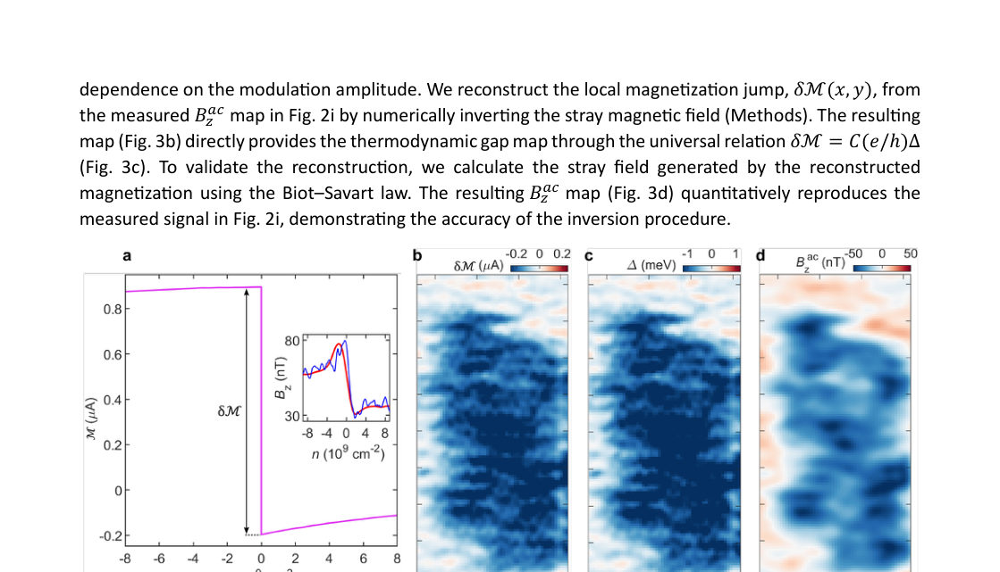
<figcaption class="paper-figure-caption"><b>Fig 3.</b> Fig. 3. Local magnetization reconstruction and thermodynamic gap of QAH state. a, Calculated orbital magnetization ℳ(𝑛𝑛) as a function of 𝑛𝑛 in the QAH state within the scHF theory (equivalent to ℳ(𝜇𝜇) in Fig. 2d), showing a sharp jump 𝛿𝛿ℳ= 𝐶𝐶 𝑒𝑒 ℎ∆ across the topological gap. Inset: Red curve, integrated</figcaption>
</figure>
<figure class="paper-figure-card">

<figcaption class="paper-figure-caption"><b>Fig 4.</b> Fig. 4. First-order QAH phase transition. a, 𝐵𝐵𝑧𝑧𝑎𝑎𝑎𝑎(𝑛𝑛, 𝐷𝐷) at a fixed location acquired at 𝐵𝐵𝑎𝑎= 10.8 mT and 𝑇𝑇= 20 mK using purely 𝑛𝑛𝑎𝑎𝑎𝑎 modulation. b, The same as (a) but using purely 𝐷𝐷𝑎𝑎𝑎𝑎 modulation. c, 𝐷𝐷𝑎𝑎𝑎𝑎 modulated differential Hall resistance 𝑅𝑅𝑦𝑦𝑦𝑦 𝑎𝑎𝑎𝑎= 𝐷𝐷𝑎𝑎𝑎𝑎𝜕𝜕𝑅𝑅𝑦𝑦𝑦𝑦/𝜕𝜕𝜕𝜕 as a function of 𝑛𝑛 and 𝐷𝐷 at 𝐵𝐵𝑎𝑎= 12 mT. Two sharp opposite polarity signals at 𝐷𝐷𝑐𝑐1 = −0.154 V/nm and 𝐷𝐷𝑐𝑐2 = −0.178 V/nm (arrows) indicate the FO phase transitions between the LAF, QAH, and LPI states, consistent with the local 𝐵𝐵𝑧𝑧𝑎𝑎𝑎𝑎 response in (b) and in Extended Data Fig. 4. d, Calculated scHF energy 𝐸𝐸𝑡𝑡𝑡𝑡𝑡𝑡 vs. displacement potential 𝑈𝑈 of the competing states at 𝑛𝑛 = 0: LAF (blue), LPI...</figcaption>
</figure>
<figure class="paper-figure-card">

<figcaption class="paper-figure-caption"><b>Fig 5.</b> Fig. 5. Fluctuating strongly correlated phases. a, 𝑅𝑅𝑥𝑥𝑥𝑥(𝑛𝑛, 𝐷𝐷) map in the vicinity of M2 state showing pronounced fluctuations. b, The same as (a) but for 𝑅𝑅𝑦𝑦𝑦𝑦. c, 𝐵𝐵𝑧𝑧𝑎𝑎𝑎𝑎(𝑛𝑛, 𝐷𝐷) measured in the area marked by a dashed frame in (a). d-i, Time-sequence of 𝐵𝐵𝑧𝑧𝑎𝑎𝑎𝑎(𝑥𝑥, 𝑦𝑦) images of the sample area using 𝑉𝑉𝑏𝑏𝑏𝑏</figcaption>
</figure>
</div>

<p><strong>Summary.</strong> This work reports the first direct thermodynamic evidence for first-order topological quantum phase transitions in a graphene system. By using nanoscale magnetometry on a QAH state, the authors observed discontinuous jumps in local orbital magnetization as the system transitioned between competing correlated states. This establishes a framework where strong electron interactions drive abrupt, first-order changes rather than smooth, continuous evolution.</p>
<p><strong>Why it may be interesting.</strong> It provides a concrete, measurable signature (discontinuous jumps in order parameters) for interaction-driven topological transitions, which is highly relevant for understanding non-equilibrium or strongly interacting quantum systems beyond simple mean-field theory predictions.</p>
<details>
<summary>Detailed structure</summary>
<p><strong>Main problem.</strong> To provide direct thermodynamic evidence for first-order topological quantum phase transitions driven by electron-electron interactions, contrasting with the conventional view of continuous transitions.</p>
<p><strong>Main result.</strong> The sequential transitions between different correlated insulating states (LAF, QAH, LPI) were shown to be first-order, evidenced by discontinuous changes in local orbital magnetization and phase coexistence near boundaries.</p>
<p><strong>Method.</strong> Combining direct real-space imaging using nanoSQUID on tip magnetometry with self-consistent Hartree-Fock calculations to map out the thermodynamic landscape of competing phases.</p>
<p><strong>Model / system.</strong> The study uses a spin-orbit proximitized rhombohedral graphene quantum anomalous Hall (QAH) state, which hosts multiple competing correlated insulating states.</p>
<p><strong>Key observables.</strong> Local orbital magnetization ($B_z$), quantized Hall conductance ($\sigma_{xy}$), and the reconstruction of the local thermodynamic gap ($\Delta$).</p>
<p><strong>Important parameters / regimes.</strong> Carrier density ($n$) and transverse displacement field ($D$); phase competition between LAF, QAH, and LPI states.</p>
<p><strong>Assumptions / limitations.</strong> The interpretation relies on using local magnetization as a direct thermodynamic order parameter to distinguish first-order jumps from continuous changes.</p>
<p><strong>Figures summary.</strong> Figures map out the phase boundaries in terms of $n$ vs. $D$, showing distinct regions corresponding to different magnetic and topological states, alongside visualizations of the local magnetization evolution.</p>
<p><strong>Paper structure.</strong> The paper establishes the problem by contrasting expected continuous transitions with predicted first-order ones; it then presents experimental measurements using SQUID magnetometry to image magnetization across phase boundaries, culminating in the conclusion that these are first-order due to observed discontinuities and domain fluctuations.</p>
</details>
<details>
<summary>Abstract</summary>
<p>Topological quantum phase transitions in non interacting systems occur through continuous gap closing and reopening. In strongly interacting systems, however, competing ordered states have long been predicted to drive first order transitions, although this possibility has remained experimentally unresolved. Recent transport studies of correlated phases in charge neutral rhombohedral graphene were interpreted as evidence for continuous topological transitions. Here, using nanoSQUID on tip magnetometry, we directly image the local orbital magnetization of a spin orbit proximitized rhombohedral graphene quantum anomalous Hall (QAH) state. We provide the first real space visualization of a QAH phase with a record Chern number, reconstruct its local thermodynamic gap, and track the evolution of its magnetization across competing correlated states. Combined with self consistent Hartree Fock calculations, these measurements show that the sequential transitions between the layer antiferromagnetic, QAH, and layer polarized insulating states are first order, accompanied by discontinuous changes in orbital magnetization. Near the phase boundaries, we observe fluctuating magnetic domains, providing direct microscopic evidence of phase coexistence between nearly degenerate competing ordered states. Together, these observations provide the first direct thermodynamic evidence for first order topological quantum phase transitions and establish a microscopic framework for understanding interaction driven topological quantum phase transitions through phase competition and coexistence.</p>
</details>
<p><sub><a href="#top">↑ back to top</a></sub></p>

<p><a id="paper-2608.09334"></a></p>
<h3 id="parity-resolved-quantum-capacitance-and-quantum-inductance-in-topological-trivial-and-normal-nanowire-interferometers"><a href="http://arxiv.org/abs/2608.09334v1">Parity-Resolved Quantum Capacitance and Quantum Inductance in Topological, Trivial, and Normal Nanowire Interferometers</a></h3>
<p><strong>Authors:</strong> Viktoriia Pinchenkova, Valerii K. Kozin, Maximilian Hünenberger, Daniel Loss, Jelena Klinovaja<br>
<strong>Type:</strong> theory · <strong>Category:</strong> other · <strong>PDF:</strong> <a href="https://arxiv.org/pdf/2608.09334v1">https://arxiv.org/pdf/2608.09334v1</a><br>
<strong>Analysis basis:</strong> full PDF text, analyzed in chunks
<strong>Topic relevance:</strong> <code>quantum measurements</code> <strong>2/5</strong> · <code>Keldysh / 2PI / non-Gaussian methods</code> <strong>1/5</strong> · <code>analog quantum simulation</code> <strong>1/5</strong> · <code>driven-dissipative phase transition</code> <strong>1/5</strong> · <code>interference shaping light</code> <strong>1/5</strong> · <code>methods for driven-dissipative</code> <strong>1/5</strong></p>
<div class="figure-strip-hint">↔ Scroll figures horizontally</div>
<div class="paper-figures-scroll">
<figure class="paper-figure-card">

<figcaption class="paper-figure-caption"><b>Fig 1.</b> FIG. 1. Different interferometric setups considered in this work. A Rashba nanowire (NW) is aligned along the x axis. The SOI vector points in the z direction and the magnetic field in the x direction. A quantum dot (gray) is coupled to the left and right ends of the NW, forming an interferometric loop that encloses a magnetic flux Φ. (a) The NW is covered by a superconductor, which induces superconductivity (S) via the proximity effect. The NW is tuned to the topological regime, where it can host MBSs localized at its ends. (b) The NW is tuned to the trivial phase. The left segment is not covered by the superconductor and remains normal (N), allowing for an ABS localized near the S–N...</figcaption>
</figure>
<figure class="paper-figure-card">

<figcaption class="paper-figure-caption"><b>Fig 2.</b> FIG. 2. (a) Energy spectrum of the nanowire uncoupled from the QD in the topological interferometer, as a function of the Zeeman energy ∆Z. (b) Probability density of the MBSs and the lowest-energy bulk state at ∆Z = 0.675 meV [indicated by the black line in (a)]. The chosen ∆Z lies in the topological phase and yields nearly zero MBS energy splitting, resulting in states localized at the nanowire ends with negligible over- lap. The parameters are listed in Table I in Appendix E.</figcaption>
</figure>
<figure class="paper-figure-card">

<figcaption class="paper-figure-caption"><b>Fig 3.</b> FIG. 3. (a) Low-energy spectrum of the topological interfer- ometer. (b) Difference between quantum capacitance in the even and odd parity sectors ∆CQ as a function of VQD. (c), (e) Even and odd branches of the quantum capacitance CQ and (d), (f) the quantum inductance L−1 Q at VQD = 0.75 meV and VQD = 0.82 meV [indicated by the black lines in (b)]. In all presented cases, CQ(ϕ) and L−1 Q (ϕ) exhibit a 2π-periodicity and π phase shift. The effective model [dashed lines in (c)- (f)] reproduces the results of the full Hamiltonian (solid lines). The parameters are listed in Table I in Appendix E.</figcaption>
</figure>
<figure class="paper-figure-card">

<figcaption class="paper-figure-caption"><b>Fig 4.</b> FIG. 4. (a) Energy spectrum of the nanowire uncoupled from the QD in the non-topological interferometer with one ABS. (b) Probability density of the ABS at the Zeeman energy ∆Z = 1.26 meV [indicated by the black line in (a)]. The chosen ∆Z, together with a small superconducting gap ∆0 = 0.09 meV, results in a finite probability density at the right end of the nanowire, allowing the ABS to couple to the QD from both ends. The parameters are listed in Table II in Appendix E.</figcaption>
</figure>
<figure class="paper-figure-card">

<figcaption class="paper-figure-caption"><b>Fig 5.</b> FIG. 5. (a) Low-energy spectrum of the non-topological in- terferometer with one ABS. (b) Difference between quantum capacitance in the even and odd parity sectors ∆CQ as a function of VQD. (c), (e), (g) Even and odd branches of the quantum capacitance CQ and (d), (f), (h) quantum in- ductance L−1 Q at VQD = 1.425 meV, VQD = 1.38 meV and VQD = 1.48 meV [indicated by the black lines in (b)]. In this parameter regime, CQ(ϕ) and L−1 Q (ϕ) show Majorana-like be- havior, namely 2π periodicity and nearly π phase shift. The parameters are listed in Table II in Appendix E.</figcaption>
</figure>
</div>

<p><strong>Summary.</strong> The paper investigates whether quantum capacitance and inductance measurements can uniquely identify Majorana bound states in nanowire interferometers. By comparing results from topological, trivial, and normal wire models, the authors demonstrate that similar flux-dependent signatures are not exclusive to MBSs. They propose that more complex diagnostics, such as observing specific charge-$2e$ periodic components, are necessary for definitive topological identification.</p>
<p><strong>Why it may be interesting.</strong> This work directly addresses a major experimental challenge in condensed matter physics: developing unambiguous signatures to confirm topological superconductivity using transport measurements.</p>
<details>
<summary>Detailed structure</summary>
<p><strong>Main problem.</strong> To determine if characteristic quantum capacitance ($C_Q$) and inverse quantum inductance ($L_Q^{-1}$) oscillations are uniquely indicative of topological Majorana bound states (MBSs), or if similar signatures can arise from trivial superconducting physics.</p>
<p><strong>Main result.</strong> The standard Majorana-like patterns observed in $C_Q$ and $L_Q^{-1}$ are not unique to the topological phase, as they can emerge from trivial Andreev bound states or normal wires. A clear non-Majorana signature was found using two nearly zero-energy ABSs.</p>
<p><strong>Method.</strong> The authors computed parity-resolved quantum capacitance and inverse quantum inductance by exactly diagonalizing the system Hamiltonian for four different nanowire realizations (topological, single/two-ABS, normal).</p>
<p><strong>Model / system.</strong> The study analyzes a quantum dot coupled to an interferometer loop formed by various superconducting or normal nanowires. The model uses a 1D Rashba nanowire Hamiltonian and calculates observables using the Bogoliubov–de Gennes framework.</p>
<p><strong>Key observables.</strong> Parity-resolved quantum capacitance ($C_Q$) and inverse quantum inductance ($L_Q^{-1}$), measured as functions of magnetic flux ($\Phi$).</p>
<p><strong>Important parameters / regimes.</strong> Magnetic flux ($\Phi$), superconducting gap ($\Delta$), coupling amplitudes ($\lambda_L, \lambda_R$), and disorder strength ($\delta\mu$).</p>
<p><strong>Assumptions / limitations.</strong> The analysis compares results from topological, single-ABS, two-ABS, and normal wire regimes; the effective model relies on perturbative expansion for small couplings.</p>
<p><strong>Figures summary.</strong> Figures illustrate the four different nanowire setups (Topological, Trivial, Non-topological, Normal) and show calculated $C_Q(\phi)$ and $L_Q^{-1}(\phi)$ curves for various regimes.</p>
<p><strong>Paper structure.</strong> The paper introduces the problem of distinguishing topological signatures from trivial ones using capacitance/inductance. It details the theoretical framework by calculating observables in the full model, deriving an effective low-energy Hamiltonian, and comparing results across different physical realizations (topological vs. non-topological).</p>
</details>
<details>
<summary>Abstract</summary>
<p>Quantum-capacitance measurements convert the curvature of a quantum-dot energy in a flux-threaded nanowire loop into fast parity-sensitive signals and, therefore, have become a promising readout tool for Majorana devices. However, Majorana-like quantum-capacitance responses can also arise from topologically trivial Andreev bound states, making capacitance alone insufficient to identify a topological phase. To analyze this problem, we consider a quantum dot coupled to both ends of four nanowire realizations: a topological nanowire hosting Majorana bound states, non-topological superconducting nanowires hosting one or two Andreev bound states, and a fully normal nanowire. Motivated by proposals to use quantum inductance as an additional phase-sensitive probe, we compute both the parity-resolved quantum capacitance $C_\mathrm{Q}$ and inverse quantum inductance $L_\mathrm{Q}^{-1}$ as functions of the magnetic flux by exact diagonalization. We show that signatures associated with zero-energy Majorana bound states, such as $h/e$ periodicity and an $h/(2e)$ flux shift between even and odd parity sectors in $C_\mathrm{Q}$ and $L_\mathrm{Q}^{-1}$, are not sufficient indicators of topological superconductivity. In certain realistic parameter regimes, similar Majorana-like behavior can arise from a trivial Andreev bound state and even from a purely normal nanowire. By contrast, two nearly zero-energy Andreev bound states can generate a pronounced $h/(2 e)$-periodic component associated with charge-$2e$ transfer, providing a clear non-Majorana signature. A low-energy projection shows that the Majorana, single-Andreev-state, and normal cases can be mapped onto the same minimal low-energy model explaining their similar flux-dependent responses despite their different physical origins.</p>
</details>
<p><sub><a href="#top">↑ back to top</a></sub></p>

<p><a id="paper-2608.08353"></a></p>
<h3 id="magnetoelastic-coupling-in-stripe-domain-states-of-yttrium-iron-garnet"><a href="http://arxiv.org/abs/2608.08353v1">Magnetoelastic coupling in stripe-domain states of yttrium iron garnet</a></h3>
<p><strong>Authors:</strong> Nimisha Arora, Daniel Prestwood, Takashi Kikkawa, Eiji Saitoh, Jack Gartside, Will Branford, Hidekazu Kurebayashi<br>
<strong>Type:</strong> both · <strong>Category:</strong> other · <strong>PDF:</strong> <a href="https://arxiv.org/pdf/2608.08353v1">https://arxiv.org/pdf/2608.08353v1</a><br>
<strong>Analysis basis:</strong> full PDF text, analyzed in chunks
<strong>Topic relevance:</strong> <code>driven-dissipative phase transition</code> <strong>2/5</strong> · <code>analog quantum simulation</code> <strong>1/5</strong> · <code>correlated / nonlocal dissipation</code> <strong>1/5</strong> · <code>methods for driven-dissipative</code> <strong>1/5</strong> · <code>quantum measurements</code> <strong>1/5</strong></p>
<div class="figure-strip-hint">↔ Scroll figures horizontally</div>
<div class="paper-figures-scroll">
<figure class="paper-figure-card">

<figcaption class="paper-figure-caption"><b>Fig 1.</b> FIG. 1. (a) Schematic of a 3 µm-thick YIG thin film epi- taxially grown on a GGG substrate oriented along the [111] direction. (b) Schematic of the FMR measurement geometry, showing the static external magnetic field applied in the film plane along the [1¯10] direction. (c) Conceptual illustration of magnetoelastic coupling in the YIG/GGG heterostructure: microwave-driven magnons in YIG generate strain and excite confined thickness-shear phonon modes in GGG, forming a dense phonon comb. The phonons then couple back to the magnons and perturb the FMR response.</figcaption>
</figure>
<figure class="paper-figure-card">

<figcaption class="paper-figure-caption"><b>Fig 2.</b> FIG. 2. (a) Field–frequency microwave transmission spectrum (S21) of a YIG(3 µm)/GGG heterostructure measured using broadband CPW-FMR. Multiple magnon branches are labeled m1–m4. (b) Zoomed microwave transmission spectral map for frequencies below 0.5 GHz and a magnetic-field range 2.0–3.5 mT. The transmission spectrum at a representative field of 2.9 mT (red vertical line in two-dimensional spectral map) is shown on the right to highlight the periodic phonon modulation. (c) Micromagnetically simulated remanent magnetization state of the YIG film, computed in a 3 µm × 3 µm cross-sectional cell with periodic boundary conditions along the lateral ([11¯2]) direction, revealing a stripe...</figcaption>
</figure>
<figure class="paper-figure-card">

<figcaption class="paper-figure-caption"><b>Fig 3.</b> FIG. 3. (a) Representative frequency sweep at fixed mag- netic field, showing the raw spectrum together with a smooth background representing the broad magnon response of modes m1-m4. (b) Residual spectrum obtained after background subtraction, revealing narrow, periodically spaced peak–dip features with free spectral range ∆f ≈3.5 MHz.</figcaption>
</figure>
<figure class="paper-figure-card">

<figcaption class="paper-figure-caption"><b>Fig 4.</b> FIG. 4. Finite-element and micromagnetic analysis of the projected magnetoelastic overlap in the stripe-domain YIG/GGG heterostructure. (a) Meshed simulation geometry consisting of a 3 µm YIG film on a 0.5 mm GGG substrate. Periodic boundary conditions are applied along the lateral edges, and an air domain is included above the YIG layer to account for the magnetic stray field. (b) Spatial displacement field of the YIG/GGG heterostructure at a representative phonon frequency, driven by a magnetoelastic body load in the YIG and a boundary load at the YIG/GGG interface. The scaled deformation illustrates the distribution of ux and uy across the heterostructure, confirming a thickness-shear...</figcaption>
</figure>
<figure class="paper-figure-card">

<figcaption class="paper-figure-caption"><b>Fig 5.</b> FIG. 5. Fully coupled magnetoelastic simulation of phonon-mediated magnon transfer in a YIG/GGG/YIG structure. (a) Simulated dynamic magnetization spectra, obtained from the Fourier amplitude of δmx, for the rf-driven top YIG layer and the indirectly excited bottom YIG layer via phonons. (b) Corresponding phonon spectrum generated by the driven top-layer magnon dynamics, showing several shear-cavity modes within the magnetic resonance bandwidth. (c)–(e) Displacement-field profiles ux of the coupled YIG/GGG/YIG system at representative frequencies (0.21, 0.25, 0.5 GHz).</figcaption>
</figure>
</div>

<p><strong>Summary.</strong> This research explores the weak coupling between magnons in YIG films and substrate phonons via magnetoelastic interaction. Using FMR measurements and coupled simulations, the authors demonstrate that while local coupling is strong, the net measurable coupling is suppressed by destructive interference across the magnetic stripe domains. This establishes that engineering the internal magnetic texture is a key method for controlling magnon-phonon energy transfer.</p>
<p><strong>Why it may be interesting.</strong> This work provides a concrete example of how complex, spatially varying internal degrees of freedom (magnetic textures) can act as highly effective control parameters to suppress or mediate energy transfer between two distinct quantum excitation modes (magnons and phonons).</p>
<details>
<summary>Detailed structure</summary>
<p><strong>Main problem.</strong> The study investigates magnetoelastic coupling between microwave-driven magnons in YIG thin films and confined thickness-shear phonon modes in the GGG substrate.</p>
<p><strong>Main result.</strong> While local coupling is sizable, the measurable coherent magnon-phonon coupling is strongly suppressed by phase and domain-sign cancellation across the stripe texture. Efficient phonon generation requires spatially asymmetric magnon modes.</p>
<p><strong>Method.</strong> The work combines broadband Ferromagnetic Resonance (FMR) measurements with advanced finite-element simulations that couple micromagnetics to solid mechanics.</p>
<p><strong>Model / system.</strong> The system is a YIG/GGG heterostructure exhibiting stripe-domain magnetic states. The coupling is modeled using linearized magnetoelastic energy densities and analyzed via coupled harmonic oscillator equations in the weak-coupling limit.</p>
<p><strong>Key observables.</strong> Low-frequency magnon branches modulated by a field-independent phonon comb, coupling rates (0.33–0.54 MHz), and the mean cooperativity ($C < 1$).</p>
<p><strong>Important parameters / regimes.</strong> Stripe periodicity ($\approx 3 \mu	ext{m}$), phonon spacing ($\Delta f \approx 3.5$ MHz), and the weak-coupling regime.</p>
<p><strong>Assumptions / limitations.</strong> The analysis assumes the weak-coupling limit, and simulations are performed in a 2D cross-section capturing stripe modulation.</p>
<p><strong>Figures summary.</strong> Figures illustrate the FMR setup on YIG/GGG along [111], showing magnon branches modulated by phonon combs. Simulations visualize the spatial overlap integrand ($I_{2D}^{xy,i}$) and displacement fields ($\mathbf{u}_x, \mathbf{u}_y$) demonstrating symmetry effects.</p>
<p><strong>Paper structure.</strong> The paper progresses from experimental observation (FMR revealing phonon comb) to theoretical modeling (coupled harmonic oscillators), detailed simulation analysis (calculating overlap integrals $\eta_i$), and finally concluding with the physical mechanism controlling coupling strength via magnetic texture asymmetry.</p>
</details>
<details>
<summary>Abstract</summary>
<p>We study magnetoelastic coupling in stripe-domain magnetic states of $3\,\mathrm{μm}$-thick YIG thin films grown on a GGG substrate. Broadband ferromagnetic resonance reveals low-frequency stripe-domain magnon branches modulated by a field-independent phonon comb with a frequency spacing of $3.5\,\mathrm{MHz}$, matching the value predicted for confined thickness-shear modes of the GGG substrate. Analytical fitting yields coupling rates that vary between $0.33$--$0.54\,\mathrm{MHz}$ and cooperativities of order $10^{-1}$, indicating that the system is in the weak-coupling regime without resolvable avoided-crossing gaps. Magnon-phonon mode-overlap calculations using finite-element simulations show that the weak coupling arises from phase and domain-sign cancellation: the local magnetoelastic coupling is sizable, but more than $99\%$ of the coherent overlap cancels across the stripe texture. Fully coupled simulations further demonstrate phonon-mediated excitation of a remote YIG layer and show that efficient propagating-phonon generation requires spatially asymmetric magnon modes, establishing magnetic texture as a control parameter for magnon--phonon coupling.</p>
</details>
<p><sub><a href="#top">↑ back to top</a></sub></p>

<p><a id="paper-2608.09758"></a></p>
<h3 id="disorder-robust-trivial-majorana-like-states-from-smooth-confinement-in-chiral-superconducting-nanowires"><a href="http://arxiv.org/abs/2608.09758v1">Disorder-robust trivial Majorana-like states from smooth confinement in chiral superconducting nanowires</a></h3>
<p><strong>Authors:</strong> Eslam Ahmed, Jorge Cayao, Yukio Tanaka<br>
<strong>Type:</strong> theory · <strong>Category:</strong> other · <strong>PDF:</strong> <a href="https://arxiv.org/pdf/2608.09758v1">https://arxiv.org/pdf/2608.09758v1</a><br>
<strong>Analysis basis:</strong> full PDF text, analyzed in chunks
<strong>Topic relevance:</strong> <code>analog quantum simulation</code> <strong>2/5</strong> · <code>correlated / nonlocal dissipation</code> <strong>1/5</strong> · <code>quantum measurements</code> <strong>1/5</strong></p>
<div class="figure-strip-hint">↔ Scroll figures horizontally</div>
<div class="paper-figures-scroll">
<figure class="paper-figure-card">

<figcaption class="paper-figure-caption"><b>Fig 1.</b> FIG. 1. Schematic sketch of the system. A 1D Rashba nanowire of length L with inhomogeneous chemical poten- tial µ and induced pair potential ∆. The spatial profile of µ and ∆are displayed.</figcaption>
</figure>
<figure class="paper-figure-card">

<figcaption class="paper-figure-caption"><b>Fig 2.</b> FIG. 2. Low-energy spectrum for uniform superconduc- tor with Wµ = W∆= ∞(a) and for NS junction with Wµ = W∆= 0 (d). The right panels show the lowest posi- tive energy level wavefunction probability density at two fixed Zeeman fields for the uniform superconductor case (b,c) and NS junction case (e,f). The fixed Zeeman fields used to plot the wavefunctions are indicated by the pink dashed lines in panels (a, d). We also show the energies of the plotted wave- functions. The green line indicates the bulk gap closing point Bc2.</figcaption>
</figure>
<figure class="paper-figure-card">

<figcaption class="paper-figure-caption"><b>Fig 3.</b> FIG. 3. Low-energy spectrum for inhomogeneous nanowire with Wµ = 0.5L, W∆= 0 (a), Wµ = 0, W∆= 0.5L (c), and Wµ = W∆= 0.5L (e). The right panels show the low- est positive energy level wavefunction probability density at two fixed Zeeman fields for Wµ = 0.5L, W∆= 0 case (b), Wµ = 0, W∆= 0.5L case (d), and Wµ = W∆= 0.5L case (f). The fixed Zeeman fields used to plot the wavefunctions are indicated by the pink dashed lines in panels (a, c). The green line indicates the bulk gap closing point, Bc2, while the orange line indicates the critical Zeeman field separating disorder-fragile and disorder-robust zero-energy states, Bc1.</figcaption>
</figure>
<figure class="paper-figure-card">

<figcaption class="paper-figure-caption"><b>Fig 4.</b> FIG. 4. Impurity-averaged Low-energy spectrum for inhomogeneous nanowire in the presence of strong on-site disorder on the left half of the system with Wµ = W∆= 0 (a), Wµ = 0.5L, W∆= 0 (c), Wµ = 0, W∆= 0.5L (e), and Wµ = W∆= 0.5L (g). The remaining panels show the lowest positive energy level wavefunction probability density at two fixed Zeeman fields for Wµ = W∆= 0 case (b), Wµ = 0.5L, W∆= 0 case (d), Wµ = 0, W∆= 0.5L case (f), and Wµ = W∆= 0.5L case (h). The fixed Zeeman fields used to plot the wavefunctions are indicated by the pink dashed lines in panels (a, c, e, g). The green line indicates the bulk gap closing point while the orange line indicates the critical Zeeman field separating...</figcaption>
</figure>
<figure class="paper-figure-card">

<figcaption class="paper-figure-caption"><b>Fig 5.</b> FIG. 5. Spatial overlap (Ω) between the two chiral com- ponents of the lowest positive energy level as a function of applied Zeeman field and Wµ for W∆= 0 (a), and for W∆= 0.5L (b) and as a function of applied Zeeman field and W∆for Wµ = 0 (c) and Wµ = 0.5L (d). The green line indicates the bulk gap closing point while the orange line indi- cates the critical Zeeman field separating disorder-fragile and disorder-robust zero-energy states. Note that the value of the lowest positive energy level is not constant and depends on B, Wµ, and W∆.</figcaption>
</figure>
</div>

<p><strong>Summary.</strong> The paper develops a criterion based on the 'chiral overlap' to determine if zero-energy states in superconducting nanowires are truly topologically protected or merely artifacts of smooth confinement. It shows that smooth inhomogeneity can create robust, yet globally trivial, Majorana-like states by spatially separating opposite chiral components. This offers a new diagnostic tool independent of bulk topological invariants.</p>
<p><strong>Why it may be interesting.</strong> This work provides a powerful, symmetry-based diagnostic tool (the chiral overlap) to distinguish between true topological protection and geometrically/smoothly induced robustness in superconducting mesoscopic systems, which is highly relevant for understanding engineered quantum devices.</p>
<details>
<summary>Detailed structure</summary>
<p><strong>Main problem.</strong> The primary goal is to distinguish between near-zero energy states (Majorana-like Andreev bound states) protected by global bulk topology versus those arising from local mechanisms like smooth confinement or disorder.</p>
<p><strong>Main result.</strong> Smooth spatial inhomogeneity can generate zero-energy states that are robust against strong, chiral-symmetry-preserving disorder even when the system is globally topologically trivial. This robustness is diagnosed by the real-space overlap of opposite-chirality components.</p>
<p><strong>Method.</strong> The analysis involves decomposing the low-energy state into two opposite-chirality components ($\phi_+$ and $\phi_-$) and deriving a criterion showing that energy shifts due to disorder are bounded by their spatial overlap ($\Omega$).</p>
<p><strong>Model / system.</strong> The system modeled is a chiral superconducting nanowire described by a Bogoliubov–de Gennes Hamiltonian possessing chiral symmetry. The model incorporates smooth variations in the chemical potential $\mu(x)$ and pairing gap $\Delta(x)$.</p>
<p><strong>Key observables.</strong> Chiral overlap ($\Omega$), energy splitting ($\delta E^{(1)}$), and the spatial separation of opposite-chirality components.</p>
<p><strong>Important parameters / regimes.</strong> The analysis focuses on regimes defined by critical magnetic fields ($B_{c1}, B_{c2}$) relative to the superconducting gap $\Delta_0$.</p>
<p><strong>Assumptions / limitations.</strong> The perturbation (disorder) is assumed to preserve chiral symmetry ($\{V, \Gamma\} = 0$).</p>
<p><strong>Figures summary.</strong> Figures illustrate how smooth confinement leads to partially separated chiral components above a critical field ($B_{c1}$), and show that this separation persists under strong disorder only in the doubly smooth case.</p>
<p><strong>Paper structure.</strong> The paper first derives the general criterion based on chiral overlap, then introduces the specific model of the inhomogeneous nanowire, and finally analyzes the trivial zero modes' response to disorder using this diagnostic tool.</p>
</details>
<details>
<summary>Abstract</summary>
<p>Near-zero-energy states in Majorana nanowires can arise from topologically trivial mechanisms such as smooth spatial inhomogeneity and disorder, making zero-energy pinning alone insufficient evidence of bulk topology. Here we identify a real-space mechanism governing their robustness to symmetry-preserving disorder. For a chiral-symmetric Bogoliubov-de Gennes Hamiltonian, we decompose a low-energy state into two normalized components of opposite chirality and show that disorder-induced splitting is bounded by their spatial overlap. We demonstrate this result in a finite Rashba nanowire with smooth chemical potential and pairing profiles. Below the bulk topological transition, smooth confinement produces partially separated chiral components with exponentially small overlap, yielding globally trivial Majorana-like Andreev bound states that remain near zero energy even under strong scalar, nonmagnetic disorder. The chiral overlap therefore provides a direct diagnostic of the protection of low-energy states against local perturbations, independent of the bulk topological invariant.</p>
</details>
<p><sub><a href="#top">↑ back to top</a></sub></p>

<p><a id="paper-2608.08828"></a></p>
<h3 id="electronic-bistability-discontinuous-switching-and-stochasticity-in-a-two-dimensional-semiconductor"><a href="http://arxiv.org/abs/2608.08828v1">Electronic bistability, discontinuous switching and stochasticity in a two-dimensional semiconductor</a></h3>
<p><strong>Authors:</strong> S. Jana, M. Kravtsov, A. Ermakov, X. Zhou, A. Kudriashov, L. Elesin, X. Zhou, A. L. Shilov, D. A. Svintsov, T. Taniguchi, K. Watanabe, K. S. Novoselov, A. Avsar, A. Principi, D. A. Bandurin<br>
<strong>Type:</strong> experiment · <strong>Category:</strong> other · <strong>PDF:</strong> <a href="https://arxiv.org/pdf/2608.08828v1">https://arxiv.org/pdf/2608.08828v1</a><br>
<strong>Analysis basis:</strong> full PDF text, analyzed in chunks
<strong>Topic relevance:</strong> <code>quantum measurements</code> <strong>2/5</strong> · <code>driven-dissipative phase transition</code> <strong>1/5</strong></p>
<div class="figure-strip-hint">↔ Scroll figures horizontally</div>
<div class="paper-figures-scroll">
<figure class="paper-figure-card">

<figcaption class="paper-figure-caption"><b>Fig 1.</b> FIG. 1. Transport characteristics of the BP transistor. a, Schematic of the BP device with the electrode configurations, i.e., source (S), drain (D), top gate (TG), and bottom gate (BG). b, A false-coloured digital photograph of the device (scale bar: 5 µm). c, False-coloured cross-sectional STEM micrograph showing the interfaces between various layers of a typical device fabricated with transferred VIA contact (scale bar: 60 nm). Schematics showing d, the formation of a Type-I tunnel junction (TJ) at the Au–BP interface (pc–n) induced by the bottom gate and e, energy band alignment for the same. f, Side view of few-layer BP. g, Low-bias transfer characteristic of the device under the...</figcaption>
</figure>
<figure class="paper-figure-card">

<figcaption class="paper-figure-caption"><b>Fig 2.</b> FIG. 2. Evolution of tunnel characteristics with bias and gate voltage. a, Contour map showing the evolution of Type-I tunnelling and NDC with Vbg (Vtg = 0 V). The white dashed line traces the tunnel peak current. b, The bottom panel shows the transistor transfer characteristics with emergence of NDT as a function of Vbg (along the black and red dashed lines in the map in a). c, Band alignment showing the formation of additional p–n tunnel interfaces (Type-II TJ) along the channel mediated by the gate electrostatics. Note the Stark-effect-mediated modulation of the band gap along the channel (bottom panel). d, Contour map showing the evolution of tunnel-NDC with Vtg (Vbg = 6 V) in low-bias...</figcaption>
</figure>
<figure class="paper-figure-card">

<figcaption class="paper-figure-caption"><b>Fig 3.</b> FIG. 3. Manifold electronic bistability in BP. a, A typical voltage hysteresis in the current bias regime for Type-I NDC (Vtg = 0 V). Blue and red traces are increasing and decreasing sweeps; the dashed line is the unstable branch inferred from the voltage-biased characteristics. b, The same measurement in the gate-defined Type-II NDC (Vtg = −7 V). c, Transfer characteristics exhibiting hysteresis in c, Type-I NDT and d, Type-II tunnelling. Arrows indicate the direction of the scan and the jumps in voltage and current, respectively. e, Distribution of the gate voltage at which the switch in d occurs, compiled over 300 cycles, with Gaussian fits (σ = 8.2 mV (forward, LHS) and 7.2 mV...</figcaption>
</figure>
</div>

<p><strong>Summary.</strong> This work demonstrates an advanced transistor in black phosphorus exhibiting intrinsic electronic bistability, discontinuous switching, and controlled stochasticity. By leveraging the giant Stark effect to reshape the band profile, the device achieves memory-like behavior and programmable randomness without material modification. This paves the way for next-generation computing architectures integrating multiple non-linear functions into one element.</p>
<p><strong>Why it may be interesting.</strong> The ability to engineer complex non-linear dynamics—including memory and randomness—purely electrostatically within a single semiconductor structure is highly relevant for developing novel quantum or classical computational elements that mimic biological processes.</p>
<details>
<summary>Detailed structure</summary>
<p><strong>Main problem.</strong> To demonstrate intrinsic electronic bistability, discontinuous switching, and controllable stochasticity in a transistor without relying on material doping or phase transitions.</p>
<p><strong>Main result.</strong> The device exhibits robust, gate-tunable hysteretic bistability and intrinsically stochastic switching behavior, opening a route for integrating nonlinearity, memory, and randomness into single electrostatically programmable elements.</p>
<p><strong>Method.</strong> Transport measurements ($I_{sd}$ vs. $V_{sd}$, $I_{sd}$ vs. $V_{gate}$) were performed on a dual-gated black phosphorus transistor flake across multiple gate voltage sweeps and cycling tests.</p>
<p><strong>Model / system.</strong> The system is a dual-gated black phosphorus (BP) semiconductor transistor, where the band profile can be electrostatically reshaped via the giant Stark effect. This allows for the formation of competing conduction regimes like Ohmic transport, interband tunneling junctions (Type-I and Type-II), and Zener breakdown.</p>
<p><strong>Key observables.</strong> Negative differential conductance (NDC), negative transconductance (NDT), hysteretic switching loops, and cycle-to-cycle stochastic variations in the switching voltage.</p>
<p><strong>Important parameters / regimes.</strong> Gate voltages ($V_{bg}, V_{tg}$), source-drain bias ($V_{sd}$), and cycling number (up to $3 	imes 10^8$ cycles).</p>
<p><strong>Assumptions / limitations.</strong> The bistability and switching are purely due to reversible electrostatic instability within the tunnel junctions, not material degradation or phase changes.</p>
<p><strong>Figures summary.</strong> Figures illustrate device schematics, STEM micrographs, and transport characteristics showing Ohmic regimes, NDC regions at different gate biases, and hysteresis loops demonstrating memory effects over many cycles.</p>
<p><strong>Paper structure.</strong> The paper progresses from establishing the physical platform (BP transistor) to characterizing multiple conduction regimes (Ohmic, tunneling, breakdown). It then focuses on demonstrating bistability via hysteresis, followed by quantifying the intrinsic stochasticity through long-term cycling measurements. Finally, it discusses the potential applications in neuromorphic and computing architectures.</p>
</details>
<details>
<summary>Abstract</summary>
<p>Bistability - two stable electronic states under the same bias - underlies switching and memory, but is usually absent in transistors and must be engineered through material means: doped tunnel junctions, filaments in memristors, or phase transitions. Here we demonstrate a transistor with intrinsic electronic bistability in a single chemically homogeneous crystal. In dual-gated black phosphorus, whose band gap narrows under a perpendicular electric field due to a giant Stark effect, the gates not only modulate carrier density but also reshape the band profile, forming interband tunnel junctions in the channel. Transport across the two-gate parameter space reveals competing conduction regimes - diffusive, two tunnelling channels and Zener breakdown - whose interplay produces negative differential conductance and transconductance, discontinuous switching, and hysteresis with the state set by gate history. Moreover, the switching remains intrinsically stochastic, yet statistically stable within a narrow range of gate voltages, providing an electrically programmable source of randomness. Devices based on this principle should be realisable in other two-dimensional semiconductors, opening a route to next-generation computing architectures in which nonlinearity, switching, memory and stochasticity are integrated within a single electrostatically programmable element.</p>
</details>
<p><sub><a href="#top">↑ back to top</a></sub></p>

<p><a id="paper-2608.09753"></a></p>
<h3 id="probing-crystal-field-modulations-with-magnetic-adatoms-on-the-incipient-charge-density-wave-superconductor-math1784math-nbsmath1785math"><a href="http://arxiv.org/abs/2608.09753v1">Probing crystal-field modulations with magnetic adatoms on the incipient charge-density-wave superconductor $2H$-NbS$_2$</a></h3>
<p><strong>Authors:</strong> Werner M. J. van Weerdenburg, Margarete Huisinga, Constantin Flommersfeld, Lisa M. Rütten, Katharina J. Franke<br>
<strong>Type:</strong> experiment · <strong>Category:</strong> other · <strong>PDF:</strong> <a href="https://arxiv.org/pdf/2608.09753v1">https://arxiv.org/pdf/2608.09753v1</a><br>
<strong>Analysis basis:</strong> full PDF text, analyzed in chunks
<strong>Topic relevance:</strong> <code>quantum measurements</code> <strong>2/5</strong> · <code>Frenkel-Kontorova</code> <strong>1/5</strong></p>
<div class="figure-strip-hint">↔ Scroll figures horizontally</div>
<div class="paper-figures-scroll">
<figure class="paper-figure-card">

<figcaption class="paper-figure-caption"><b>Fig 1.</b> FIG. 1. Superconductivity and intrinsic defects of 2H-NbS2. a) Topographic STM image of 2H-NbS2 with several types of intrinsic defects, labeled with I - IV and white arrows (It= 500 pA, Vbias= 50 mV). b) Close-up STM images of four defect types (It = 1 nA, Vbias = 100 mV). c) Tunneling spectrum showing the superconducting gap of 2H-NbS2(black), spatially averaged over an area of 20 nm × 20 nm and fitted with a two-gap Dynes function (red line). d) Tunneling spectrum recorded with a superconducting tip on 2H-NbS2, spatially averaged over 10 sites. Inset: Josephson conductance peak recorded for a V-NbS2 junction at a normal-state conductance of GN = 1.6 µS and averaged over all sites...</figcaption>
</figure>
<figure class="paper-figure-card">

<figcaption class="paper-figure-caption"><b>Fig 2.</b> FIG. 2. Yu-Shiba-Rusinov states of an individual Fe atom on 2H-NbS2. a) Topographic STM image of an individual Fe atom on 2H-NbS2 (It= 200 pA, Vbias= 5 mV). b) dI/dV spectrum of Fe on 2H-NbS2 (red) and the substrate (black), measured with a superconducting V tip (stabilized at Vbias = 5 mV, It = 2 nA (red) and 500 pA (black)). The size of the superconducting gap of the tip is indicated with blue shad- ing. c) dI/dV images of the +γ (top) and +α (bottom) state, recorded in constant-contour mode at the height profile pre- sented in (a) (Vmod = 30 µV, see SM for more details). d) Fe spectrum (black) after numerical deconvolution to remove the influence of tip DOS, fitted with multiple Gaussian...</figcaption>
</figure>
<figure class="paper-figure-card">

<figcaption class="paper-figure-caption"><b>Fig 3.</b> FIG. 3. Spatial variation of Yu-Shiba-Rusinov energies on 2H-NbS2. a) Topographic STM image of bare 2H-NbS2 indicating the 225 equivalent binding sites (black circles) where an individual Fe atom was placed and probed (It= 1 nA, Vbias= 5 mV). b) Selection of deconvolved dI/dV spectra recorded on Fe in 10 binding sites, as labeled in (a). Each spectrum was fitted with multiple Gaussian peaks (red) and vertically offset for clarity. Dashed lines indicate the edges of the superconducting gap of 2H-NbS2. c) Extracted YSR excitation energy of the +γ state of the Fe sensor atom positioned at each probed binding site. d) Average dI/dV signal at each binding site, extracted from a constant-current...</figcaption>
</figure>
<figure class="paper-figure-card">

<figcaption class="paper-figure-caption"><b>Fig 4.</b> FIG. 4. Yu-Shiba-Rusinov state variation. a) Scatter plot of the YSR state energies for α, β, γ and δ for each of the probed binding sites in Fig. 3. The binding site index is sorted by the energy of +γ. b) Corresponding scatter plot of the av- erage dI/dV signal at each binding site, extracted from a constant-current dI/dV image recorded at Vbias = 5 mV. c) Corresponding scatter plot of the YSR state asymmetry of γ, extracted from the intensities of +γ and −γ. d) Correspond- ing scatter plot of YSR state width (FWHM) of +γ.</figcaption>
</figure>
</div>

<p><strong>Summary.</strong> This work uses magnetic adatoms on the superconductor 2H-NbS2 as nanoscale sensors to map out subtle electronic variations. By measuring shifts in YSR excitation energies via STM spectroscopy, the authors demonstrate that local crystal-field modulations—rather than changes in the superconducting gap itself—govern the atomic-scale electronic landscape of this incipient CDW material.</p>
<p><strong>Why it may be interesting.</strong> The technique provides an atomic-scale probe for local structural instabilities (crystal-field modulations) in complex quantum materials near multiple competing phases, which is highly relevant for understanding emergent phenomena in strongly correlated systems.</p>
<details>
<summary>Detailed structure</summary>
<p><strong>Main problem.</strong> To use an individual magnetic adatom as a local sensor to reveal hidden crystal-field modulations in the incipient charge-density-wave (CDW) superconductor 2H-NbS2.</p>
<p><strong>Main result.</strong> The YSR excitation energy shows strong position-dependent variations, which is attributed primarily to changes in the local crystal-field environment rather than uniform superconducting gap variations or simple LDOS fluctuations.</p>
<p><strong>Method.</strong> Scanning Tunneling Microscopy (STM) spectroscopy was used to map variations in Yu-Shiba-Rusinov (YSR) excitation spectra induced by magnetic adatoms across the surface.</p>
<p><strong>Model / system.</strong> The study investigates the layered material 2H-NbS2, which exhibits both superconductivity and incipient CDW behavior. The local electronic structure is probed by depositing single Fe magnetic adatoms onto the superconducting surface.</p>
<p><strong>Key observables.</strong> Yu-Shiba-Rusinov (YSR) excitation energy ($\epsilon_{YSR}$), superconducting gap measurements, and local density of states (LDOS) variations mapped via $dI/dV$ spectroscopy.</p>
<p><strong>Important parameters / regimes.</strong> The variation in $\epsilon_{YSR}$ can be significant relative to the inner superconducting gap size; analysis involves distinguishing contributions from crystal-field effects versus LDOS changes.</p>
<p><strong>Assumptions / limitations.</strong> It is assumed that variations in YSR energy are sensitive indicators of local structural/crystal-field environment changes, and that these variations can be separated from topographic or simple density fluctuations using Fourier filtering techniques.</p>
<p><strong>Figures summary.</strong> Figures show STM images of defects, superconducting gap measurements (uniformity), and detailed maps correlating the measured $\epsilon_{YSR}$ energy with spatial positions across the surface. Analysis figures demonstrate the separation of LDOS variations from topography.</p>
<p><strong>Paper structure.</strong> The paper establishes the physical system ($2H$-NbS$_2$) and the sensing mechanism (magnetic adatoms inducing YSR states). It first confirms the uniformity of the superconducting gap, then maps the strong spatial variation in $\epsilon_{YSR}$, attributing this to crystal-field effects after ruling out other sources like LDOS variations.</p>
</details>
<details>
<summary>Abstract</summary>
<p>The interplay between multiple quantum phases in layered materials may lead to incipient quantum behavior, where the material's ground state is close to a phase transition and sensitive to local disorder. The transition metal dichalcogenide material $2H$-NbS$_2$ exhibits incipient charge-density-wave behavior along with a well-developed superconducting state, creating a scenario where the local lattice instabilities play a crucial role. Here we present how an individual magnetic atom on $2H$-NbS$_2$ can be applied as a local sensor to reveal hidden crystal-field modulations. By manipulating the adatom across the surface with the tip of a scanning tunneling microscope, we measure variations in the Yu-Shiba-Rusinov (YSR) excitation spectra and map the local environment around an intrinsic point defect. We find that while the superconducting state is spatially uniform, the YSR excitation energy strongly depends on the position of the atom. We determine that the main contribution to this effect originates from variations in the local crystal-field environment. These results establish a new approach to investigate crystal-field modulations at the atomic scale and reveal how defects and lattice instabilities shape the atomic landscape of an incipient charge-density-wave material.</p>
</details>
<p><sub><a href="#top">↑ back to top</a></sub></p>

<p><a id="paper-2608.08670"></a></p>
<h3 id="high-second-chern-number-induced-by-long-range-hopping-in-a-four-dimensional-dirac-model"><a href="http://arxiv.org/abs/2608.08670v1">High second Chern number induced by long-range hopping in a four-dimensional Dirac model</a></h3>
<p><strong>Authors:</strong> Zheng-Rong Liu, Xiang Liu, Rui Chen, Bin Zhou<br>
<strong>Type:</strong> theory · <strong>Category:</strong> other · <strong>PDF:</strong> <a href="https://arxiv.org/pdf/2608.08670v1">https://arxiv.org/pdf/2608.08670v1</a><br>
<strong>Analysis basis:</strong> full PDF text, analyzed in chunks
<strong>Topic relevance:</strong> <code>analog quantum simulation</code> <strong>2/5</strong></p>
<div class="figure-strip-hint">↔ Scroll figures horizontally</div>
<div class="paper-figures-scroll">
<figure class="paper-figure-card">

<figcaption class="paper-figure-caption"><b>Fig 1.</b> FIG. 1. (a) Bulk energy gap Eg as a function of the next-nearest- neighbor hopping amplitude t1. The dashed line indicates the gap- closing point at t1 = m/8. (b) Second Chern number C2 as a function of t1. (c), (d) Energy spectra in the three-dimensional Bril- louin zone under open boundary conditions along the x direction for t1 = 0 and t1 = 0.8, respectively. The indicators of the horizontal axis are the high symmetry k(ky, kz, kw) points in the three-dimensional Brillouin zone, Γ(0, 0, 0), Y(π, 0, 0), Z(0, π, 0), W(0, 0, π), Myz(π, π, 0), Myw(π, 0, π), Mzw(0, π, π), R(π, π, π). Here, m = 5 and t2 = 0.</figcaption>
</figure>
<figure class="paper-figure-card">

<figcaption class="paper-figure-caption"><b>Fig 2.</b> FIG. 2. (a) Distribution of the bulk energy gap Eg in the (t1, t2) parameter space. The color scale represents the magnitude of the bulk energy gap, with the dark-red region corresponding to a nearly closed gap. The black dashed lines indicate the gap-closing boundaries determined by t1 = m/8, t2 = (m + 2)/16, and t2 = (m −4)/32 + 3t1/4, respectively. (b) Map of the second Chern number C2 in the (t1, t2) parameter space. The color scale represents the value of C2, and the numbers in each colored region denote the corresponding second Chern number. (c), (d) Energy spectra in the three-dimensional Brillouin zone under open boundary conditions along the x direction for t1 = 0, t2 = 0.2 and t1...</figcaption>
</figure>
<figure class="paper-figure-card">

<figcaption class="paper-figure-caption"><b>Fig 3.</b> FIG. 4. (a) Distribution of the bulk energy gap Eg in the (t1, t2) parameter space when m = 3. The color scale represents the mag- nitude of the bulk energy gap, with the dark-red region correspond- ing to a nearly closed gap. The black dashed lines indicate the gap- closing boundaries determined by t1 = m/8, t2 = (m + 2)/16, and t2 = (m−4)/32+3t1/4, respectively. (b) Map of the second Chern number C2 in the (t1, t2) parameter space when m = 3. The color scale represents the value of C2, and the numbers in each colored re- gion denote the corresponding second Chern number. (c), (d) Second Chern number C2 as a function of t1 for t2 = 0 and t2 = 0.29, re- spectively. Here, m = 3.</figcaption>
</figure>
<figure class="paper-figure-card">

<figcaption class="paper-figure-caption"><b>Fig 4.</b> FIG. 3. (a) Distribution of the bulk energy gap Eg in the (t1, t2) parameter space when m = 1. The color scale represents the mag- nitude of the bulk energy gap, with the dark-red region correspond- ing to a nearly closed gap. The black dashed lines indicate the gap- closing boundaries determined by t1 = m/8, t2 = (m + 2)/16, t2 = (2 −m)/16, and t2 = (m −4)/32 + 3t1/4, respectively. (b) Map of the second Chern number C2 in the (t1, t2) parameter space when m = 1. The color scale represents the value of C2, and the numbers in each colored region denote the corresponding second Chern number. (c), (d) Energy spectra in the three-dimensional Bril- louin zone under open boundary conditions along...</figcaption>
</figure>
<figure class="paper-figure-card">

<figcaption class="paper-figure-caption"><b>Fig 5.</b> FIG. 5. (a), (b) Energy spectra in the three-dimensional Brillouin zone under open boundary conditions along the x direction for t1 = 0.6, t2 = 0 and t1 = 0.4, t2 = 0.29, respectively. Here, m = 3.</figcaption>
</figure>
</div>

<p><strong>Summary.</strong> This paper investigates how incorporating long-range hopping into the 4D Dirac model can generate novel topological phases. The authors demonstrate that this mechanism allows for the creation of insulating states with high second Chern numbers ($C_2$), values unattainable in simpler models. This establishes long-range interactions as a powerful tool for engineering advanced topological matter.</p>
<p><strong>Why it may be interesting.</strong> The work provides a concrete theoretical pathway—modifying lattice interactions via long-range hoppings—to engineer exotic topological states in higher dimensions, which is highly relevant for designing artificial quantum materials and superconducting circuits.</p>
<details>
<summary>Detailed structure</summary>
<p><strong>Main problem.</strong> To determine if introducing long-range hopping into the four-dimensional (4D) Dirac model can induce topological phases characterized by high second Chern numbers ($C_2$), thereby expanding beyond the limitations of minimal models.</p>
<p><strong>Main result.</strong> Long-range hopping is shown to be a powerful mechanism capable of inducing 4D topological insulators with significantly high and tunable second Chern numbers (e.g., $C_2=-6$ or $C_2=4$).</p>
<p><strong>Method.</strong> The authors calculated the second Chern number ($C_2$) using integrals involving the non-Abelian Berry curvature over the Brillouin zone, analyzing the energy spectrum under open boundary conditions to confirm bulk-boundary correspondence.</p>
<p><strong>Model / system.</strong> The study focuses on a four-dimensional (4D) Dirac model Hamiltonian extended by next-nearest-neighbor ($   ext{t}<em ext_NNNN="ext{NNNN">{    ext{NNN}}$) and next-next-nearest-neighbor ($   ext{t}</em>$) hopping terms. The system's topology is mapped in the parameter space defined by these long-range hopping amplitudes.}</p>
<p><strong>Key observables.</strong> Second Chern number ($C_2$), bulk energy gap ($E_g$), and the count of gapless boundary modes (verifying bulk-boundary correspondence).</p>
<p><strong>Important parameters / regimes.</strong> Hopping amplitudes ($   ext{t}_1,   ext{t}_2$) and the lattice dimension $m$ used in the model.</p>
<p><strong>Assumptions / limitations.</strong> The analysis relies on diagonalizing the extended 4D Dirac Hamiltonian and using advanced numerical techniques like adaptive mesh refinement for accurate topological invariant calculation.</p>
<p><strong>Figures summary.</strong> Figures illustrate the evolution of the bulk energy gap ($E_g$) and the second Chern number ($C_2$) as hopping parameters are varied, showing clear transitions between trivial ($C_2=0$) and highly topological phases (e.g., $C_2=-6$).</p>
<p><strong>Paper structure.</strong> The paper establishes the theoretical framework for 4D topological insulators using the Dirac model; it then systematically introduces long-range hopping terms to modify the Hamiltonian; finally, it calculates $C_2$ and demonstrates that these additions enable the realization of novel, high-$|C_2|$ phases.</p>
</details>
<details>
<summary>Abstract</summary>
<p>Four-dimensional (4D) topological systems provide a promising platform for exploring topological phenomena beyond three dimensions. So far, extensive recent studies on 4D topological insulators have focused on the 4D Dirac model, while its second Chern number is restricted to a limited set of values. In this work, we demonstrate that introducing long-range hopping into the 4D Dirac model induces topological phases with high second Chern numbers. Furthermore, we show that the long-range hopping can transform a trivial insulator into a topological insulator with a nonzero second Chern number. Our work establishes long-range hopping as a powerful route for engineering 4D topological states and reveals new possibilities for realizing unconventional topological phases beyond minimal models.</p>
</details>
<p><sub><a href="#top">↑ back to top</a></sub></p>

<p><a id="paper-2608.07731"></a></p>
<h3 id="ferroelectric-controllable-spin-orbit-torque-in-two-dimensional-multiferroic-heterostructure"><a href="http://arxiv.org/abs/2608.07731v1">Ferroelectric-controllable spin-orbit torque in two-dimensional multiferroic heterostructure</a></h3>
<p><strong>Authors:</strong> Weiyi Pan, Gusthavo M. S. Brizolla, Jaroslav Fabian<br>
<strong>Type:</strong> theory · <strong>Category:</strong> other · <strong>PDF:</strong> <a href="https://arxiv.org/pdf/2608.07731v1">https://arxiv.org/pdf/2608.07731v1</a><br>
<strong>Analysis basis:</strong> full PDF text, analyzed in chunks
<strong>Topic relevance:</strong> <code>Keldysh / 2PI / non-Gaussian methods</code> <strong>1/5</strong> · <code>analog quantum simulation</code> <strong>1/5</strong> · <code>driven-dissipative phase transition</code> <strong>1/5</strong></p>
<div class="figure-strip-hint">↔ Scroll figures horizontally</div>
<div class="paper-figures-scroll">
<figure class="paper-figure-card">

<figcaption class="paper-figure-caption"><b>Fig 1.</b> FIG. 1. (a) A Schematic illustration of current-induced spin-orbit torque in FM/NM heterostructure system. A longitudinal electron current parallel with E in NM layer would induce both damping-like torque TDL and field-like torque TFL. The 𝜃and 𝜑denotes the polar angle and azimuthal angle for the magnetization, respectively. (b) Schematic illustration of ferroelectric- controllable torque in multiferroic heterostructures. By switching the polarization in ferroelectric layer, the magnitude of torque would be altered.</figcaption>
</figure>
<figure class="paper-figure-card">

<figcaption class="paper-figure-caption"><b>Fig 2.</b> FIG. 2. (a) Atomic structure of Fe3GeTe2 monolayer. Distinct atoms are labeled here. (b) and (c) denotes the atomic structure of monolayer In2Se3 with polarization pointing upwards and downwards, respectively. (d) and (e) denotes the sideview of Fe3GeTe2/In2Se3 heterostructure with the polarization of In2Se3 pointing up and down, respectively. (f) denotes the top view of Fe3GeTe2/In2Se3 heterostructure,</figcaption>
</figure>
<figure class="paper-figure-card">

<figcaption class="paper-figure-caption"><b>Fig 3.</b> FIG. 3. The calculated density of states for Fe3GeTe2/In2Se3 heterostructure with the polarization of In2Se3 (a) pointing upwards and (b) downwards, respectively. (c) and (d) shows the calculated projected band structure for heterostructure with the polarization of In2Se3 pointing upwards and downwards, respectively.</figcaption>
</figure>
<figure class="paper-figure-card">

<figcaption class="paper-figure-caption"><b>Fig 4.</b> FIG. 4. Angular-dependent torkance when magnetization rotating in 𝑥−𝑧plane. (a) The calculated magnitude of total torkance as function of magnetization angle 𝜃for distinct polarization states in In2Se3 layer. (b) The calculated torkance components 𝜏𝑦𝑥and 𝜏𝜃𝑥as function of magnetization angle 𝜃for distinct polarization states. (c) Calculated time-reversal-even and time-reversal-odd component of 𝜏𝜃𝑥as function of magnetization angle 𝜃for distinct polarization states.</figcaption>
</figure>
<figure class="paper-figure-card">

<figcaption class="paper-figure-caption"><b>Fig 5.</b> FIG. 5. Angular-dependent torkance when magnetization rotating in 𝑥−𝑦plane. (a) The calculated magnitude of total torkance as function of magnetization angle 𝜑for distinct polarization states in In2Se3 layer. (b) The calculated torkance components 𝜏𝑧𝑥and 𝜏𝜑𝑥as function of magnetization angle 𝜑for distinct polarization states. (c) Calculated time-reversal-even and time-reversal-odd component of 𝜏𝑧𝑥as function of magnetization angle 𝜃for distinct polarization states.</figcaption>
</figure>
</div>

<p><strong>Summary.</strong> This theoretical work demonstrates that ferroelectric polarization switching in a 2D multiferroic heterostructure ($   ext{Fe}_3   ext{GeTe}_2/    ext{In}_2   ext{Se}_3$) can dramatically enhance the Spin-Orbit Torque (SOT). By calculating the torkance using first-principles methods, the authors show that this polarization control offers a viable pathway toward developing programmable and energy-efficient spintronic memory devices.</p>
<p><strong>Why it may be interesting.</strong> While focused on condensed matter spintronics rather than fundamental quantum information protocols, the concept of electrically controlling magnetic properties via emergent coupling mechanisms (ferroelectricity $\leftrightarrow$ magnetism) is highly relevant to advanced quantum device architectures.</p>
<details>
<summary>Detailed structure</summary>
<p><strong>Main problem.</strong> The goal is to achieve electrically tunable Spin-Orbit Torque (SOT) for next-generation spintronic devices by leveraging the coupling between ferroelectricity and magnetism in 2D multiferroic heterostructures.</p>
<p><strong>Main result.</strong> Reversing the ferroelectric polarization in an $   ext{Fe}_3   ext{GeTe}_2/    ext{In}_2   ext{Se}_3$ heterostructure enhances the total SOT by over 150%, primarily through modulation of the time-reversal-odd torque component.</p>
<p><strong>Method.</strong> The study employs first-principles calculations (DFT) to model the electronic structure and calculate the torkance tensor ($oldsymbol{	au}$) as a function of ferroelectric polarization state.</p>
<p><strong>Model / system.</strong> The system modeled is a 2D van der Waals multiferroic heterostructure, specifically $   ext{Fe}_3   ext{GeTe}_2/    ext{In}_2   ext{Se}_3$. The physics relies on the coupling between ferroelectric polarization switching and spin-orbit torque generation.</p>
<p><strong>Key observables.</strong> Total torkance magnitude ($|oldsymbol{	au}|$), $z$-component of time-reversal-odd torque, magnetic moments of Fe atoms, electronic states near $\Gamma$ on the Fermi surface.</p>
<p><strong>Important parameters / regimes.</strong> Ferroelectric polarization direction (up/down), magnetization orientation (in-plane vs. out-of-plane).</p>
<p><strong>Assumptions / limitations.</strong> The calculations utilize DFT with specific pseudopotentials and include a van der Waals correction; the analysis assumes SOT is governed by the time-reversal-odd component modulated by polarization.</p>
<p><strong>Figures summary.</strong> Figure 1 schematically illustrates both standard current-induced SOT in FM/NM structures and, crucially, how ferroelectric polarization switching alters the torque magnitude in multiferroic heterostructures.</p>
<p><strong>Paper structure.</strong> The paper establishes the need for tunable SOT in vdW systems; it then details the theoretical framework using DFT to calculate torkance based on polarization state; finally, it presents quantitative results showing the large enhancement of SOT upon ferroelectric switching and links this effect to electronic reconstruction.</p>
</details>
<details>
<summary>Abstract</summary>
<p>Spin-orbit torque (SOT), which enables electrical control of magnetization, plays a crucial role in the development of next-generation spintronic devices. Realizing SOT in two-dimensional van der Waals systems, together with achieving efficient nonvolatile manipulation via ferroelectricity, would be highly beneficial for the implementation of tunable logic devices with enhanced storage density. In this work, based on first-principles calculation and using a multiferroic Fe$_{3}$GeTe$_{2}$/In$_{2}$Se$_{3}$ heterostructure as a representative example, we demonstrate that switching the ferroelectric polarization of the In$_{2}$Se$_{3}$ layer induces a pronounced modification in the magnetization-dependent distribution of torkance within the heterostructure. Specifically, when the magnetization is in the plane, where the torque is maximal, reversing the polarization of In$_{2}$Se$_{3}$ from upward to downward enhances the total torkance to more than 150% of its original value. This substantial variation primarily originates from the polarization-induced modulation of the $z$ component of the time-reversal-odd torkance, which is mainly associated with an approximately 233% change in the atomic-resolved torque contributed from the middle Fe layer in Fe$_{3}$GeTe$_{2}$ layer. Further analysis reveals that the electronic states near $Γ$ on the Fermi surface undergo significant reconstruction upon polarization switching, which is responsible for the observed variation in the time-reversal-odd torque. Our results not only provide new insights into the functional potential of van der Waals multiferroic heterostructures, but also offer a viable strategy for achieving electrically tunable SOT, paving the way for future programmable spintronic devices.</p>
</details>
<p><sub><a href="#top">↑ back to top</a></sub></p>

<p><a id="paper-2608.08120"></a></p>
<h3 id="quantum-metric-induced-critical-current-anomaly-in-flat-band-josephson-junctions"><a href="http://arxiv.org/abs/2608.08120v1">Quantum Metric Induced Critical Current Anomaly in Flat Band Josephson Junctions</a></h3>
<p><strong>Authors:</strong> Zhong C. F. Li, Yuxuan Deng, Dmitri K. Efetov, K. T. Law<br>
<strong>Type:</strong> theory · <strong>Category:</strong> other · <strong>PDF:</strong> <a href="https://arxiv.org/pdf/2608.08120v1">https://arxiv.org/pdf/2608.08120v1</a><br>
<strong>Analysis basis:</strong> full PDF text, analyzed in chunks
<strong>Topic relevance:</strong> <code>Keldysh / 2PI / non-Gaussian methods</code> <strong>1/5</strong> · <code>analog quantum simulation</code> <strong>1/5</strong> · <code>driven-dissipative phase transition</code> <strong>1/5</strong></p>
<div class="figure-strip-hint">↔ Scroll figures horizontally</div>
<div class="paper-figures-scroll">
<figure class="paper-figure-card">

<figcaption class="paper-figure-caption"><b>Fig 1.</b> FIG. 1. (a) The schematic figure of a flat band Josephson junction. The weak link is a narrow band material with non- trivial quantum metric. The leads are superconducting (SC) for calculating the Josephson current and metallic for calcu- lating the normal-state conductance. The blue lines at the lead/weak link interfaces represent the interface states with the decay length ξloc governed by the quantum metric length of the weak link. The interface states can carry Josephson current when the quantum metric length is long enough that the interface states are hybridized. (b) The schematic plot for the band structure of the weak link, where µ is the chemical potential and k is the wave vector....</figcaption>
</figure>
<figure class="paper-figure-card">

<figcaption class="paper-figure-caption"><b>Fig 2.</b> FIG. 2. (a) The lattice structure of the Josephson junction. (b) The band structure of Lieb lattice. For visualization, J = 10∆sc and δ = 0.1. (c) The quasiparticle spectrum of the su- perconducting leads, which is ϵ(k) = ± p</figcaption>
</figure>
<figure class="paper-figure-card">

<figcaption class="paper-figure-caption"><b>Fig 3.</b> FIG. 3. (a) A schematic figure of the effective models cal- culating transmission rate and critical Josephson current, re- spectively. (b) Temperature-dependence of the normal-state conductance G, where G0 = e2/h is the conductance unit. For comparison, the superconducting pairing gap ∆sc at zero temperature of the superconducting leads is used as energy scale, even the leads used for calculating G are metallic. The coupling strengths TA for the blue line, red line and green line are 50∆sc, 75∆sc and 100∆sc, respectively. The analyt- ical results (solid lines) and the numerical results (discrete data points) match each other perfectly. (c) The comparison between conductance and critical...</figcaption>
</figure>
<figure class="paper-figure-card">

<figcaption class="paper-figure-caption"><b>Fig 4.</b> FIG. 4. (a) The critical current anomaly probed by tuning the chemical potential µ at kBT = 0.05∆sc. (b) The criti- cal current anomaly probed by tuning the temperature T at µ = 0. For critical-current calculations at different tempera- tures, the superconducting pairing gap depends on tempera- ture as ∆sc(T) = ∆sc tanh(1.74 p</figcaption>
</figure>
<figure class="paper-figure-card">

<figcaption class="paper-figure-caption"><b>Fig 5.</b> FIG. 5. (a) Band structure of 6-band model of magic angle twisted bilayer graphene. (b) The critical current Ic and the resistance R as a function of chemical potential µ in the six-band model. The parameters in (b) are set to be ∆sc = 1meV, kBT = 0.15meV, λ = 10 meV, µLead = 0. The coupling between the leads and the weak link is uniform from the lead to all orbitals in the weak link, and the amplitude is set to be 10meV. The gap introduced between narrow bands is 1.9meV. The size of the junction is 5 × 30 unit cells on x and y directions, respectively. (c) The conductance (left panel) and the critical current (right panel) against the junction length L. Conductance oscillates as the...</figcaption>
</figure>
</div>

<p><strong>Summary.</strong> This work explains the 'critical current anomaly' observed in Josephson junctions using flat band physics. The key mechanism identified is the Quantum Metric Enabled Josephson Current (QMJC), which allows $I_c$ to increase even when normal conductance ($G$) decreases. By modeling this with both simple lattices and realistic TBG structures, the authors provide strong theoretical evidence for QMJC's role in superconducting transport.</p>
<p><strong>Why it may be interesting.</strong> The concept of QMJC provides a novel theoretical framework for understanding superconducting transport in materials with flat bands, suggesting that geometric properties (quantum metrics) can dictate macroscopic superconducting behavior independent of standard band theory predictions.</p>
<details>
<summary>Detailed structure</summary>
<p><strong>Main problem.</strong> The paper addresses the 'critical current anomaly' observed in Josephson junctions, where increasing normal state conductance ($G$) is accompanied by a counter-intuitive decrease in critical current ($I_c$).</p>
<p><strong>Main result.</strong> This anomaly is attributed to the Quantum Metric Enabled Josephson Current (QMJC), which dominates $I_c$ even when the conventional supercurrent contribution decays rapidly, decoupling $I_c$ from $G$.</p>
<p><strong>Method.</strong> The authors use theoretical modeling, progressing from a simple 1D Lieb lattice model to a realistic six-band tight-binding model for twisted bilayer graphene (TBG).</p>
<p><strong>Model / system.</strong> The system is a Josephson junction built with flat band materials like TBG. The physics involves coupling between the weak link and superconducting leads, analyzed using Hamiltonian formulations.</p>
<p><strong>Key observables.</strong> $I_c$ (critical current), $G$ (normal state conductance), $\xi_{QM}$ (quantum metric length).</p>
<p><strong>Important parameters / regimes.</strong> The anomaly is most pronounced in regimes where the quantum metric length ($\xi_{QM}$) is comparable to or longer than the junction length ($L$), and when tuning the chemical potential ($\mu$) near charge neutrality.</p>
<p><strong>Assumptions / limitations.</strong> The analysis assumes specific tight-binding models (Lieb lattice, 6-band TBG) and relies on separating contributions into conventional band dispersion terms and quantum metric induced terms.</p>
<p><strong>Figures summary.</strong> Figures illustrate the anomaly ($I_c$ increases while $G$ decreases), show temperature dependence of $G$ vs. $I_c$, and demonstrate length dependence where $G$ oscillates but $I_c$ decays exponentially.</p>
<p><strong>Paper structure.</strong> The paper first introduces the experimental anomaly, then develops the theory using a simplified Lieb lattice model to analytically prove the mechanism, and finally validates this finding using a complex, realistic six-band model of TBG.</p>
</details>
<details>
<summary>Abstract</summary>
<p>In well-established theories of Josephson junctions, the superconducting critical current \( I_\mathrm{c} \) increases as the normal state conductance \( \mathcal{G} \) increases. However, in a recent experiment in twisted bilayer graphene (TBG) based Josephson junctions, unexpectedly, it was observed that the increase of the critical current is accompanied by a decrease of the normal state conductance. We call this phenomenon the critical current anomaly. In this work, we point out that in the TBG-based Josephson junction, due to the suppression of the conventional Josephson current by the flatness of the band and the quantum metric enabled Josephson current (QMJC), the critical current anomaly can occur. The QMJC appears if the quantum metric length is comparable or longer than the junction length. We show that both \( \mathcal{G} \) and \( I_\mathrm{c} \) have the conventional and the quantum metric contributions, and there are parameter regimes in which \( I_\mathrm{c} \) increases even when \( \mathcal{G} \) decreases. We first demonstrate the critical current anomaly by a simple modified Lieb-lattice model both analytically and numerically. The incredible consistency with the experimental results is demonstrated using a realistic six-band model of twisted bilayer graphene. Therefore, we suggest that the critical current anomaly observed in the experiment provide strong evidence of QMJC which were ignored in well-established theories of Josephson junctions.</p>
</details>
<p><sub><a href="#top">↑ back to top</a></sub></p>
<hr>
<p>
<a href="index.html">← Index</a>
 · <a href="papers_09.html">← Previous</a> · <a href="papers_11.html">Next →</a>
</p>
<hr>

</body>
</html>
